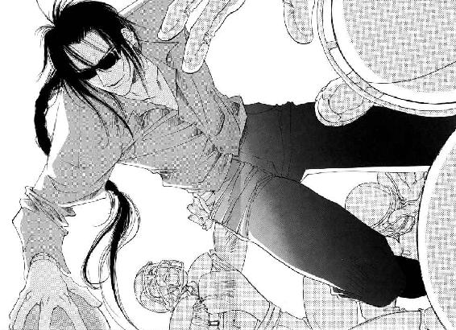

| 三千世界の鴉を殺し(2) (ウィングス・ノヴェル) | |
| 津守時生 | |
１
廊下は、当直任務を終えて宿舎に戻る者たちと、早朝訓練に参加する者たちとで、昼時のような混雑ぶりだった。
その年若い兵士は、かなり前から士官専用出入り口の一角に立ち、行き交う士官たちを緊張した面持ちで見つめている。
やがて、ようやく目当ての将校が現われたのか、その表情に内心の葛藤をうかがわせるさまざまな変化が起こった。
めざす相手を見つけた驚きと喜びは、すぐに狼狽と気弱な迷いの表情に消え、ためらう心に従いかけた足が、その場を立ち去ろうとして向きを変える。
だが、今日の彼はそこで踏みとどまった。
このままでは、何度同じことをくり返しても事態は改善しない。
いつの間にか汗ばんでいた手を固くにぎり、意を決して向き直った彼は、何日も幾度となく待ち受けては気おくれし、声をかけそびれていた相手にやっと話しかけた。
「マ、マックス中尉殿っ」
名を呼ばれた栗毛の女性将校は足を止め、神経質そうな細身の兵士を振り返る。
「なにか」
「こっ、このようなお忙しい時間にお呼び止めいたしまして誠に申しわけございません。じ、自分は第六連隊所属ラウ・リーイン伍長でありますっ。中隊長は、オスカーシュタイン大尉殿であります」
彼の思惑通り、自分の中隊長の名を出したとたん、相手の態度が微妙に変化した。
今月始め、この銀河連邦軍カーマイン基地に着任してきたオスカーシュタイン大尉は、基地が存続する限り伝説になって残りそうなほどの絶世の美男子だった。
ほとんどの女性兵士は、彼の名前を聞けば必ず反応する。それが、特に基地内発行ゴシップ誌『パープル・ヘヴン』の記者のひとりでもあるリンダ・マックス中尉ならば、なおのこと。
少なくとも彼の話に耳を傾ける気になっているあいだに、伍長は自分の用件をまくしたてた。
「自分は、中尉殿がかかわっておられる『パープル・ヘヴン』誌において、今後、自分について根拠のない記述の掲載をお控えくださるよう、切にお願いするものでありますっ」
「その手の苦情は、奥付に書かれたアドレスにメールで送りなさい。それに私は下士官担当じゃないわ」
あからさまな失望の表情こそ見せなかったが、彼の話に関心を失った中尉は、そっけなく追い払おうとする。
だが、ここで引き下がっては意味がないとばかりに、伍長は食い下がった。
「それでは、下士官担当の方のお名前と所属、階級を教えていただけませんか」
「伍長。君は何か思い違いをしているようね。君が問題にしている『パープル・ヘヴン』誌は、つねに伝聞情報もしくは推定記事であると、ゴシップ欄に注意書きされているし、小説も同様に、この物語はフィクションであり、実在の団体および人物とは一切関係がないと書いてある。名誉毀損を云々したければ、宇宙軍法務局へ提訴しなさい。──以上よ」
彼女は、なんの感情も込めず、見事なまでによどみなく決まり文句を言ってのけた。
おそらく彼女自身も何度口にしたのか覚えていないほど、同じ言葉を多くの男たちに言い続けてきたのだろう。
会話を打ち切り、早朝訓練に向かおうとするマックス中尉の背中に、伍長は悲痛な声で訴える。
「自分は、断じてゲイではありませんっ。あのように根拠のない不名誉な記事で、同性からセクシャル・ハラスメントを受ける者の苦痛を少しは──」
「今すぐ、女々しいその口を閉じろっ。命令だ」
女性士官は、即座に鋭く命じた。
ふたりのそばを通り過ぎていく兵士たちが、好奇のまなざしを投げかける。会話の内容を察して苦笑する大半の者に混じって、わずかながら伍長に同情するそぶりを見せたものもいた。
憤然と歩み寄った中尉は、自分とあまり身長の変わらない伍長をにらみつけると、おどしのきいた低い声で言う。
「私たちの発行しているあれが、根も葉もない低俗娯楽雑誌だということは、この基地にいるものならば誰だって知っている。同僚たちにオカマ扱いされるのは、貴様が女々しいカマ野郎だからであって、雑誌は単なるきっかけでしかない！ その事実をその腐った脳味噌によく叩き込んでおけ」
「ノー・マム！ 自分は決して──」
「黙れ。これ以上、私の時間を奪う気ならば、貴様と同じ名前の別人が、雑誌の小説で気の毒な目に遭う確率が高くなるだけだぞ」
本来ならば脅迫になるどころか、ジョークでしかない言葉が、年若い下士官を蒼白にさせた。
これ以上、自分に追いすがる気力はあるまいと確信した彼女だったが、ふと、あることを思いつき、悪魔的なそのひらめきを口にしてみる。
「伍長。君が、二度と自分と同じ名前を『パープル・ヘヴン』誌上で見なくてもすむ方法を教えてあげるわ。投稿者として、誌面作りに協力すればいいのよ」
声をひそめた彼女につられて、伍長も小さな声で答えた。
「しかしながら、自分には文才などまったくありません」
「写真もしくは情報提供という意味よ」
「オスカーシュタイン中隊長殿の、でありますか......っ？」
「察しがいいわね。こちらの希望は、彼の素顔のアップ写真。いい写真ならば買い取りも考慮するわ」
「し、しかし、上官の姿を盗み撮りする行為は、軍法に違反するのでは......？ なによりもオスカーシュタイン大尉殿に申しわけが......」
悲しいほどに生真面目な返事を聞いて、マックス中尉は鼻白む。
「よくわかった。君は、まさしく臆病な最低のカマ野郎ね。君が同僚たちの扱いに抗議する正当性はどこにもないわ」
冷たく言い捨てるなり、二度と振り返らずにその場を離れた。
ひとりの女性士官が、練兵場へ向かう彼女に追いつき、明るくあいさつする。
「おはよう、リンダ。キッパリはねつけてカッコよかったわよ。でも、すっかり悪役ね。また基地内に悪名とどろいちゃうかも」
「おはよう、サーシャ。──大勢見ていたんだもの、あれくらいしなきゃダメよぉ。第一、男どもときたら、こっちがちょっとでも優しい態度をとると、すぐカサにかかって騒ぎ立てるんだから。甘い顔は禁物、悪名大いに結構。アタシらには、なにを言ってもムダだって思わせるまで、タフかつハードに行くわ」
「そーね。別に盗み撮りしたヌードを載せているわけじゃなし、ガタガタうるさいのよ。自分たちだって、ベース・タウンで買ってきたエロ本を、こっそり持ち込んでいるじゃないの。男が女を娯楽に使うなら、女だって男を娯楽に使ってこそ、男女平等ってモンだわ。そんなに許せないなら、自分たちだって『パープル・ヘヴン』の女性版を作って、アタシたちに仕返しすればいいのよね」
リンダ・マックス中尉は、創刊号からの仲間の言葉に何度もうなずく。
「そうそう。そうすれば、火のない所に煙を立てる遊びが、どんなに面白いか、連中もわかるでしょ」
「だけど、男って即物的な生きものだから、幻想のエロティシズムに酔うなんて、高度な知的遊戯は理解できないらしいわよ」
「しょせんケダモノってことね」
世の男性たちが耳にしたら、大いに憤慨し異議申し立てをするに違いない暴言を吐きつつ、ふたりは顔を見合わせて笑い合う。
「まあ、そのあさはかでケダモノなトコが、可愛いんだけど」
「根も葉もないゴシップを書き立てられるほど、アタシたちから興味を持たれているんだって、ちっともわからないんだから、困ったおバカさんたち」
彼女たちの作る低俗ゴシップ本に毎度毎度激怒し、さんざん翻弄されている男たちは、いい面の皮だった。
銀河連邦法では、同性同士の結婚が認められるようになって久しいにもかかわらず、軍隊のように攻撃的な集団にいるヘテロ・セクシュアルの男は、同性愛者であると疑われることを、おのれの全存在を否定されるにひとしい最大最高の侮辱と感じるものが多い。
特に地球系の男性は、悲しいほどいまだに〝男らしさ〟という幻想にとらわれていた。
それでいて、カミング・アウトしてしまった同僚には寛大なのは、宇宙軍法が厳しく差別を禁じているということより、自分たちとは関係のない別の性になったと見なすかららしい。
彼らは明らかに心の中で、男と女と同性愛者の三種類に人間を分類していた。
逆に、女らしさと同性愛者であることが対立しない女性兵士の間で、同性愛はほとんど問題にならない。彼女たちの曖昧さには、快楽の種類は多いほうが得だという、無意識の貪欲さも含まれていた。
男性兵士たちが、報復として女性版『パープル・ヘヴン』を発刊しようと、さほど物議を醸さないのは確実だった。
室内射撃訓練場では、実弾を使用しない。
現在ではすべての銃身が、どんな弾丸を使用しても反動を吸収する構造になっているので、実弾にこだわる必然は心理的なもの以外、存在しなかった。
訓練用の銃は、引き金を引くたびに銃口から赤外線が照射され、標的がそれを感知して命中場所を表示するとともにポイントを加算する。
射撃は、標的までの距離を三段階に変え、腰を落とし片膝を立てた姿勢と、うつ伏せになった伏せ撃ちのふたつの姿勢で行なう。
訓練場は広かったが、限られた時間に四個中隊が集中するため、四つに分割するとどうしても待ち時間が長くなる兵士が出た。
そんな中隊のひとつで、早くも訓練を終えた兵士たちと順番待ちで最後近くの兵士たちが、なにやらもめ始める。
それは、ひとりの兵士を相手にした数人がかりの悪ふざけだった。
「このタマナシ野郎が。テメエなんぞにズボンをはく資格はねえ！ スカートでもはいて、お花畑で花摘みをしてろ」
「ギャハハッ。女どもの魔の手から救い出してくれる王子さまが、白馬に乗って通りかかるかもしれねーぞ」
同じ階級章をつけた屈強な兵士たちに小突き回されているのは、さきほど『パープル・ヘヴン』の問題でマックス中尉に言い負かされていたラウ・リーイン伍長だった。
「おまえらだって、俺の立場になれば笑ってられないんだぞっ！」
「へっ。お生憎サマだな。俺たちゃ、テメエほど顔もスタイルもよくねえから、あの性悪女たちに目をつけられることは、死ぬまでねえだろうよ」
「やーい。女に泣かされてはずかしー。そんなやつのズボンなんか、下ろしちまえ」
からかい半分、嫉妬半分の悪ふざけはエスカレートし、よってたかってリーイン伍長を押さえつけると、そのズボンを引きずり下ろしにかかる。
もがく伍長が助けを求めて叫んでも、周囲の兵士たちはゲラゲラ笑って見ているだけだった。
こんなセクハラもどきの悪ふざけやいじめは、軍法で厳しく禁止されているにもかかわらず、軍隊では日常茶飯事だった。
今のように同性間のセクハラは、どちらかがゲイでない限り、友人同士の親愛表現として、まったく問題にされない。
通りかかる予定だったリーイン伍長の王子さまは、迷彩服を着て現われた。
「うるせえっ！ 朝っぱらから、サカってんじゃねえぞ、ケダモノどもがっ」
背後から罵声を浴びせられた男たちは、即座に悪ふざけをやめ、その場で直立不動の姿勢をとる。
だれもが心を奪われる美貌をスクリーン・グラスで隠した王子さまは、見るからにワルそうな長髪の不良将校だった。
「耳が腐りそうな野郎の悲鳴なんぞを聞かせて、さわやかな朝の気分をよくも台無しにしやがったな」
本人の述べたもっともな理由により、オスカーシュタイン中隊長の機嫌は非常に悪い。
そういう彼の乱暴な言葉遣いは、士官のとるべき言動規範にいちじるしく反している。加えて膝裏まで達する長髪といい、生あるものとは思えないほど精妙な整い方をした美貌といい、彼は全身これカーマイン基地始まって以来の異端児だった。
しかし、輝かしい軍功の数々を誇るこの男が、まともな軍人の範疇に収まり切らない存在なのは、わずかの間に彼の中隊の誰もが承知するところとなっていた。
オスカーシュタイン大尉の存在は、実戦もなく日々訓練に明け暮れるだけの彼らに、大きな変化の予感を与える。それが思い込みに過ぎなくても、彼らは規格はずれの士官に魅了されつつあった。
迷彩服の袖をひじまでまくり上げた彼は、軽く眉をひそめて言った。
「リーイン伍長。俺の目まで腐らんうちに早くズボンを上げろ」
「ア、アイ・サー」
ズボンを下ろされたまま直立不動になっていた兵士は、赤くなって命令に従う。
「この騒ぎの原因はなんだ、クォ軍曹」
腕組みをした彼は、悪ふざけをしていた兵士たちの半分が、クォ軍曹の分隊に所属していたため、クォ分隊長に向き直った。
十人で構成される分隊は、軍隊における最小戦闘単位であり、指揮を取る分隊長は、一兵卒からたたき上げた経験豊富な軍曹が任命される。
たまたま近くにいただけで、自身も原因を知らないクォ軍曹は、当事者のひとりを名指しして説明を求めた。もちろん一言でも不正確なことを言えば、ただではすまないぞと凄むことを忘れない。
指名を受けた兵士は、リーイン伍長が悪名高き『パープル・ヘヴン』の小説の登場人物に取り上げられ、それを悪質なからかいのネタにされて困っていたこと、さきほどマックス中尉に抗議しに行って、泣かされて帰ってきたことを報告した。
軍隊生活では、心身ともにタフでなければやっていけない。たとえ相手が士官だろうと、男たるもの、女に泣かされて帰ってくるとは意気地がない──という軽蔑が暗にこめられている。
意地の悪い笑いが、女性兵士を含めたそこかしこで上がった。
理不尽な相手に言い負かされ、ついくやし泣きをしたところを見られてしまった伍長は、拳をにぎって屈辱に耐える。
だが、意外にもオスカーシュタイン大尉は、伍長の受難に同情的だった。
「いくら根も葉もないホモ・ポルノ小説でも、読者にウケないやつは出さねえと思うぞ。おまえは、いかつい野郎どもに混じると結構目立つハンサムだからな。女性兵士の間で人気があるんだろう。どうせ、お人形遊びと大した差はねえんだ。いちいち気にせず大目に見てやれよ。──なんだ？」
別の兵士が挙手し、上官に質問したいという意思を示す。
「中隊長殿。お言葉ではありますが、ご自分が、あの低俗な雑誌にとんでもなく淫乱な......その、人物として描かれても、果たして同じことをおっしゃられますか？」
その場のだれもが抱いた疑問だった。
ルシファード・オスカーシュタイン大尉を主人公としたふらちな架空恋愛小説が、遠からず、ゴシップ誌の小説欄最大の目玉になるのは、明日太陽が空に昇るのと同じくらい確実視されている。
本人を目の前にしながら、いかにも小説に書かれそうな描写を想像して、赤面するものが続出した。
「現実に襲われるよりは、百万倍もマシだな。そいつを読んで、俺を本当に××だと信じる大馬鹿野郎が出たら話は別だが、そんなやつがいても、今まで俺にふざけたマネをしやがったやつらと同じく、半殺しにして病院送りにしてやるだけだ」
ヒワイな禁句を口にする寸前で危うく呑み込んだ兵士の配慮を、困った不良将校は平気で無にする。
「半殺し......でありますか？」
「そうだ。戦闘時以外に殺したら、軍法会議にかけられちまうだろうがよ」
さらりと口にされたそのセリフは、決して冗談には聞こえなかった。
信じてもらえないと思ったのか、大尉は具体的な話を始める。
「言っておくが、病院送りにした連中は、士官学校時代の教官を始めとして、五人や十人じゃすまねえぞ。中には、数人がかりでロープやらカメラやら、妙な道具に薬まで持参してきたのもいたっけな。そこまでしていただいた以上、俺もやつらが一生忘れないほど、念入りに可愛がってやったよ。さすがに過剰防衛の疑いがあると、憲兵隊に一時拘束されたが、結局、上官の説教だけで無罪放免だった。あの時の乱闘パーティは面白かったぞ」
最後のブラック・ジョークは、あまりにも毒がきつくて誰も笑えなかった。
一同は、言った本人の口元に浮かぶ凄絶な笑みに総毛立つ。
第一等勲章を三度も授与された軍の英雄に対する集団レイプ未遂事件は、おそらくその大きすぎるスキャンダル性から、一定期間の沈黙と引き換えに彼の過剰防衛を不問にしたのだろう。
文句なしに美形で、士官らしからぬ無頼さもあるが、どこかのどかな雰囲気を漂わせるこの優男を、筋肉自慢の硬派な大男たちは、内心で小馬鹿にしていた。
だが、徹底した〝男らしさ〟の信奉者であり、力こそすべての彼らも、上官の垣間見せた本気の恐ろしさには凍りつく。
いかに荒っぽい軍隊内の喧嘩でも、素手の殴り合いで憲兵隊につかまるほど、徹底的にやり合うことは少なかった。
ひとり対数人の戦いだったと推測できる話から、この男の強さがわかる。短時間で戦闘不能にしなければ、人数で上回る相手には勝てない。
襲撃したのが素人ならばともかく、格闘の訓練を積んだ数人に不意打ちされながら、短時間で全員を病院送りにするほどの実力がどんなものか考えると、背筋に寒気が走る。
その場の異様な雰囲気から一同を救ったのは、中隊長の有能にして魅力的な副官ライラ・キム中尉だった。
「こちらにおられたのですか、大尉殿。士官用訓練スペースでいくらお待ちしても、いらっしゃらないので、どうなさったのかと思いました」
「ああ、すまん。ちょっと、ここで騒いでいたから説教していた」
いらつきながらルシファードを探し回っていたライラは、そういう事情ならしようがないけれど、さっさと訓練メニューを消化して下さいという意味を目尻のつり上がった大きな目のまなざしにこめて、上官を見上げる。
大尉は居心地悪そうに身じろぎし、妙な方向にそれてしまった話を戻す。
「んーと。まあ、とにかく、だ。リーイン伍長も、やられっ放しでいるんじゃねーぞ」
「アイ・サー。ありがとうございました」
年若い伍長は、自分の窮地を救ってくれた迷彩服の王子さまに感謝をこめて敬礼した。
「おまえらも、ガキみてーに仲間のズボンの下ろしっこをして喜んでるんじゃねえ」
「そりゃあ、俺たちだって、ズボンを下ろすんなら、キム中尉殿のような美人のほうが楽しいですよ」
ひとりの兵士の軽口に賛同の笑い声が上がったが、ルシファードは笑わなかった。
それどころか、顔色を変えて飛びすさる。
「ライラ相手になんて恐ろしいコトを言うんだっ、馬鹿野郎！ 命知らずっ、お調子者っ、考えなしっ。どうなっても俺は知らねえぞ。俺は、なーんにも聞かなかったからなっ」
じりじりと後退した彼は、最後の宣言とともに身をひるがえし、副官を置き去りにして逃げ出した。
彼の異様な恐れように再び沈黙が降りる。
セクハラまがいの軽口を言った兵士は、おどおどと周囲を見回すが、だれもが視線を合わせようとしない。
「私のズボンを下ろしたいと言ったのは、あなただったわね」
浅黒い肌をしたエキゾチックな女性士官は、白い歯を見せてあでやかに笑う。
美しい笑顔の獰猛さに震え上がった一同は、彼女を怒らせた兵士のそばから、少しずつ離れていく。
「私は男のズボンを下ろしたことはあっても、下ろされた経験はないのよ。あなたにその気があるなら、最初の相手にしてやってもいいけれど。ただし、ここで私との殴り合いに勝ったらの話ね」
「な、殴り合い、でありますか？」
「そう。あなただけ特別に早朝訓練を射撃から格闘に変更してあげる。さあ、構えて」
今や彼女は、高貴な生まれの黒猫から、野生の黒豹に変身していた。
射撃に没頭していたルシファードは、ほとんど無意識にカートリッジの交換を行なう。
実弾は使用しなくても、二十発入りカートリッジの装塡弾数を撃ち尽くすと、別のものと交換するよう義務付けられていた。交換を怠ると、成績に減点のペナルティがつく。
各百発ずつ撃った結果は、つねに全員が携帯するＩＤカードに記録され、基地のメイン・コンピュータがカードを通じ、過去を含めた個人の記録の一切を管理する。
射撃訓練の結果があまりに悪い兵士は、特別給や昇格の考査に影響するので、大隊長を務める少佐クラスの士官であっても、射撃訓練は真剣だった。
新しいカートリッジに換えた彼が、再びライフルを構えようとしかけたところで、同じ大隊に所属する中隊長のエディ・マーカム大尉が話しかけてきた。
「ルシファード。ちょっと頼みがあるんだが、いいか？」
「悪いがあとにしてくれ。今は戦争ごっこで忙しい」
「なんだい、珍しく機嫌が悪いんだな。ははあ、さっき副官が君を探しに行ったようだが、さてはキツイお説教をくらったんだろう。すっかり尻にしかれちゃって、うらやましい限りだ。俺んトコは男だからなぁ。同じ文句を言われても単にムカつくだけだよ。もっとも同性ならではの気の置けない関係も──」
ルシファードは、延々と続きそうな相手のおしゃべりに根負けして射撃を中断する。
「頼みってなに？」
「バスケットボールは得意かな。来月の十五日に士官の有志で作ったチーム同士の試合があるんだが、うちのメンバーのひとりが都合で出られなくなってね。都合がよければ君に加わって欲しいんだ」
「得意かと言われれば普通だが。戦艦乗船勤務が長かったから、球技なんて士官学校以来してねーぞ。それに来月だと、第六連隊は宇宙港の警備担当じゃなかったか？ 中隊長がふたりも不在なのは、いくらなんでもまずいぜ」
「星間定期便の到着がない日なら、副官に任せて休めるんだ。バーミリオン星は、辺境も辺境。宇宙港警備なんて、君が考えているより、ずっと簡単で退屈な任務だよ。それでも、ただ訓練とデスクワークに明け暮れているよりは、移動がある分だけマシだけど」
星間定期便が到着しない日があるという話にショックを受けて、ルシファードは黙っていた。
士官学校時代の三年間をのぞき、六歳の時から先月まで宇宙船の中で生活していた彼にとって、自分が宇宙と切り離されるという感覚は、翼をもがれた鳥のそれにひとしい。
降格と左遷処分自体は、今まで何度もあったことでもあり、高給や出世に興味がない彼に格別の感慨はなかった。
惑星バーミリオンのカーマイン基地が新たな任地だと言われた時も、ああ、そうかと思っただけだった。
監視役も兼ねた副官のライラが、つねについてくるお陰で、孤独を感じたことはない。転任に伴う面倒な雑務もすべて彼女がかたづけてくれる。
だから、今回も今までと変わらないと思い込んでいた。
──俺って、やっぱニブイわ。
多少の時間差が生じたものの、銀河連邦軍の御偉方は、ルシファード・オスカーシュタインに対し、初めて有効な懲罰を与えたことになる。
しかし、持て余しているとは言え、いざとなれば非常に高い戦闘力を持つ有能な軍人でもある彼を切り捨てようとは、反英雄派の御偉方でさえ、だれひとり思っていなかった。
とりあえず辺境の地に押し込めておいて、必要となれば臨時に呼び出せばいい──などと、勝手なことを陰で話し合っていた将軍や元帥たちは、自分たちが軍に執着を抱くがゆえに、ルシファードもまた同じだと思い込む愚を犯していた。
──けっ、バカくせえ。つまんねーから辞めちまおーっと。今日中に除隊願いを出せば、遅くとも今月末には許可が下りるよな。くさるほど資格は取ったから再就職先には困らねえが、とりあえず惑星セルリアンあたりまで行って──。
決して組織人にはなれない奔放な彼の思考は、早くも除隊後の生活に向かう。
彼は想像もしなかったが、宇宙海賊とテロリスト殲滅で名をなした彼が除隊したと聞けば、社長自らがスカウトに飛んでくる警備会社は、まず十や二十程度の数ではすまない。
彼の思考が、一気に除隊後の人生設計まで飛躍している最中だと夢にも思わないマーカム大尉は、兵士たちの訓練エリアで起こった騒ぎに注意を引かれる。
「あれ？ 君の中隊のだれかが倒れたようだ。衛生兵が担架で運んでいくぞ。どうしたんだろう。実弾を使っていないから、暴発なんてことはないはずだし。ケンカかな」
「戦争ごっこが、お医者さんごっこの話になって、格闘訓練に変更されたあげくの事故」
「はあ？ よく意味がわからんのだけど？」
「キジも鳴かずば撃たれまいという教訓だ」
なにしろ鳴いた相手が悪い。士官学校時代から、ライラは上に大がつくほどの負けず嫌いで、自分を不当に低く評価した相手には必ずそれを後悔させる主義だった。
「なんだか知らないが、見に行かなくていいのか？」
「ライラが報告してくれる。それより、いい加減に続きをやらねえと、いつまでたっても射撃訓練が終わらんぞ」
「あ、すまんすまん。あさっての昼食後、チームのメンバーと軽い練習をするんだ。その時にポジションの調整をしよう」
ルシファードは承知のしるしに軽くうなずき、ようやく饒舌な同僚を追い払うと、射撃を再開しながら、思考を除隊後の身の振り方に戻そうとする。
だが、その前に今の出来事から、蓬萊人の外科医師に連想が及ぶ。
そして、連邦軍情報部部長の父親が言った謎の言葉──。
〝蓬萊人の末裔を狩る者どもから守れ〟
狩る者。公式には滅亡した種族とされている蓬萊人を狩る者たち。なにものかは知らないが、どう解釈してもその言葉にいい響きはなかった。
ひとこと守れと命令されても、任務がある時間は完全に拘束される。そんな自分が護衛をつとめるのには、かなり無理があった。
この基地内の軍病院にいる限り、彼は安全なように思えた。なによりも、その証拠に勤続年数が長い。
そうかといって、ルシファードが除隊してバーミリオン星を離れれば、サラディンの身になにかが起こっても、それを知った時にはもう遅い。
──そもそも軍に入ったこと自体が、暴走した念動力で問題を起こした時、もみ消しやすいっつー自己中心的な理由だったもんな。こんな窮屈な思いを我慢してまで、親父の命令を律儀にきく必要が、果たしてあるんだろうか......？
そう思いながらも、その理屈に納得しない自分がすでにいる。
闇の中で妖しく誘いかける焰のような色の双眸が脳裏をよぎると、地上にしばりつけられるのも〝ちょっとくらいなら別にいーかなぁ？〟という気になっていた。
「添い寝をしましょうか、オスカーシュタイン大尉殿？」
すぐ間近でしたライラの冷たい声に、ルシファードは物思いから覚めた。
いつの間にか戻ってきた副官は、伏せ撃ちの姿勢でいる彼の脇腹近くにしゃがんで、膝をかかえている。
「いくら俺でも、ンなトコで寝るかよ。考え事に没頭していただけだって」
「私はてっきり、野戦訓練で戦死したマネでもしているのかと思ったわ。あとがつかえているんだから、早くしなさいよ」
「おまえな。最初のセリフは、立派に俺に対するセクハラだぜ。部下を病院に送った直後にソレはねーだろ」
「自分が言われて嫌なコトは、面白いから他人に言いたいじゃないの」
「......やっぱ、除隊しちゃおっかな、俺」
悪びれもせず言われたルシファードは、ぼやきながら機械的に引き金を引く。
「肋骨二本の単純骨折、全治一週間ってとこね。宇宙港警備までには間に合うから、欠員にならないわ」
「そーゆーことまで計算して痛めつけるあたり、本当におまえは有能な副官だぜ」
「ありがとう、うれしいわ、ボス」
「ホメてねーって」
装塡弾数分を撃ったカートリッジを引き抜き、再び装着して構え直す。
笑って立ち上がったライラは、彼の脇にあるスタンド式の記録装置を操作し、現在の記録を勝手に見た。
予想はしていたが、思わずため息が出る。どうして雑談しながら、これほど完璧な成績を出せるのだろう。
ライラ自身、才能もあり人一倍努力もしたつもりだった。
だが、神経の反応速度や筋力という身体能力の高さに加え、物心ついた時から射撃と体術を厳しく教え込まれてきたという彼との差は、どうあっても縮まりそうにない。
射撃の精度は、精神状態も大きく左右する。感情の振幅の少ない彼がうらやましかった。
２
検査入院した時には、すでに治療のしようがないほど悪化していた疾患により、多臓器不全で死亡した患者の病理解剖を終えたサラディン・アラムートは、立ち会った内科主任のカジャ・ニザリを誘い、医局の主任室でハーブ・ティーを飲んでいた。
「どうして自分の体なのに医者にも見せず、あそこまで悪くできるのか理解に苦しむな、まったく。地球人は痛覚が鈍いんだろうか」
白氏という少数種族に属するカジャは、羽毛を思わせる柔らかな純白の前髪をかき上げ、不機嫌に言う。
地球人なら十五歳相当の外見で成長を止めている百五十歳の彼は、軽く口をとがらせている顔も、すねた美少年にしか見えない。
もっとも、それを前にしたサラディンのほうは、猛毒を持つ小ヘビのごとき相手の表情を、可愛いなどと思う感性はかけらも持ち合わせていなかった。
「市販の民間薬で苦痛をブロックしていたんですよ。故人は、大の医者嫌いだったそうです。いくら医学が発達しても、そればかりはどうしようもありませんね」
「おろかの極みだ。いくら苦いからと言って、解毒薬を飲まず中毒死するバカ者がいるか。私には理解しがたい」
「確かに人の心は不可解ですね。その心が、持ち主の身体を苦しめる。せめて病院まで来てくれさえすれば、薬によるコントロールで状態を改善する余地もあるのですが」
甘くした疲労回復のハーブ・ティーを飲むカジャは、外科主任の言葉に顔をしかめる。
「心因性疾患の話か？ 心療内科はカウンセリングも必要だし、薬に依存し続ける危険も大きい。外科医の君が考えるほど簡単じゃないぞ」
「知っていますよ。ですが、あなたの特殊な能力が役に立つ分野でしょう？」
接触テレパスという、触れた相手の心を読み取る超能力を持つ内科医は、半分は腐れ縁ながらも長いつき合いのサラディンが、初めて自分の能力を話題にしたことに驚いた。
他人の事情に立ち入らない代わり、自分の内にも踏み込ませなかった相手の心境の変化に、その理由を考えながら答える。
「どうだろう？ 人間の心は個々に違う。患者の心を読んでも、私にはストレスにさえならないことが原因だとすれば、それと気づかない危険は高い。君の考えもわかるが、逆にテレパシストは精神科医に向かないんだよ。バランスを崩した他人の異様な精神を受け入れていくうちに、自分の精神までむしばまれかねない。ラフェール人のように他人の感情を表層的に感知するだけのエンパスならば〝他人の気分に敏感な気配りの人〟程度ですむが、思考まで明確に読み取るテレパシストは、逆に意識して能力を封印しているんだ」
そこまで言って気がつく。
超能力を封印するための道具──サイキック・コントロール・システムの腕輪を、両手首へ強制的に装着させられている男がいた。
「そうでしたか。無知ゆえに失礼なことを言いました。おわびします」
「なぜ、急にそんなことを私に聞く？」
さりげなく、さぐりを入れたカジャに対し、サラディンは予想外の答えを返した。
「以前から聞いてみたいと思っていました。私は、来月末に除隊するつもりなので」
「除隊！ いきなりだな。どうして？」
「ある学都で、ごく短期間だけ教鞭を取ったことがあると、以前お話ししたことがありますね？ つい先日、当時の教え子からディスク・メールをもらいました。人づてに私がここの軍病院にいると聞き、難しい手術の必要な患者を受け入れて欲しいと言うのです」
「君の腕は〝魔術師アラムート〟という異名で、一部では伝説の存在だ。当然の話だな」
仲は悪いものの、お互いプロフェッショナルな医者同士、相手の力量には相応の敬意を払うべきだと考えるカジャは、さもありなんという表情で相槌を打つ。
「最近、そんな人間関係のしがらみで、手術を断り切れない状況が増えてきました。束縛されるような気がして、なにやらとても息苦しい。ここにもずいぶん長居をしました。そろそろ去る頃合いでしょう」
「逃げる気か？」
「逃げる？ 医師を続ける限り、患者はどこにでもいるじゃありませんか」
「違うよ、サラ。私は、君がルシファード・オスカーシュタインから逃げ出す気か、と聞いているんだ」
「はあ......？」
このクールな医師が、ここまであっけにとられた表情を見せるのは初めてだった。
「どうして、そこであの大尉の名前が出てくるのですか？ ナースたちの根も葉もない噂話を信じるあなたではないでしょうに」
「自覚しているか否かはおくとして、君は彼を特別の存在として意識している。その彼を切り捨てて去るのは、君の人生にとって大きなマイナスだ。長く生きていれば多少のしがらみが生じるのは当然じゃないか。よどんだ淵に生じる澱のようなものだ。そんなものと彼とを引き換えにするのはやめたまえ。同じ長命種族として忠告する」
「おっしゃる意味がわかりかねます。私は軍医として、彼と三度会っただけですよ。妙な邪推でものを言うなら、相応の覚悟をしていただきましょうか」
当惑にいらだちが混ざった口調で、サラディンは抗議する。
「頑迷なやつだな、君も。生きているだけなら、ウイルスにだってできる。特別な──自分にとって価値あるものに出会うためにこそ人生はあるんだ。地球人より長く生きられる我々が、より多くのものを得なければ、不老長寿などなんの意味がある？」
「カジャ。あなたのお説は興味深く拝聴いたしましたが、私とオスカーシュタイン大尉の関係について、認識に大きなずれがあります。彼は当分死にそうにもありませんし、彼の肉親が彼の美しい頭蓋骨を私にくださる可能性は低いようにも思います。問題にすべきは遠い未来の可能性ではなく、現在、次第に悪化しつつある職場環境のほうなのです。私には〝特別〟よりも〝いつも〟のほうが優先順位は高い」
サラディンは、むきになっていると受け取られない程度の反論をしてから、中身の冷めかかったカップを口元に運ぶ。
それを見つめる白氏のオレンジ色の両眼に、哀れみの色が浮かんだ。
「君がそこまで即物的な考え方をする人間だとは思わなかったよ。残念だな。私にとって君は〝特別〟なのに」
飲みかけの液体が気管に入り、サラディンは激しくむせ返る。
カジャが喜色満面となって叫んだ。
「今の一言は、見事にツボにはまったな！ 気分は最高だ」
「ゴホゴホ......私があなたにとって〝特別にいやがらせをしたい相手〟なのは、改めて言われずともよく知っていますよ」
「そうそう。そのとおりだとも」
茶菓子のメイプル・クッキーをかじりながら、うれしそうにうなずく内科医は、天使のように愛らしい。
だが、まだ軽くむせている外科医は、そんな姿にまどわされなかった。
ほんのり紅潮したパール・ホワイトのなめらかな肌に、くせのない青緑色の髪が乱れかかったサラディンは、日頃の端整な彼のクールな雰囲気と違い、煽情的な妖艶さを漂わせている。
そんな彼に鋭くにらみつけられたカジャのほうにも、相手の美貌に感動した気配は微塵もない。毒薬マニアのカジャにとって、サラディンの価値はあくまで中身にあった。
「私にとっても、あなたは〝特別念入りに仕返しをしたい〟相手です」
「それはよかった。気が合うな」
お互い嫌い合っていながら、なぜかしばしば行動をともにしているふたりだった。
仇敵は、つねに自分の視界に入れておいたほうが安心できるのか、それとも、なにかあれば速攻でいやがらせができるせいなのか──。
おかげで、恐ろしさも倍になってしまうふたりの周囲のものたちは、その両方だろうと思っている。
外見上は、双方ともに極めて美しい青年と少年だったが、さすがに書き捨て御免の無法者集団である『パープル・ヘヴン』の記者たちにも、このふたりの医師を題材に記事を書こうという蛮勇を有するものは皆無だった。
院内通話の呼び出し音が鳴った。
画像電話を兼ねたパソコンを起動させるのが面倒で、サラディンは白衣の胸ポケットから、ＩＤカード大の高機能型携帯情報端末を抜き出す。
イヤホンを伸ばして左耳にかけ、カバーを開けて応答スイッチを押す。
「アラムートです」
『二〇六号室の患者さんが急変です。今、ドクター・ケントが心臓マッサージをしています。ご家族には、まだ連絡が取れません』
「わかりました、すぐに行きます」
会話の内容を察したカジャ・ニザリは、すでにともに主任室を去るべく、イスから立ち上がっていた。
『あの......』
「なんでしょう？」
『今朝入院した部下のお見舞いに、あの黒髪の超絶美形な大尉さんが、先程からいらっしゃってますけどぉ』
「だからなんですか？ そんなお遊びをしている場合ではないでしょう。切りますよ」
やんわりと叱責し、イヤホンのリールを巻き取る彼の渋面に、カジャはもの問いたげなまなざしを向けたが、話題の主の来訪を教えてやるほど寛大な気分ではなかった。
病室に到着した時、すでに患者の容態は持ち直していた。
担当医と話し合い、容態が安定するまで使用する薬の指示を出す。
到着から、その場を担当医に任せて病室を出るまで、さほど時間はかからなかった。
今後の治療計画の見直しと、投薬の変更を考えながらナース・ステーションに向かいかけたサラディンは、ちょうど別の病室から出てきたばかりのルシファードと出会う。
「よう！ 毎度世話になっているぜ、ドクター」
いかに許されているとはいえ大佐の階級を持つ軍医に対し、言語道断な口調であいさつした黒ずくめの男は、明るい笑顔を見せる。
完全に目の表情を覆い隠すサングラスをしていても、その笑顔の好もしさは、大らかな笑いを作る口元によって、いささかも減じない。
仕事のことを考えていたサラディンは、虚を突かれた心地で、とっさに適当な言葉も思いつかず、軽い会釈を返した。
「疲れた顔をしてるな。忙しいのか？」
「え、ええ、まあ。病理解剖を終えたところで、急変が入りまして......」
「根をつめる商売だからしようがねえが、医者の不養生はよく聞く話だからな。あまり無理するなよ」
深い声音から、儀礼ではなく本気で気づかってくれているのがわかる。
自分の健康を心配する言葉を聞くのは、不思議な気持ちだった。
この男の低い声は耳に心地いい。いつまでも聞いていたい気がするのは、本当に疲れているせいだろう。
「サラディン？」
のぞき込んできた彼に思いがけず名を呼ばれて、背筋に奇妙な戦慄が走る。
「なんだか、らしくねえな。なにか心配ごとでもあるのか？」
「除隊を──」
除隊をしようと思っている──。
いくら好意を示してくれようと、出会って間もない彼が引き止めるはずはない。自分の中に始まりかけていた変化は消え、平穏な日々が戻るだろう。
だから、ひとこと言いさえすればよかったのに、あとが続かない。
「除隊を──すれば、わずらわしいことも全部終わりにできて、身軽になれると思ったりはしませんか？」
「ああ、思った思った。ちょうど今朝な。遅まきながら急にこの基地に失望しちまって。宇宙船には乗れねーし、ＡＦＳは二十二機しか配備されてねーし、射撃訓練は実弾使わねーし、おまけにいつも妙なエロ本のせいでモメてるし。これで一年間出動回数ゼロだなんて聞いたら、暴れちゃうよ、俺」
「それで......お辞めになるのですか？」
おのれの言葉が引き出した思わぬ結果に動揺したサラディンは、ためらいがちにたずねずにはいられなかった。
ルシファードの答えには、心外そうな響きがあった。
「辞めねえよ。あんたと約束しただろ。あんたを守ってやるってさ」
「私の......せい？」
「単に俺がしたいからだ。あんたのこと、結構好きだもんな」
「好き......ですか？ そんなことを言われたのは、この基地に着任して以来初めてです。こわいと言われるのは、しばしばですが」
冗談ではないとわかったが、医師の不思議そうなつぶやきにルシファードは笑ってしまう。
「あんた、変わっていて楽しいよ。あの白くてちっちゃいドクターもだけど」
自分たちふたりを指して〝変わっている〟のひとことで終わらせてしまう、この男の豪快な感性に、驚きを通り越してあきれてしまう。
「そう言うあなたも、充分変わっていると思いますが」
「うん。でも、しようがねえよな。普通にしてて変わっていると言われても、自分にとっちゃそれが普通なんだから。まわりの連中の言う普通に合わせる状態が、こっちには苦痛でしかない異常になるわけでさ。俺は俺で、あんたはあんただ。だれだって自分以外のなにものにもなれねえんだし。いいんじゃねえの？ 自分らしくありさえすれば」
「規律を重んじるべき軍人が、それを言うわけですか？」
さらにあきれる。
軍隊は個を犠牲にして、ひとつの目的を目指す全体主義の集団だった。
「軍が俺にくれるものの中で、失って悲しいものなんか、なんにもねえよ。俺に文句があるならクビにすりゃあいいのさ。それをこんなド辺境の基地に放り込みやがってよぉ。あ、また除隊したくなってきたぞ、××」
多くの兵士たちを治療してきた軍医は、士官らしからぬ今の下品な悪態を笑って聞き流す。
「でも、私を守ってくださるんでしょう？」
「この基地にいる限り、俺の出番はねえと思うけどな。しばらく我慢してみるさ。そのうちなにか面白いコトも起こるだろう」
「そうですね。ここには長い私ですが、演習中にＡＦＳの事故が発生したのは初めてです。あなたがきたとたん、ですよ」
「今までの経験によると、俺はトラブルを招き寄せる男らしい。おまけに特定の宗教を信仰する一部の地球人にとって、俺の名前のルシファはものすごく不吉だ。なにしろ悪魔の王の名前だからな」
宗教にまったく興味のないサラディンは、悪魔の王の名前など知らなかったが、大尉の立場の悪さは理解できた。
軍隊という集団は、意外にジンクスを気にする迷信深い部分がある。
「そんな名前をつけたのは、お父さまなのですか？」
「んー。あの親父のクソねじまがった性格なら、息子にそーゆーとんでもねえいやがらせをする可能性は、充分すぎるほどあるな。だけど、つけたのはおふくろなんだ。なぜかも教えてくれたから、気持ちがわかるだけに怒れねえよ」
最後のくだりで声音が変わる。
優しく、哀しい──なにか、深い思いを秘めた声。
それにしても、もうすでにずいぶん長い立ち話をしている。
忙しげに行き交うナースや衛生兵たちが、邪魔にならぬよう廊下の端によって話をしているふたりに、好奇の視線を向けては通り過ぎていく。
こうしている間にも、午後の仕事の予定は狂い、患者の容態の急変でいつ呼び出されるかもわからない。
だが、サラディンは、ルシファードとの会話を続けたかった。だれかと他意もなく、こんな風に自然に話せたのは、死んだ恋人との会話以来の気がする。
そして、なによりも、この男自身に興味があった。
二百年以上、狩る者たちの追求から逃げ続けてきた自分の勘が、早くこの惑星を離れるべきだと告げている。
それでも彼は、危機を訴え続ける内なる声から耳をふさいだ。
守ると約束したから、ここに残ると言ったルシファードの誠意に不実は返せない──。
いいわけと承知で自分に言い聞かせる。
自分が除隊し、この惑星から離れれば、自動的に相手も約束から解放されるのに、それをしたくなかった。
自分を失わず自由に生きることが至上命題であるルシファードは、蓬萊人の〝伴侶〟という概念を絶対に認めないだろう。
この魂をそばにつなぎ止めておくため、約束などという不確かなものに頼ろうとしている自分が、どこか滑稽だった。
「もし失礼でなければ、そのいわれをうかがってもよろしいでしょうか？」
「全然失礼じゃねえが、ちょっと長くなるし、そろそろ──」
ルシファードが言いかけたところで、軍服の胸ポケットに入れてある高機能型携帯情報端末の呼び出し音が鳴る。
「う。やっぱりきたか。あー、心臓に悪い」
副官らしき相手と二言三言やり取りしたのち通信を切った彼を、サラディンはからかった。
「あなたのような方が、あの愛らしい副官におびえるなんて意外です」
「ライラが愛らしいからといって、こわくないって理由にはならねえぞ。二十七年の人生で、俺を心底ビビらせた女は、おふくろとライラのふたりだけだ。あの凶暴なおふくろと張り合えるんだから、ライラも充分生体兵器だと思うぜ」
「それは楽しそうな人生ですね」
「楽しいですとも──ある意味では」
笑うサラディンに真面目くさってうなずく大尉は、掲帯端末をポケットに戻しながら、
「あんたには、ちょうど話したいこともある。勤務が終わったら電話を──するのは、やめておいたほうが無難だな」
ルシファードの視線は、先程から自分たちの会話を盗み聞きしようとして、一番近い病室のドアの陰に張りついているものたちに向けられた。
相変わらず口元に笑みを絶やさないサラディンも、冷ややかなまなざしを投げる。
「通信隊の交換台を通すと、間違いなく盗聴されますね。あそこの女性兵士は『パープル・ヘヴン』の関係者が大半を占めていますから。まったく、ここの基地にプライバシーというものは、存在しないのでしょうか」
「メールアドレスを教えてくれないか。秘密保持用の暗号を使えば、さすがに盗み読みもできねえだろ。あとで暗号解読テンプレート・プログラムを送るよ。それをインストールすれば、普通に使える」
「さすが、四六時中軍の機密にかかわっている方の対処は早いですね」
不意に身を寄せたルシファードが、サラディンの耳元にささやく。
「あとで盗聴不可能な個人用のアドレスを作るまでの応急処置ってコトで」
「オスカーシュタイン大尉」
「ん？」
「女性にこれとそっくり同じことをすれば、あなたは稀代の女たらしになれますよ」
軽く眉をひそめた外科主任は、患者やその家族の疑問にメールで答えるため、彼らに手渡しているアドレスを書いたカードを、黒髪の大尉にも差し出しながら言った。
男のほうは、どうしてそんなことを言われたのかわからず、不思議そうな面持ちでそれを受け取る。
「女を口説くのに、なんでそんな面倒なコトをせにゃならんのよ」
「ああ、そうでした。あなたの場合、そのスクリーングラスをはずせば篭絡できない女性はいませんね」
「顔でひっかかるような女に興味ねえな」
「それはひどい。特別常人と違う美意識を持っていない限り、あなたの美貌に心奪われるなと言っても無理な話でしょう」
「だから、俺はだれにも惚れたことはねえよ。人に惚れるってどんなものか、俺に教えてくれないかな、ドクター」
おおーっといきなり期待に満ちた低いどよめきが、病室のドアの陰から上がる。
しかし、続く彼の言葉は、彼女たちの思惑を思い切り裏切った。
「二百歳も年上なら、いくらあんたでも、三つや四つ、色っぽい話があるだろ？ 人生の先輩として、ぜひ──なんかおかしいコト、言ったか？」
「いえね、さすがに私もちょっとギャラリーたちに同情しました。あなたは許しがたく罪な人です。それに私に対しても、ずいぶん失礼なことを言っています」
「えー？ そーかぁ？ とりあえずゴメン」
相手が苦笑しているので、さほど深刻な失言でもなかろうと判断し、適当にあやまる。
「そんな態度では謝罪になっていませんよ。ですが、まあ、いいでしょう。確かに言われてもしようがない私です。恋愛らしきものをした経験は、過去に一度きりですから」
「なんだ。だったら、俺なんか、まだまだでもいーじゃん」
「はたして、そういう問題でしょうか」
「そーゆー問題さ。恋愛なんか、しなくても生きていけるだろ」
「あなたがそんなセリフを吐いたと聞いたら、泣き伏す女性が山のようにいるでしょう。恋愛を知らない人間だからこその傲慢な言葉ですね。その人なしでは生きていけない、と思う日がきたら、今日のこの暴言を深く反省なさい」
二百歳年上のサラディンから物柔らかにしかられたルシファードは、困ったようすで沈黙したが、やがて静かにかぶりをふった。
「恋愛感情じゃないが、そのセリフを言ったやつをひとり知っているよ。あんなの、俺は絶対ごめんだな。だれかにあんなに深く執着するのは、まともな精神じゃないと思うし、執着されて束縛されるのもすげえ、うっとーしい」
「......本当の孤独を知らない人は、こわいもの知らずでいられて幸せですね。とてもうらやましい」
静かに言いながら、サラディンはルシファードの言葉に傷つけられる自分の弱さに腹を立てていた。
別々に逃げた母親が、いつまでたっても待ち合わせの場所に姿を現わさなかった時、サラディンは深い孤独と絶望を同時に知った。
眼前に広がる空虚な闇に恐怖し、声もなく震えていた幼い日の自分。
だれかに一緒にいて欲しかった。かたく抱きしめて、ずっとそばにいるからと、ささやいて欲しかった。
たったそれだけの望みなのに、蓬萊人には出自をいつわらない限り許されない。
「ドクター。今、俺、すげえまずいことを言った？」
「いいえ。あなたは、あなたの思ったことをおっしゃっただけでしょう。なにもまずくはありませんよ」
「うそだ。あんたは、そうやって──」
ふたりの話をさえぎるように、今度は外科医師の携帯端末が鳴る。
「失礼。──アラムートです。......ふたりですね、わかりました。緊急オペの用意をさせます。第四、第五手術室が空いていますので、そちらへ。ドクター・カトウとドクター・サンツィオに連絡をしてください」
電話を切ったサラディンは、冷徹な医師の顔で大尉に向き直った。
「重傷患者が運ばれてきますので、申しわけありませんが、これで失礼します。──聞こえていたでしょう、あなたたちも。遊びの時間は終わりです。早く準備をなさい」
医師に厳しく言い渡され、ドア越しに立ち聞きしていたナースと衛生兵のふたりが、あわてて出てくる。
そのほかに室内にいた女性患者が、その場に取り残されて、ばつの悪そうな表情でベッドに戻っていく。
「まったく、あきれますね。院内のゴシップ収集以外に興味を持てるものがないのですか、あなたたちは」
小言を言いながらふたりを引き連れて去っていく白衣の背中に、ルシファードが声をかけた。
「ドクター。......その、本当にごめん。あとで連絡するから」
「はい。大尉も早く戻らないと、キュートな副官どのがこわいですよ」
顧みて答えた彼の笑顔は、いつものそれだった。
見送ったルシファードに後味の悪い思いが残る。
強い風に吹かれ消えかかった炎のように、サラディンの琥珀色の双眸が暗く色を変えるのを間近で見た時、自分の言葉で彼を傷つけたことを悟った。
彼につらく激しい恋をした過去があれば、だれかに激しく執着するのは、まともな精神でないと言われて、平気なわけがない。
──俺ってバカ。まともに恋愛ひとつできねえ俺が、自分を基準にモノ言ってどーすんだっての。
今頃気づいても遅い。
だが、ルシファードには、常軌を逸した父の親友に対する執着が、どうしても理解できないのも事実だった。
そのことで母が苦しんでいるのを知っていても、父がその思いを捨てる日は永遠にこないだろう。
なにしろ親友の復讐のために平然とひとつの太陽系をブラックホール化し、六百億人を犠牲にしようとしたという、銀河系最大のワガママ者である。
──あの時、おふくろが間一髪で親父をしばき倒して連れ戻さなきゃ、どんなに恐ろしいことになっていたか......。あやうく銀河一のおたずね者の息子になっちまうところだったぜ。
当時三つだったルシファードは、まだ一度も父親に会っていなかったが、長じて任務を遂行するためなら手段を選ばない男に育った彼に、父親の暴挙を怒る資格はない。
あのＯ２のやろうとしたことだ。もっとも効果的で効率がいい方法を選択した結果だと、簡単に想像がつく。
それにしても当時の状況を聞いた限り、よく母親が父親を殺すのを思いとどまったものだと、そちらのほうが驚きだった。
どんな時でも公正であろうとするフリーダム・ゼロは、ブラックホール化の計画が未遂に終わり、結果的にだれも死んでいない以上、殺すほどの罪にはなっていないと考え、戦意を喪失したＯ２の命を奪えなかったと言う。
〝......俺が甘かったんだ。やつを後腐れなく始末できるチャンスだったのに。くそー、俺のバカバカ！〟
彼女は、何度も真剣に後悔していた。
不幸にもふたりのあいだに息子が生まれるような事態にいたったものの、最初から恋愛感情などかけらもなく、結婚など論外だった母親にしてみれば、未遂に終わった事件のあとに豹変した男の態度は、本当に許せないものだったらしい。
Ｏ２に絶縁を言い渡し、親子ふたりで宇宙船に乗って放浪していた時代、酒の席で父親の話が出るたび、酔った美しい母は、怒りながら毎度同じ話を持ち出した。
〝あのクサレ外道は、俺に人生最大の落ち込みから助けてもらった恩も忘れ、平気でおまえを堕ろせと抜かしやがったんだぞ。なのにあの一件でＦ・Ｍの秘密がバレたあと、コロッと態度を変えて、子供には父親が必要だから一緒に住もうだなんぞと、ヌケヌケとほざいてよ。普通、堕ろせと言った同じ口で息子を同居の口実に使うか？ 俺は、あのふざけたセリフを一生忘れねえからな〟
そして、一緒のテーブルで飲んでいる黒髪の息子をにらみつけて言う。
〝あいつがあいつなら、堕ろせと言われた息子のおまえもおまえだ。あの野郎の思うツボなセリフを無邪気に言いやがって。みろ、このザマを〟
三つの子供に重大な選択を任せた彼女が悪いと反論もできたが、二年以上も不自然な同居生活を強いられた母の苦労を知るルシファードは、ひたすら低姿勢で謝る。
〝ごめんなさい、フリーダ。忠告を無視して本当に悪かった。でも、まさか親父があんな人間だなんて、自分で体験するまで信じられなかったんだよぉ〟
あの時、初めて会った父親の笑顔を見たいと願った彼は、母親の不興を買うのも承知で、父親の希望に沿う言葉を口にした。
〝ぼく、パパと一緒に暮らしたいな〟
テレパシストの父親が、息子の心を読んだか否かは今もわからない。
背の高い父親は息子の願った通り、両手で小さな身体を高く抱き上げると、冷たい印象を一新させる屈託のない笑顔で言った。
〝いい子だ、ぼうや〟
間近で見たハンサムな父親の若々しい笑顔は、幼い息子が幸福感で有頂天になるほど魅力的だった。
──なーんか、ガキの頃の俺って、親父にまんまとタラされていた気がするなぁ。
いつの間にか、自分たち家族の思い出に浸っていたルシファードは、我に返ると心中でため息をつく。
もっとも、たとえダシに使われていただけにせよ、あの父親が全開で笑った顔など滅多に拝めるものではないので、非常に貴重な経験をしたという前向きな考え方もできる。
幼い彼の父親への思慕は、常に一方通行だった。
それを決定的に思い知らされた日、息子のために我慢を重ね、茶番でしかない疑似家族を演じていた母親は爆発し、破局が訪れた。
それでも相変わらず父親に甘い息子は、激怒した彼女に病院送りにされ、それきり逃げられてしまったＯ２のほうに同情している。
正しい愛し方も愛され方も知らず、自明の理のごとく自分を怪物だと言い切ってしまう超能力者の父親は、人並みはずれて不器用な男でもあった。
六百億の命を塵芥と同等にみなし、息子さえ平然と捨て去るＯ２が、すべてに優先して大事に思っているのは同性の親友だった。
恋人ならともかく、なぜ同性にそこまで深く思い入れてしまえるのか、皆目見当もつかない父親似の息子は、大いに悩む。
──今までの俺の部下たちも、時々、俺のためなら命もいらねえなんぞと超気色の悪い寝言をほざきやがったが、あーゆーモンなのかな？ だが、あれはあれで、半分軍への忠誠心も入っていると思うしなぁ。
強大すぎる超能力の暴走をさけるため、生まれながらに感情の振幅が極端に抑制されているルシファードにとって、他人の感情は複雑怪奇な迷路に似ていた。
３
昼間に約束した通り、サラディンが暗号解読用のソフトを自分のパソコンに組み込んだことを確認してから、ルシファードは機密モードに切り替えて話し始めた。
動画の画像とパソコンのマイクが送る互いの声は、暗号化された信号に変換されるので、どちらかの回線に侵入したものが会話を〝盗聴〟しても、盗聴者の画面にはさまざまな色の粒子が無意味に乱舞し、スピーカーからはまったく意味をなさない雑音が流れるだけだった。
単なるのぞき趣味が高じた盗聴者なら、機密モード通信と知った時点で普通はあきらめる。
めずらしくほぼ定時に引き継ぎをして帰宅できたという医師は、当然ながら白衣ではなくスタンド・カラーの私服を着ていた。
画面には、肩の少し下までしか入らないので、全体を想像するのはむずかしい。まして、十五で士官学校に入ってから、軍の支給品以外ほとんど着たことのないルシファードには、服飾関係のデザインに関する知識は限りなく無に近い。
それでも宇宙船での放浪時代、母親とともに社会的地位の高い人間の護衛などもこなしてきた関係から、高級なものを見る目は養われていた。
サラディンの着ている光沢のある服は、角度によって地紋の浮き上がる暗紫色の生地からして相当な高級品だった。貴族的な美貌によく似合う。
普通の白衣を着てさえ優雅な彼は、上品に抑えながら他人の視線を奪うほど華やかという、女性にさえむずかしい装いをいともたやすくしてのける。
男女に関係なく独特な雰囲気を漂わせる種族を別に知っているせいで、ルシファードはそれが個人の資質というより種族的なものだと見抜いていた。
──なるほどね。蓬萊人ってのは、こういうモンか。ラフェール人と好対照だぜ。着道楽ってトコが同じなのは面白いケド。
もっともよく考えてみれば、多忙を極める独身の医師には、そのくらいしか金の使い道は残っていなかった。住居は提供されているし、基地内の廉価な飲食施設を利用する限り、三食全部を外食にしても支出はたかが知れている。
──なのにその私服を着ている時間だって、ロクにねえんだろうなぁ......。
休日はデートどころかコンピュータにハマっている自分を棚に上げて、医師の魅力の持ち腐れを残念に思う。
とりあえず会話を昼間の謝罪から始め、本題に入る前の世間話のつもりで、来月は宇宙港警備の任務につくことを話す。
するとサラディンのほうも、来月は自分が執刀する患者を出迎えに宇宙港へ行くことになったと答えてきた。
『そこまでするのは、数年に一度あるかないかの珍しいことなのですが、まるであなたが着任して初めての宇宙港警備に合わせたようですね。なにかありましたら、その時はよろしく』
「今までなにかあったことは？」
『いいえ、一度もなにも』
悪魔王の名を持つ男は、心の中で渋面を作る。医師は単なる社交辞令のつもりで、なにかあったらと言ったのだろうが、行く先先でなぜか必ず災厄を招き寄せるルシファードが相手だと、全然シャレになっていない。
それでも非戦闘員である軍医のために、なにも起こらないようにと願いつつ、もうひとつの感想を口にした。
「あんたは本当に腕がいいんだな。軍の上層部を動かすほどの大物が、わざわざつてをたよって、こんな僻地まで治療を受けにやってくるんだから」
サラディン・アラムートという名医が、金や権力、名誉という世俗的な栄光に魅力を感じていないのは、主任という肩書つきとはいえ辺境惑星の軍病院に長く勤務している事実から容易に想像がつく。その上、誰彼かまわず底意地の悪いいやがらせをする人間嫌いだった。
そんな彼が、自らの主義に反して宇宙港まで出迎える以上、患者は相当な大物かつ〝ワケあり〟なのだとルシファードは考えた。
蓬萊人の医師は、大尉の好意的な思い違いを律儀に訂正する。
『今回は特殊なケースでしてね。脳に損傷を負ったふたりの患者は、ともに学都に在籍する学生です。損傷が軽いほうのお嬢さんが、ある汎銀河系複合企業体の関係者をご両親にお持ちだとか。ただ、そちらからの働きかけは一切ありません。彼女たちの主治医が、私の教え子だったので治療を引き受けました』
「教え子？」
隠すまでもないと思ったのか、サラディンは経緯を気軽に話す。
彼には、ある学都惑星で短期間ながら教授を務めた過去があり、ふたりの患者の受け入れは、現在教授になっている当時の教え子からの依頼だった。
学都の優秀な学生ふたりが休暇中の旅行で事故を起こし、瀕死の重傷を負った。そのうちのひとりは、学都の研究施設へ多額の出資をしている企業の社長令嬢だという。
よくある話ではあるが、そんなしがらみを軽蔑するタイプに思えるサラディンが、教え子の願いを聞き入れたのは驚きだった。
「すっげえ、意外。そーゆーのって全然あんたらしくねえよ。ひょっとして教え子になにか弱みでもにぎられてるのか？」
『食堂で初めて出会った時、あなたは言いたい放題をするなと副官に忠告されていませんでしたか？ もう忘れてしまったとは、情けない鳥頭の上官殿ですね』
細い眉をしかめた医師は、皮肉混じりにたしなめてから、説明を続ける。
状態がより深刻なのは、運転していた社長令嬢ではなく、ナビシートに座っていたその学友の娘だった。最新設備と優秀なスタッフを有する学都の医療機関が治療しても、機能障害が残るという。
それに加えて、完治までの医療費は膨大な額になる。別の惑星に暮らす、ごく一般的な会社員である彼女の両親には、その四分の一さえ支払い能力がない。
サラディンの教え子の教授は、学友の治療費も負担してくれれば、令嬢を完璧に元通りにする医師を紹介すると、その両親に持ちかけた。
ルシファードは、女性だというサラディンの教え子の不敵さに感心する。
「ふーん。金持ちの親バカ......もとい、愛情につけ込んだワケか。相手にも運転していたのが、自分の娘だったという弱みもあることだしな。だけど、そのダシに使われたドクターは、いい迷惑だよなぁ」
『迷惑とまでは言いませんが、社長令嬢ひとりの依頼ならば断っていました。まぁ、いろいろと考えましてね。簡単な手術ばかりこなしていると腕がなまるとか、極めて大きな額の治療費が入れば、院長に補充人員を要求できるかもしれないとか。それに......』と、言いよどんだ医師の唇に、常の彼らしからぬ優しい微笑みが浮かぶ。
『私は当時、彼女をとても好きだったのを思い出したのです』
「ほう。それはそれは結構な」
『勘違いしないで下さい。恋愛感情ではなく、彼女の人間的魅力に純粋な好意を持っていたという意味です。不思議な浮遊感のある実にチャーミングな女性でした。七十年たっても笑顔が全然変わらなくて......本当になつかしかった』
副官にあきれられるくらい淡泊でも、一応男の端くれであるルシファードは、この麗しき蓬萊人に魅力的だと言わせた女性なら会ってみたいものだと思った。が、七十年前という数字を聞いて落胆する。
彼は二百歳年上のサラディンと違って、正真正銘中身も若いので、魅力的な老婦人とお茶を飲んで幸せになれるほど、枯れた境地にはまだ達していない。
とまれその女性が何歳であれ、人間嫌いの医師に再会をなつかしく思う相手が存在するのは、喜ばしいことだった。
その時、ディスプレイのすみに外部からの侵入を告げるマークが現われる。独自に組んだ侵入感知プログラムは、盗聴者の出現を察知するなり、即座に主人へ告発した。
──××××ッ！ お約束のように盗み聞きしにやってくるんじゃねえっ。
ルシファードは表情を変えず、そのマークが象徴するだれかに向かって、腹の中で口汚くののしった。
この会話が、機密モードでなされていると知って即座にあきらめるならよし。あとで解読する気で記録するなら、こちらは相応の行動を起こさねばならない。
とりあえず、そしらぬ顔で会話を続ける。
「事情はわかった。ふたりの患者だけでなく、つき添いにもいろいろと気配りが必要で、なんだか大変そうだな。医者って、病気やケガを治せばいいだけだと思っていたんだが」
『医療というのは、サービス業でもあります。お客様である患者の皆さんの満足があってこそ、営業を続けていけるわけですから。軍病院といえども独立採算制である以上、例外ではありません』
「でも、基地の兵士たちは自分で治療費を払っていないだけあって、文句なんて言わねえだろ？ それどころかクソ面白くもねえハードな訓練の日々と比べれば、可愛いナースのお嬢さんが優しくしてくれるだけで、毎日が天国だもんな。治っても退院したくねえって、ゴネるやつばかりじゃねえの？」
くつろいだようすで軽く指を組んだサラディンは、あでやかに笑った。
『私は軍医ですよ。そのような理由で連邦軍の限りある予算をムダに使うなど、到底認められません。普通は私が優しくさとせば、全員快く退院していきますけれど』
「......おサスガでございます、軍医殿」
この医師は、当然の話を普通に話しているだけなのに、時折大変不穏な印象を周囲に与える。大半の人間は恐怖で身をすくませる場面だった。
その魔法が効かないルシファードは、迫力満点の蓬萊人の笑顔に見惚れつつ、軍医の断固とした態度を称賛する。
だが、相変わらず画面のはしに表示されているハッキングのマークは、楽しい彼の気分に水をさした。
──この基地には、機密モードさえのぞき見して、ゴシップのネタにしやがるのか。俺とドクターを笑いものにしようとは、いい度胸じゃねえか。
そう思った時点で、不埒な侵入者に鉄槌をくだす決断をしたものの、相手がゴシップ雑誌関係者とは別の目的を持って侵入した可能性も考えないわけではなかった。
〝狩る者〟──。
父親であり、連邦軍情報部の上官でもあるＯ２の口にした不吉な言葉が脳裏に甦る。
宇宙港は基地内にあるといっても、乗り換えて各都市に向かう客のために、民間の空港と併設されている。出入りするのは、圧倒的に軍関係者より民間人のほうが多い。
非常に目立つサラディンの姿が、不特定多数の目に触れることで予測不能の危険は増す。外来として受け入れる民間人は、コネクションを持つ身元の確かな少数の者だけという軍病院内の比ではなかった。
治療にどれほどかかるか知らないが、少なくとも患者の到着時に警備担当なのは、医師を守らねばならないルシファードにとって都合がいい。
宇宙港の警備がどんなシステムで行なわれているのか、今はまだわからない。それでも患者一行の到着後、厳重な照会手続きを必要とする民間人ではなく、軍関係者扱いで簡単に通関できるよう、動いてみるつもりだった。
テロリストや身の代金目当ての海賊たちが、しばしば標的としてねらう汎銀河系複合企業体の関係者なら、特例の口実には事欠かないので、上官の許可も得やすい。
もっとも彼が守りたいのは、患者ではなく医師のほうだとは、だれも──当の本人でさえ思わないだろう。
患者の到着日近くになってから詳細な打ち合わせをすることにして、とりあえず今は不心得ものの排除が先だった。
「ところで、ドクター。実は少し前から、俺たちの会話をのぞき見しているデバ亀野郎がいるんだが」
『早速ハッキングですか。まったくこの基地の連中はしようのない。相手も暗号解読のテンプレートを持っているのでしょうか？』
「いや。こいつは俺のオリジナルで、軍使用の暗号ソフトじゃねえから。とりあえず記録しているだけだろう」
『解読する自信があるのでしょうね。ここには、仕事で活用されないなら、多少違法行為でも腕をふるってみようかと考えるプロも結構いそうですし』
医師がため息まじりに言う通り、通信隊には手段を選ばない情報収集および分析、早い話が情報戦のスパイ活動を主要任務として養成されたプロがいる。
しかし、いくら活躍の場を与えられなくても、軍に給料をもらいながら特殊技能を身につけた軍人が、ゴシップ屋の片棒をかついでいい理由にはならない。
多くの耳目がある病院内で、暗号云々と言ったのは、多少は盗聴や不法侵入の抑止力になればと考えたのだが──。
「そりゃあ、軍隊生活にプライバシーなんぞロクにねえっつーコトは、十二年もいればイヤになるほど思い知らされていますがね。ヒマで刺激に飢えているからって、いくらなんでもここの基地は異常だぜ。なんで、ここまで夜討ち朝駆けしやがるんだろう？」
『あなたに興味を持つなと言うほうが、無理というものでしょう。私もあなたに興味がありますよ。......とても』
このセリフを言われたのが、サラディンをマッドでサイコな変態外科医と呼んだワルター・シュミット大尉であったなら、半泣きで騒ぎ立てただろう。
〝なにっ？ なになになにっ？ 最後の妙な間は、なんなんだよおぉぉーっ！ 俺の勘違いだって証明されるまで、ひとりで夜眠れないぃぃぃ～〟
ルシファード・オスカーシュタイン大尉は、精緻を極めた絶世の美貌と相反して、めずらしいまでにそちらの方面には鈍感だったので、いたって気軽く応じる。
「あ、そうそう。俺の名前のいわれを話すはずだったんだよな。ラフェール人の話もあって長くなるんで、こうして連絡したのに......本題に入る前にコレとは」
『どうしましょう。切りましょうか？』
「すまんが、ハッカー野郎を逆探知してシメるまで、つなぎっ放しでいてくれないか？」
『それはかまいませんが、シメるとは具体的にどのような？ 相手があなたより上級者だった場合、少々面倒な事態になりますよ』
黒髪の大尉は、立場を気遣う医師に獰猛な笑みを浮かべて答えた。
「大丈夫。機密モードの盗聴は、軍法会議モンの犯罪だ。だれだって、宇宙軍刑務所に入るより、骨折で基地内の病院に入るほうを選ぶんじゃねえの？」
『それを聞いて安心しました。入院後のケアは私にぜひ任せて下さい。当事者のひとりとして歓待いたしましょう』
愁眉を開いたサラディンの笑顔は、いつもながら上品でなまめかしく、身震いが出るほど剣呑だった。
──たとえ男でも、ここまで美人だと見ているだけで幸せになるなぁ......♡
彼の人となりを知っているライラ以外、だれも信じないだろうが、自分の顔は自分の顔というだけの意味と価値しかないルシファードは、画面に映し出された蓬萊人の美貌をながめて、ほのぼのとした喜びにひたる。
「それでは失礼して、これから逆探知に取りかからせてもらう」
『別に私がお手伝いできることもないようですね』
「ああ。かたづいたら携帯端末に連絡を入れるから、そのあいだは回線を切らないで、なにか他の仕事をしていてくれ」
多忙ゆえに貴重なプライベートの時間をムダにさせてはなるまいと思った大尉の提案に、医師は少し考えてから小さくうなずく。
『それではお言葉に甘えて。せっかく楽しい通話でしたのに、こんな形で中断するのはとても残念です。またの機会を期待してよろしいでしょうか』
「もちろん。お互いの仕事の都合が合えばいつでも」
その返事を受けたサラディンは、満足気にもう一度うなずくとパソコンの前を離れた。
それを見送ってからこちらも席を立ち、自室にいることを祈りつつライラを携帯端末に呼び出す。
『はい。ライラ・キム中尉です』
「俺だ。自由時間にすまん。ドクター・アラムートと話をしている最中にハッキングされた。これから逆探知にかかるので協力してくれないか」
『了解。裏庭のはずれで待っていればいいわね？』
優秀な上につき合いの長い副官は、即座に状況を呑み込む。
「ああ。毎度ながら愛してるぜ、ハニー」
『毎度ながら面倒に巻き込まれるからでしょう。じゃあ、あとでね、ダーリン』
むこう側でライラが、しようのない男だとばかりに苦笑する気配があった。彼女は上官の軽口に調子を合わせて通信を切る。
「さて、と」
ルシファードは、転任の際に自らの手で持ちこんだ大きなトランクを部屋のすみから机のそばへと移動させ、指紋と暗証番号、ＩＤカードの三つが必要なロックを解除する。
彼に限らず大半の兵士はそうだが、それ以外の私物はわずかな私服の着替え程度しかない。
トランクの中に入っていたのは、いくつものノート・ブック型コンピュータとケーブル、データ・アクセサリー、バイオ・メモリーのキャリング・ケース、そして黒いヘルメット。──現在、多くの研究機関が、さまざまな方式で研究開発をすすめている思考連動コンピュータ〝ブレイン・ギア〟の試作品だった。
どれも運搬中に内部で移動しないよう、厳重に固定されている。
とりあえず最小限に必要なものだけを取り出すと、支給品のコンピュータの隣に置き、おのおのをすばやく接続する。最後のケーブルをヘルメットにつなぎ、私物のコンピュータを起動させた。
かなりの重さがあるブレイン・ギアを装着し、鼻の下まで達するバイザーをおろしたルシファードは、ワイヤー・タイプのマイクを伸ばすと内臓ＡＩに起動を命じる。
彼の声紋に反応したＡＩが、装着者の確認作業を経て、登録者本人と認めた次の瞬間には、侵入者の追跡を始めていた。
侵入のお約束として、現在起動しているいくつもの無関係なコンピュータを経由し、基地のメイン・コンピュータにつながったのち、さらに基地の外へと出ていく。
侵入経路をたどって光ファイバーの回線を次々とさかのぼる過程で、一瞬、違和感を覚えた箇所があった。
本来の相手の追跡を続けるほかに、違和感のあった箇所をチェックして、巧妙に分岐がカモフラージュされた回線を発見する。
普段は〝勘〟と呼ぶかすかな感覚が拡大され、もう少し明確なセンサーとなって働く。ブレイン・ギアを使用していなければ、ここまで簡単には気づかない。
──たぶん、こっちが本命だな。
本来のルートは、パープル・タウンにある多国籍企業の支社ビルの経理コンピュータに行き着いた。民間企業の経理課職員が、宇宙軍に対する好奇心から侵入した可能性もあるので、一応記録を残す。
本命とおぼしき相手の回線は、さらに多くの無関係なシステムを経由して基地のメイン・コンピュータに舞い戻り、通信隊の男性独身寮であるコンドミニアムにつながっていた。
だが、回線が個室別のそれに分岐する寸前、勢いあまったルシファードは、侵入者が仕掛けた追跡探知トラップにかかってしまった。
罠というより、本質は迎撃目的の攻撃防壁であるそれは、こちらのシステム・ダウンを目的としたウイルスを送り出してきたが、取りついて面倒を起こされる前にカウンター・ウイルスで一掃する。
ルシファードは攻撃を無力化する手間を惜しみ、防壁が第二波の攻撃命令を下すより早く、防壁プログラムそのものに干渉する力業に出た。
崩れた論理から生じたすき間を強硬突破し、個室別配線の分岐を通り抜け、侵入者の部屋と使用されたコンピュータを特定する。
ここまでの追跡記録を憲兵隊に渡せば、間違いなく侵入者は軍法会議モノだった。
軽くすんで、罰金と降格処分。機密モードでの交信であるため、こちらの申し立ていかんでは、他の任務遂行中の将校に対するスパイ行為と認定されて刑務所送りになる。
ルシファードは、そんな大人げないマネをする気はなかった。
個人間のトラブルは、双方の話し合いによって解決するのが、連邦宇宙軍の伝統だった。売られたケンカを買わないだけでなく、憲兵隊に持ち込むような兵士は、弱虫と見なされて軽蔑される。
逆探知開始から二分弱。彼がトラップにかかってから、使用機器の特定までの所要時間はゼロ・コンマ数秒。
相手のコンピュータが、ようやくトラップ作動による警告音を発するかどうかの状況だった。
相手は、予想だにしていなかった警告音を耳にし、愕然とするだろう。その驚愕から覚めるのに二秒。自己防衛本能にかられ、コンピュータから通信ケーブルを引き抜くという、物理的な通信回路断絶にいたるまでに、もう一秒か二秒。
ルシファードは、ためらわず相手のコンピュータのＡＩを乗っ取り、ディスプレイとスピーカーを利用した〝特殊閃光音響攻撃〟を仕掛けた。
原理は、軍が使用するスタン・グレネードや警察のフラッシュ・バングと同じで、〇・一秒ほど放出する大光量の閃光と轟音による衝撃波が、室内にいる人間の思考能力をマヒさせる。
スタン・グレネード使用時において、相手のマヒ状態は平均四十五秒続くと言われているが、パソコンのインターフェースでは出力に限界があり、そこまでの光度と音量を出せない。侵入者をさらに動転させ、しばらくその場に釘づけする時間稼ぎが目的だった。
それを行なったのち、ルシファードは回線を戻って基地のメイン・コンピュータに侵入する。
そこで彼は、初めて私物のノート・パソコンを利用した。
私物のそれは、彼が独自に組んだ侵入支援プログラムに従い、基地のメイン・コンピュータの侵入監視プログラムに対し、めくらましの疑似情報を流し始める。
ルシファードは、通信隊独身寮の管理システムを乗っ取ると短い命令を与え、正常に戻したあとから、それを誤作動と判断して修正しないように環境を整えた。
最後の仕上げに、窓の下で強襲用の車を乗りつけて、待機しているはずの副官の携帯端末に連絡を入れた。
「場所は、通信隊の男性兵士用独身寮。第六通信中隊のやつだった」
『了解。中隊長のラングレー大尉には、話つけとくわ』
これぞ、あうんの呼吸。トラブルを呼ぶ男と言われる自分との長いつき合いで、ライラは抜群の危機管理能力を有するにいたった。
ブレイン・ギアのスイッチを切り、ハッキング用機器のケーブルを抜いて、手早くトランクの所定位置に納めながら、ＰＣリングに内蔵された時計に目を走らせる。
三分が経過していた。
施錠したトランクをもとの場所に戻し、イスの背にかけてあったジャンパーをつかむと二階の自室の窓を開け、ためらいもせずに飛び降りた。
残念ながら士官用コンドミニアムの裏庭は芝生と花壇に占められ、リニアカーが乗り込めるようにはなっていない。
芝生のはずれの小道で彼を待っていたライラは、車の運転席から軽く片手を上げて合図した。
助手席に乗り込んだ彼が、シートベルトをするかしないかのうちに副官は車をスタートさせ、一気に最高速度まで持っていく。
慣性によって座席に体を強く押しつけられる。
こんなむちゃな加速が可能なのは、運転を手動に切り替えているせいだった。
たとえ軍人であっても、基地内での暴走行為は、立派に軍法にある交通法規違反として、憲兵隊につかまる。
「おい。相変わらず、おまえは......」
「ご安心あれ、連中の夜間パトロールのルートはチェックずみ。最短コースでブッ飛ばすわよぉう！」
「ひゃあ、お助けぇ」
その場のノリで情けない声を出し、よけいに彼女をあおってしまう。
ナビ・システムには、基地内の詳細なロード・マップが表示されていた。
さすがに優秀な副官も、着任して一月たたない上、初めての地上勤務とあっては、基地敷地内の主要設備なら〝たなごころを指すようにわかる〟とはいかない。
リニア設備が埋設されていない道に入りかけた時には、一応車のＡＩが音声でそれを教えてくれるようになっているものの、このスピードでは境界を越える前に停止するのは無理だろう。ルートを逸脱したリニアカーは、その瞬間からただの箱と化す。
日頃はクールなライラだが、沸点はルシファードより低い。ともにイケイケの武闘派であるだけに、荒事での息の合いようは、生き別れの双子かと冷やかされるほどだった。
ルシファードの派手な軍功の陰には、副官の彼女の多大な貢献がある。
──こんな優秀なやつを俺の〝監視役〟につけるんだから、親父も人材のムダづかいをするよな。
論外のスピードを出すために、人気のないルートを選んで走る彼女の横顔をながめながら、超能力を暴走させる危険性をつねにかかえた男は思う。
自分のようなトラブルの種にかかわらなければ、連邦宇宙軍中央本部所属という超エリート・コースも夢ではなかった。──だからこそ、自分の副官がつとまるのだとも言えるのだが。
ナビ・システムの画面に表示された現在地と目的地のしるしが、ほとんど重なり合う。
右手に星空を背景にした通信隊の独身寮が浮かび上がる。各部屋の窓の明かりと、非常階段を示す緑色のライトが、建物の黒い影に整然とはめこまれていた。
「ラングレー大尉は、全治十五日で手を打つそうよ」
「おまえより気前がいいな」
「あなたにチョッカイかければ、こうなるという見せしめにしたいって、私が頼んだの」
「おまえって......。だけど結局は、俺の悪名になっちまうんだぜ？」
「いいのよ、私の悪名でなければ」
ライラは減速し、ハンドルを切ってコンドミニアムの駐車場に乗り入れる。
ジャンパーのポケットから取り出したスクリーン・グラスをかけつつ、ルシファードは嘆く。
「俺は時々、つくづくおのれの幸せについて考えるよ」
「閉じ込められた通信隊のネズミさんは、今、このドアが開いてくれたら、一生分の幸せを使い果たしてもいいと思っているでしょうね。──へい、着きましたぜ、旦那」
「明けない夜がないように、開かないドアはない、と。五分したら開くように指令を出してあるワケだ。んじゃ、ちょいと教育的指導に行ってくるぜ」
駐車場に入ったところでシートベルトをはずし、ドアに手をかけていた男は、完全に停車する前に車外へ飛び出していた。
非常階段を二段飛ばしに駆け上がった長身の影が、ドアの向こうに消えるのを見届けたあと、ライラは満点の星空を見るために車を降りる。
それほど寒さは感じなかったが、吐く息が少し白く変わった。
宇宙空間にいる限り、ながめる星がまたたくことはない。しばらくは、こうして大気の底から、またたく星々を見上げる夜が続くだろう。
ライラは、あくまで〝しばらくは〟だと思っている。
軍の戦略コンピュータであるＭＭシリーズが、たとえ一台でも今度の作戦にルシファード・オスカーシュタインが必要であると提言すれば、彼は前線に呼び戻される。
ＭＭシリーズのデータ・ベース作成には、情報部も深くかかわっていた。ルシファードのデータに潜在能力測定不能という結果の出た超能力の項目も加えられていることは、容易に想像がつく。
情報部が彼の超能力に関係する情報を一括管理しているため、本部上層部に所属する将軍であろうと、彼の隠された力を知らない。
ライラは自分の目で、普段は抑制されている彼の力の一端を見たことがある。
軍事的に重要な某惑星のクーデター阻止に投入された自分たちの師団は、計算外の異常気象によって作戦遂行は困難を極めた。
宇宙軍は連隊、ひどいところでは大隊単位で孤立し、弾薬がつきたところを包囲した敵軍に次々と殲滅されていった。
当時、少佐だったルシファードの率いる大隊も一個中隊を失い、弾薬も底をつく寸前だった。
態勢を立て直すために一時撤退し、わずかな休憩でふたりきりになった時、彼は不機嫌そうに片手を突き出して言った。
〝どうやら、補給部隊は途中でやられちまったようだ。これ以上、部下を犬死にさせられねえ。──おまえも死にたくなきゃ、腕輪をはずせ。片方でいい〟
確かに今をおいて、いつはずすのかと問われれば返答につまる。死んでしまっては超能力も使えない。
〝片方でいいの？ こうなったら、一個も二個も一緒よ〟
〝一個で充分だ〟
ＰＣリングをはずし始めたライラに対し、腕輪に視線を固定したまま彼は言った。
〝頼みがある。どんな結果を見ても、俺をバケモノと呼ばないでくれ。......おまえにそれを言われると、たぶん相当こたえる〟
不安そうな声。
すでに多くの戦場で華々しい戦功を上げ、二十二歳で少佐になっていた男の、まるで親に見捨てられるのを恐れる子供のように弱々しい言葉だった。
〝絶対に言わない。命をかけて誓うわ〟
彼女の誓いは、今も破られていない。
彼は片手にＰＣリングを残したまま、飛行中の戦闘機数機を空中で捕獲し、敵のＡＦＳ小隊にたたきつけた。その際、ＡＦＳに対しても直接念動力を使ったのだろう。
ＡＦＳ一機の爆発で直径二百メートルのクレーターができる。何機爆発したのか今もって不明だが、だいぶ距離があったにもかかわらず、この世の終わりかと思ったほどの大爆発が起こった。
加えてその間近にあった休火山が、ＡＦＳの爆発で噴火を誘発され、溶岩流のながれる方向に集結していた敵軍は、大きな損害を受けて撤退。
繊細な感情を持たないがゆえに、他人の喜怒哀楽を理解できず、時折、戦慄するほど非人間的な部分を垣間見せるルシファードだったが、超能力を意識的に使用することには、別人のようにナーバスになる。
そんな彼をとらえて精神操作をほどこし、兵器に仕立て上げることはたやすい。
彼の母親は、彼に自分自身を守らせるため、体術と武器の使い方、宇宙船の操縦法など、多くの技術と知識を教え込んだ。父親は、息子を自分の監視下におくことで、間接的に超能力の軍事利用を防いでいる。
だが、星空を見上げるライラの胸には、確信に近い思いがあった。
いつかきっと、ルシファードは両親の予想だにしない人生を歩み出すだろう。
あの男の心には、なにものにも縛られない力強い翼がある。
出し抜けに肩をたたかれ、思わず脇に吊ったホルスターの拳銃に手が伸びたほど驚く。
「鉄拳制裁、もとい教育的指導終了しましたぁ、副官殿」
ホールド・アップした黒髪の上官が、報告した。
「ずいぶん早かったじゃないの」
「そうでもねえぜ。結局、だれに頼まれたか吐きやがらねえの。──なあ、ライラ。拳銃持ってくるほどのことか？」
「レディのたしなみよ」
「丸腰の俺の立場は？」
「弾よけってトコね。救急車を呼ばないと」
ルシファードは、携帯端末を取り出しかけた彼女を押しとどめる。
「やつの部屋から連絡した。ドクター・アラムートにも、ひとり複雑骨折の急患を送るからヨロシクって言っておいた」
「手回しのいいコト。あのぞっとするほど美形のドクターとあなたとの私的通話なら、例のゴシップ雑誌が言い値で買ってくれると考えたんじゃない？」
「連中が期待するのと、まったく別の意味でやべえコトを言おうと思っていたんだが......。それにしても困ったな。機密モードですら盗聴されるありさまだと、個人的な話が全然できねえ。どうすればいいんだ」
副官は、本当に困って考え込む男を軽蔑のまなざしで見遣った。
「バカじゃないの。直接会いに行って、ふたりきりで話せば？」
「......そっかぁ。まったく、おっしゃるとおりでございます。そーゆーアナログな手段が一番確実だとは」
「アナログついでに交換日記なんてどう？ なんだったら私が毎日届けてあげるわよ」
「するかよ。第一、おまえが売らねえって保証はあるのか」
「なに。私が信用できないと？」
大きな目でにらむ副官に対し、ルシファードがクールに言い返す。
「面白いからって、よ」
「あっはっは！ あるある。それなら、ありうる！」
──本当にこいつ、適性検査で情報将校に向いているって出たのか？
大笑いするライラに肩をたたかれながら、彼が自分の幸福についての考察に入りかけていると、一台のリニアカーが駐車場に入ってきた。
運転席から降りてきたのは、赤銅色の巻き毛を肩にたらした女性将校だった。
ジャンパーの兵科章は通信、階級は大尉。すでに士官クラブのバーや食堂で何度か顔を合わせているメリッサ・ラングレー大尉だった。
階級が下になるライラが、彼女に対してすばやく敬礼したのにルシファードもならい、ラングレー大尉も立ち止まって答礼する。
彼女は、緊張感のないようすのふたりを交互にながめて言った。
「なに？ ひょっとして、もう終わっちゃったの？ ライラから連絡受けてすぐ、素顔で飛び出してきたっていうのに」
「見物したければ安全運転はやめておけよ」
「やれやれ、かわいそうなボビー。彼ね、婚約者が例の雑誌の編集員なのよ。それで上官として、情状酌量の余地ありと訴えるために来たんだけど」
「なるほど、××××握られてりゃ、口を割るわけねえわな」
メリッサは、たっぷり数秒間沈黙したのち、ライラに向き直ってたずねた。
「ねえ。彼って、いつもこう？」
「イエス、マム。まことに遺憾ながら」
「なんか悪いことを言ったか？」
「いいえ。軍にいる以上、いやでも耳慣れてしまう単語だわ。ただ、それを士官の口から聞かされる日がくるとは、思ってみなかっただけ。しかも、こんなハンサムから当たり前のように、なんの悪気もなく」
早く謝罪をしろ、と副官にひじで小突かれた男は、きまり悪げにあやまる。
「すまん、悪かった。俺、育ちが悪いんで、普通に話しているとついポロッと......」
「いいわよ。そのかわり、これからバーに行っておごりなさい。部下に対するリンチを黙認してあげたんだから、そのくらいしてくれてもいいでしょ」
「教育的指導、だ。万が一、憲兵隊にバレたら、あんたも共同謀議罪でパクられるぞ。しかも、買収までつく。おごるけど」
「そうこなくちゃね。......ああっ。しまった、素顔でバーに行く日がくるとも思わなかったわっ。どうしましょう」
「大丈夫。どうせ暗いか──」
ルシファードの足を思い切り踏んで黙らせたライラは、同性の大尉に愛想よく笑いかけ、上官の失言をごまかす。
「よろしければ、大尉殿とはバーで待ち合わせることにして、一度お部屋に戻られてはいかがでしょう？」
「いいわ、面倒くさい。それより、ライラも一緒にくるでしょ？ 共犯にされちゃったんだから、当然、誰かさんのおごりでね」
「よろこんで、マム」
「きっとそーなると思っていましたよ、ワタクシは」
「両手に花なのよ。少しは、うれしそうにしなさいな、闇夜のカラスさん。夜なのに、よくそんなスクリーン・グラスをかけていられるわね」
「果たして両手にウワバミでないと、一体だれが言えるでしょう？ ドッキドキ」
左胸を押さえる彼のしぐさに女たちが笑う。
「あやうし、大尉の銀行口座って？ ご期待に応えて、大いにダメージを与えてあげる」
ふざけているうちに連絡を受けた救急車が、気の毒な婚約者思いの男を病院に運ぶべく、現場に到着した。
メリッサは、のちの事情聴取の面倒をはぶこうと思い立ち、衛生兵の運転手に〝教育的指導〟の説明に行く。
所属の中隊長が事情を承知している上、ケガ人本人も不法侵入がバレるより、はるかにましな処分だと認識しているため、絶対に被害を申し立てることはない。
寒くなってきたライラは車内に戻り、残されたルシファードはふと、スクリーン・グラスをはずして星空を見上げた。
〝日蝕眼〟と蓬萊人の医師が名づけた彼の特異な双眸に、映り込んだ星の光が加わる。
──俺は、一体なにをこんなにムキになっているんだろう？
自分の心のありように対する疑問がわく。
情報部の調べた蓬萊人の資料を読むのは、情報部に所属する自分にとって当然の義務であり、公平でないなどという発想は、切り捨てるべき私情だった。
百歩譲って、自分が先祖返りで現れた絶滅種の末裔であると告げることで、良心のとがめなく資料を読めるならば、それも任務に必要だと、かなり苦しいこじつけながら認めよう。
しかし、そうなると今度は、自分の〝良心〟と称するものの働きに疑問がわく。
ルシファードは、任務に際して自分の〝良心〟が発動しないことを自覚している。それどころか、一旦行動を開始すれば、ほとんど感情が動かない。
だからこそ戦略コンピュータのＭＭシリーズが、彼の作戦行動に人間的な恣意の痕跡を認めず、極めて論理的かつ合理的に作戦を遂行したと判断するのだろう。
もっとも今回命じられた護衛もどきの任務は、情報部において本来の自分の任務とされた仕事と、まったく性質が異なる。適性がないとまでは言わないが、通常の軍隊生活と並行して完全に遂行できる任務ではない。
Ｏ２の真意は不明なものの、これが異常な自分の内面の問題に深くかかわっているのは、上官の残した謎の言葉と、自分の中で突発的にわき起こった激情からもわかる。
それにしても息子に〝ルシファ〟と名づけた母の哀しい願いまで、どうしてサラディンに話そうとしたのか。
ともに幾多の死線を越えてきた戦友であり、親友でもあるライラにすら、話そうと思ってもみなかったことだった。
──俺は......。
「ルシファ、行くわよ。乗って」
窓をたたいて彼の注意を引いた副官が、ハッキング騒動の終わりを告げる。
金環蝕を宿す目を再び黒い眼鏡の奥に隠し、ルシファードは助手席に回って乗り込んだ。
──俺は、彼に俺のなにを知って欲しいんだろう......？
４
士官クラブのバーは、まだ準夜勤務の交代前のせいか、いつもの晩より客の姿が少なかった。
軍服の上着の代わりにジャンパーを着たラフな服装の三人が入っていくと、バーのカウンター周辺にたむろしていた数人の男たちが、こちらにこいと挨拶がてらの合図を送ってよこす。
ルシファードは軽く肩をすくめて彼らの誘いを断わり、ふたりの女性に対してテーブル席のイスを引いた。
テーブルの中央に置かれた細長い棒状の発光灯が、狭い範囲にやわらかく暖かな光を放っている。
メリッサ・ラングレーは軽く頰杖をつき、女性たちを座らせたあとで席についた彼に微笑みかけた。
「いい心がけね。今晩は私たちのエスコート役兼お財布なんだから、むさくるしい男たちの誘惑は断固はねつけるように」
「心得ております、マム。どうぞ、お好きなものをご注文ください」
ＩＤカードをテーブルの投入口に差し込み、一括清算を選択したルシファードは、バーの支配人のような口調で注文をすすめる。
それぞれが手元に呼び出したメニュー画面に指先で触れ、好みの酒とつまみの指示を出した。
盆にカクテルをのせた給仕が、ライラの脇を通っていった。
その姿を横目でながめた彼女は、ここにくるたび疑問に思っていたことを口に出す。
「ラングレー大尉殿。この基地は、給仕ロボットの使用が禁じられているのですか？」
「あ、中央の感覚で見ると、人間を給仕に使うなんて、こんな貧乏基地でとんでもないぜいたくだと思ったんでしょ？ 私もここにきた当初、とても違和感があったから、その気持ちわかるわ。別に禁じられているわけではなくて、単に雇用の創出なんですって。就労年齢に達した全人口を雇用できるほど、カーマイン市には仕事がないらしいの」
ライラと同様にこの状況をいぶかしく思っていた男が口をはさむ。
「確かにロボットだって燃料は必要だし、定期的な保守点検や消耗部品の交換なんかで、意外なほど金がかかるよな。だけど、いくら中央より人件費が安くつくといっても、この面積の基地全部の飲食施設に人間の給仕を置いたら、相当な負担じゃねえの？」
「総務部にいる友人から聞いたけれど、カーマイン市から協力費の名目で基地に補助金が出ているって話よ」
「それで、本来の都市計画にない歓楽街の隣接が黙認されているんですね？」
〝基地の街〟という、そのままな名称の町が、基地の北東にある。兵士たちの落とす金を目当てに娯楽を提供する飲食店が増えていき、自然発生的に町となった地域だった。今では、基地に勤める民間人たちが、通勤時間の長さを嫌ってイエロー・タウンから引っ越し、歓楽街の隣に住宅街を作っている。
メリッサは、全部の意味を含めたライラの質問にうなずき、美形の男性士官にからかいと好奇の視線を向けた。
「娯楽が少ない惑星だけあって、ベース・タウンには、かなり刺激的な男性向けの店もあるって話だけど、あなた誘われなかった？ ほら、今もカウンター周辺でウロついてる品性も知性も理性も下半身の節度もない連中なんて、相当くわしいようだけど」
「わはは！ 辛辣でナイスです、メリッサお姉さま。俺、風俗系の店は苦手だから、誘われても行かねえよ。ほかには非番の時に部下に誘われて、外の街まで二度ほど酒を呑みに出たくらいだ。軍関係の連中がたまる酒場は、どこでも似たようなモンだぜ」
「最初から、遊んでいる人間のスレた感じはしなかったけれど、あなた、ガラが悪いわりに身持ちは固いのねえ。声かけたら、いくらでも女のほうで寄ってくるハンサムなのに。──それは、私よ」
通信中隊の女性士官は、自分の注文したカクテルのグラスを軽くかざした給仕に応えたあと、感心したように言う。
「ライラ。俺を笑うのはいいが、その目の前の皿に山と積まれたフライド・チキンを全部喰う気なのは、ちょっとどうかと思うな。この基地にきて、一・五～一・七kgの範囲で太っただろう、おまえ」
「巡洋艦の人工重力とバーミリオン星の重力が少し違うせいでしょう」
「単純に重さの話をしているんじゃねえよ。感触と曲線の変化、特に背中全体と腰から大腿部のあたりが違っていたぞ。俺は、ちゃんと忠告したからな。またスカートのサイズが上がったと言っては、俺までダイエットにつき合わせるのはやめてくれよな」
しばし沈黙し、手にした発泡酒のグラスをにらみつけていたライラは、やがて肩を落とす。
「わかったわよ。ここの基地の食事がおいしくって、ここのところ少し食べ過ぎている自覚はあったの。節制するわ」
「まぁ、あきれた！ 横暴な男ねっ。副官に自分好みのプロポーションを維持しろっていうの？」
双方ともに黒髪の大尉と副官は、柳眉を逆立てた赤毛の女にあわてて片手を振った。
ライラが事情を説明する。
「ノー・マム。私自身が、ベストの体形を維持したいのです。太ると動きのキレが悪くなりますので」
「俺は、もう少し丸くてやわらかいほうが、気持ちよくて好きなんだけどなぁ」
「だったら、枕でも抱いて寝なさい。いい加減、ママの添い寝の思い出から卒業する年でしょう、ぼうや」と、ライラ。
「そんなコト言って、夜中にボクの愛する枕をむしり取るのはだれ？ 安眠妨害するなら、せめてもうちょっとフカフカになってよ」
ルシファードは、わざと子供じみた幼い口調で抗議しながら、氷を浮かべた匂いのきつい蒸溜酒を口にする。
ピンクの発泡酒を半分ほど空にした副官は、冷たくせせら笑った。
「ふふん。性能の悪いセクサロイドの分際で生意気な」
「あら、いやだ。彼ってヘタなの？ 見かけ倒しね」
目を丸くしたメリッサが、テーブルに突っ伏した男へ容赦のない追い討ちをかける。
その時、ちょうど準夜勤務を終えた士官たちが団体で到着し、急にバーの入り口付近がにぎやかになった。
一度宿舎に戻り、シャワーを浴びて迷彩服から軍服に着替えてきた彼らは、テーブル席に座った先客の顔なじみに声をかけられながら、薄暗い店内の奥へと入ってくる。
どこかの中隊で副官をしているひとりの中尉が、三人のテーブル近くを通りかかった。
「オスカーシュタイン大尉殿。まだ宵の口ですよ。もうつぶれていらっしゃるんですか」
「このご婦人方にたたきのめされた。しばらく立ち直れそうにねえ。女にもデリカシーがあると思っていた俺がバカだったのかな」
「ご存じなかったんですか？ 女性は、我々男をいくら殴っても平気なサンドバッグとしか見ていませんよ」
メリッサは、バーで時々顔を見かける中尉を見上げ、にっこりと笑いかける。
「変ねえ。それじゃまるで、自分たちがサンドバッグじゃないと言っているように聞こえるわよ。──ねえ、ライラ。無神経な仕打ちに対し、異議申し立てをする女が、手首をくじくか殴りつかれてあきらめるまで、いつまでもダンマリを決め込んでいる卑怯な物体を、ほかになんて呼ぶのか知っている？」
「残念ながらわかりかねます、マム。私のまわりには、けったら手の届かない場所まで飛んで逃げる物体しかなかったので」
「そういえば、そこにもけられてヘコんでいる物体が転がっているわね。ちょっとけりが強烈だったせいで、飛んで逃げようにも空気が抜けちゃったみたい」
「ご心配なく。彼の気が抜けているのは、いつものことなんですの」
楽しげに声をそろえて笑う女たちから目をそらした中尉は、突っ伏したままのルシファードをいたましげに見下ろして言った。
「......お気持ちお察しいたします、サー」
「かよわい男の心に殴るけるの暴行を加えたあと、懐から金品まで巻き上げていく凶悪無比な生きものを、どうして追いはぎって呼ばねえんだろう」
「全人口の半分も占める連中を収容できる刑務所が、この世に存在しないからでしょう」
「ものすごく納得できる回答をありがとう。──よければ一緒に呑まないか？」
早くもこの基地の名物士官として、知らぬものがいない存在となっている男は、顔を上げて空いている席をすすめる。
「申しわけありません。お誘いは大変うれしいのですが、あいにく男の友人と奥のカウンター席で待ち合わせています」
「それは賢明な行為だと思うぞ。こんなムードたっぷりな薄暗い場所で、美人の追いはぎに出くわしたら人生の終わりだからな。ふたりとも俺の分まで長生きしてくれ」
「ご武運をお祈りいたします。サー」
礼儀正しい士官を見送ったふたりの女は、顔を見合わせる。
「追いはぎだなんて失礼しちゃうわね。男が多少は世の中の役に立つ生きものだって、私たちも認めるのにやぶさかではないわ」
「おのれが原因で引き起こすトラブルを相殺できる程度には、という注釈がつきますけれどね。──次はなんになさいます、マム？」
二杯目の酒の注文を始めた副官に、ルシファードはおそるおそるたずねた。
「......それって、もしかして俺のコト？」
「あなたも含めた男性全部に当てはまる法則だってこと」
「いくらなんでも、アルヴ・ストレナーゼ大勲章を三つも得た英雄に対して、ずいぶん評価が厳しいんじゃない？」
現実主義者らしく男性に無用の期待を持たないメリッサも、さすがに異を唱えた。
「ですからこのひとの場合、それを相殺してあまりあるあんなコトとか、こんなコトとかのいろいろやった結果が、この基地への左遷処分なのです、マム」
「そうなんです、ごめんなさい。あんなコトとか、こんなコトとか、副官殿がうまくごまかしてくれてバレなかったそんなコトまで、いろいろいっぱいやりましたぁ」
ジョークのような口調で言ってのけた男の反省を知らない態度に、たまらずラングレー大尉は爆笑する。
「いやだわ、もう！ あなたったら外見と中身の落差がありすぎよ。ライラに心から同情するわね」
「心から同情してあげて下さい。せめてそのくらいないと、俺の副官なんてバカらしくてやっていられないと思うんです。我ながら」
「私は他人の同情より、切実にあなたの反省がほしいのよ」
副官は、かなりの本気をこめて言った。
「反省ならしてるぜ、いつも。やっちゃったあとだけどー。だって、やってもいねえコト、反省できねえじゃん？」
「......今、いつか私があなたを撃ち殺しても、私は絶対無罪になると確信したわ」
涙を流して笑うメリッサが、拳でテーブルをたたく。
そこへ奥から、ひとりの士官が彼らのテーブルに歩み寄ってきた。
ルシファードと顔見知りの少佐は、上体を折って小声で彼に話しかける。
「ご婦人方と歓談中に申しわけないんだが、むこうで新種のコンピュータ・ウイルスのことが話題になってね。今のうちにワクチンを作らないと、この基地でも相当被害が出そうなんだ。今集まっている連中の一致した意見として、ぜひとも君の協力が必要だ。とりあえずウイルスに感染したジェフリーもいるので、話だけでも──」
「わかりました、サー。すまん、ちょっと席をはずしていいかな？」
赤毛の女性大尉は、指先で涙をぬぐいながらうなずく。
彼らを送り出すのと入れ替わりに、二杯目のカクテルが運ばれてきた。
ライラが、さめてしまったフライド・チキンに手をのばしつつ言う。
「ああなると、しばらく帰ってきませんよ」
「事情が事情だもの、仕方がないわ。ところで節制するんじゃなかったの？」
「彼をダイエットにつき合わせようと、文句を言われる覚えはないと気づいたんです」
「まったくもってその通り。その程度、仕返しのうちに入らないと思うわ。それにしても今晩は素顔で大正解。でなければ今頃、笑いじわと涙で、想像するのも恐ろしい顔になっていたでしょうね。あちこちのテーブルから投げられる嫉妬の視線が痛いけれど、あなたやルシファとこんな風に話せてよかった。ボビーに感謝したいくらい」
「私もです、マム」
メリッサのように完璧な化粧をした女らしい女性士官は、ルシファードがらみで陰湿ないじめをするタイプが多く、ライラのほうも敬遠しがちだった。
こうして親しく話していると、彼女から母性的な余裕とでもいうようなものを感じる。頭のいい洗練された大人の女性だった。結婚しているのかもしれない。
その彼女が、いたずらっぽく目を輝かせ、声をひそめてたずねた。
「ねえねえ。それで本当のところはどうなの？ 性能の悪いセクサロイド氏は」
「それ、彼が先に言ったんですよ。私の男友達の前で、この女は俺をそういう風にしか思っていないって。顔しか取り柄がないという共通点はあるかもって、言ってやりましたけど」
「最高！ あなたステキよ、ライラ」
笑うメリッサは、手をたたいて喜ぶ。
「情熱的な恋人をお望みなら、絶対おすすめできませんが、とても優しくて、女をいい気分にさせてくれるひとですね。私のとぼしい男性経験の範囲でも、あんなひとは滅多にいないと思います」
「さしつかえなければ、もう少し具体的に話してくれないかしら？ 下世話な意味じゃなくて、ちょっと興味がわいたの」
このたぐいの会話が不自然ではない場所と時間なので、ライラも相手の依頼に応じた。
「そちらの方面は非常に淡泊で、女のほうが押し倒さない限り、その気になりません。ですが、女の体自体は好きなんです。こっちが、よく飽きないなって思うほど、さわっていますね。やわらかい母親の胸に抱きしめられるのが好きな子供と、女の体がめずらしい思春期の少年と、手練手管に長けた中年男が一緒くたになった感じ......って、わかります？」
「わかったわ。それでさっき、あなたにもう少しフカフカになれって言ったのね。そして、もうひとつ、わかったことがある。彼は絶対ホモにならない」
「イエス・マム。いかにシンパの男たちが、彼に命捧げて熱愛しても、女に胸がある限り、私たちの最終的な勝利は揺らぎません──と、断言したいところなのですが......」
まだ違和感の段階にとどまっているライラは、言葉をにごして明言をさける。
しかし、メリッサの勘は鋭かった。
「ねえ。ボビーが盗聴していたルシファの会話の相手は、だれだったの？」
「ドクター・アラムートです」
通信中隊の女性士官の唇が、声なく〝まあ〟と動く。
その名前がよほど意外だったのか、彼女がしばらく絶句しているあいだ、ルシファードの副官は、二個目のフライド・チキンとチーズの乗ったクラケット一個を平らげる。
メリッサは、気を落ち着けるために二杯目のカクテルに口をつけてから、ようやく感想を口にした。
「宇宙軍一の絵になるカップルね。でも、相手が我が基地で一、二を争う奇人変人のドクター・サイコとあっては、友情や愛情といった正常な関係が成立するかしら」
「おそらくルシファなら、絶世の美貌でつり合うように、奇人変人度でもつり合うと思いますけど」
「やめて。真面目な顔で、そんな愉快なことを言わないでちょうだい」
「奇人変人同士、奥深いところで相通じるものがあるのかもしれません」
ライラは真剣に言いながら、内容の滑稽さにばかばかしくなってくる。
「せめて超絶美形同士と言ってくれない？ 私、ドクターの顔と声が大好きなの」
「大尉殿は、ドクター・アラムートの美貌がこわくありませんか？」
「おほほ。戦慄の美貌、大いに結構！ 美形は、子供の頃から特別視され続けたせいで、絶対に性格がゆがんで育つというのが、私の持論なの。あれだけの美形が、人間の体を切り刻む外科医を職業とするまでに、きっとあんなコトとか、こんなコトとかあったのに違いないわ。想像すると楽しくてよ」
「しかしながら、ルシファードの性格をゆがんでいると言っていいのでしょうか？ なんだか、奇妙な方向にまっすぐのびて、途中で空中三回転半ひねりが加わったのち、全然別の方向にジグザグに走るという、前衛的なオブジェみたいな性格をしているのですが」
「そーゆーことを、真面目な顔で言わないでってば」
笑い転げるメリッサを見返しながら、上官について本気で語ることのむなしさを覚えるライラだった。
そこへ予想外に早く〝副官に恥ばかりかかせる愉快な超絶美形〟が戻ってくる。
「ライラ。やばい。眠くなってきた」
「もしかして、ブレイン・ギアのせい？」
「たぶん。ちょろっと使っただけだから、どーってコトねえと思ったんだが、酒を呑んだのがまずかったのかも」
「深刻そうね。倒れないうちに帰りましょうか」
黒髪の大尉は自分の席に座らず、立ったままテーブルのパネルを操作して清算した。ＩＤが排出され、続いて同じ大きさのカードが出てくる。
かなりの金額が表示されたプリペイド・カードを通信中隊の女性士官に差し出す。
「すまん。ちょっと最後までつき合えそうにねえ」
「多すぎるわよ。悪くて受け取れないわ。それよりライラまで連れて帰っちゃうの？ せっかく楽しかったのに、そっちのほうが困るんだけど」
ルシファードは、ジャンパーの袖口を押し広げている左手首のＰＣリングを指先でつつき、
「こいつをはずせるのは、ライラしかいねえ。今の状態で自動走行のリニア・カーなんぞに乗ったら、目的地に到着した車の中で、朝まで熟睡するのがオチだ。これをはずすのはもちろん、容赦なくブン殴って俺をたたき起こすのも、ライラにしかできねえ。途中退場の謝罪込みってコトで、受け取ってくれ」
「それじゃ、ありがたくちょうだいするわね。でも、その白い腕輪はなに？ なんのために、そんなものをしているの？」
「サイキック・コントロール・リング。俺の念動力が暴発しないための精神安定剤みたいなものだな。時々効き目が強すぎて、猛烈に眠くなっちまうのが副作用」
店内に流れる音楽と客同士の会話がうるさいので、低いルシファードの声は周囲のテーブルまで届かないだろうと思いつつ、副官はメリッサの反応に内心不安を感じる。
ライラの心配も知らず、本人は平然と言ってのけた。
「まあ、あなたって本当にドラマチックな男なのね。人生楽しいでしょう？」
「それなりに。でも結構大変」
「そこまで広い芸域を誇れば、なにをしても食べていけるじゃないの。うらやましいわ」
ルシファードは疑問を感じて、副官に身を寄せてたずねる。
「超能力って芸なのか？」
「髪の毛の先でお皿とかグラスを回せる？」
「たぶんできると思うが、なんで？」
「そうなると、私が『いつもより多く回っております』って口上を言う役目なのかしら」
そのやり取りが聞こえていたメリッサは爆笑した。
「た、たまらないっ......あなたたちって......っ！」
「......ライラ。俺さ、一応宇宙船とかＡＦＳの操縦ができるんだぜ。なんで大道で皿回しせにゃあならんのよ」
「それは資格でしょう。芸じゃないわ」
「......確かに超能力って資格じゃないけどー......芸？ 本当に芸？」
副官は、暗くつぶやく男の背中を出入り口のほうへ押し遣る。
「ほらほら。通路にいたら邪魔でしょう。──それでは失礼いたします、ラングレー大尉殿。よい夜を」
まだ笑いの発作がおさまらないメリッサは、一方の手で涙をふきながら、意気投合したライラに手を振って別れを告げた。
５
ルシファード・オスカーシュタインが指揮する中隊の所属は、第六連隊の第三大隊だった。第三大隊に所属するほかの中隊の指揮官三人とは、着任当日に連隊長室で引き合わされているが、今のところ格別親しいわけでもない。
着任早々の決闘騒ぎのお陰で、第二大隊のワルター・シュミット大尉と懇意になり、社交的な彼を通じて知り合った別の大隊や連隊の士官たちのほうが、同じ大隊の中隊長たちよりなじみが深いとさえ言えた。
ところがその日、同じ大隊のエディ・マーカム大尉は、昼食を取るためにルシファードとライラが士官食堂へ入った時から、昼休みの約束を理由にして、ふたりについて回る。
口数の多いわりには面白みに欠ける相手の話にうんざりし、ライラがこっそりと上官に耳打ちした。
「バスケって言っているけれど、胡散臭くってプンプン」
「そろそろじゃねえの？ 例の通過儀礼」
「いよいよ男殺しの本領発揮ね」
「あんたね。そーゆー楽しくないコト言うと、ちょびっとマジにテーブルひっくり返して騒いじゃいますよ、俺」
低くなった男の声が、少し本気だった。
よくも悪くも目立ち過ぎるルシファード本人と尾ヒレがついた彼の前歴は、多くの人間の注目と関心を集める。
最初から好感を持つものばかりではない。
長髪をめぐって決闘寸前まで行ったグレッグ大尉のように出会い頭にからんでくる人間もいれば、しばらくはお手並み拝見とばかりに、遠巻きにして冷笑的にながめている連中もいる。
辺境惑星の陸戦部隊に配属され、不満と劣等感の塊になっているものが、左遷されてきたとはいえ、第一等勲章を三つもアクセサリーにしている超絶美形の英雄を毎日見ていて、屈折した感情を持つなというほうが無理な話だろう。
気に入らないから、みんなで合法的に可愛がってやろうじゃないかという話になるのは、自然のなりゆきだった。
そういう意味では、男たちの間によくある新入りに対する通過儀礼だった。ケンカをして互いの実力をはかり、新入りを加えた新しい序列ができる。
「ねえ。男の群れの掟って、幼稚園の時から変わらないんじゃないの？」
「それを言うなら原始時代からだな」
おしゃべりで食事の遅いマーカム大尉を置き去りにして、コーヒーを取りに向かうふたりが話していると、横からワルター・シュミット大尉が会話に割り込んできた。
「やあ、おふたりさん。──今の君たちの話だけどね。その点で女性は、確実に進化をとげているよ。昔は、気に入った女性の頭を棍棒で殴って洞窟に連れていけば結婚成立だったのに、今では花を贈って食事に誘って、オペラに芝居に映画にエトセトラ。つき合うだけで男の給料の半分は消えるんだぜ。続いて、婚約指輪に結婚式にハネムーンにマイ・ホーム。離婚したらしたで、慰謝料に子供の養育費。予言してもいいが、そのうち女性たちの通ったあとには草一本生えなくなるぞ」
「こんにちは、大尉。とても実感がこもっていらっしゃるのね。もしかしてバツイチ？」
「惜しい。バツニになるための係争中でね。一度で懲りないところなんかも、男が進化していないあかしかなぁ」
タレ目の伊達男は、苦笑いして言う。
少し困ったような情けない笑顔にさえ、思わず微笑み返したくなる愛敬があり、ライラが見ても好感が持てる。そのあたりに離婚の原因がひそんでいそうだった。
「その上、今日、棍棒でブン殴られて洞窟に連れ込まれるのは男のほうなんだから、たまらねえよな」
「あらぁ、オスカーシュタイン大尉殿のお言葉にも、妙な実感がありますのね」
「いやいや。私の発言は、あくまで総体論。他意はないんですよ、キム中尉」
ほがらかに答えながらも腰がひけているルシファードは、さりげなくワルターを自分とライラの間に追いやる。
「ルシファ、食後に三次元チェスしないか？ 一台キープしてきたんだ」
「悪いが先約がある。マーカム大尉にバスケット・ボールの試合に出てくれと頼まれた。このあと、メンバーに紹介するとかナントカ言っているんで」
「バスケの試合ぃ？ 初耳だね、そんな話。なんだかヤバイ感じがする」
「やっぱり？ たぶん俺をフクロにしたい連中の口実だろーなと思ったんだ」
飲料ディスペンサーの選択パネルを押してコーヒーをカップに注ぎながら、ルシファードがしたり顔でうなずく。
ワルターは真面目な顔で申し出た。
「助っ人しようか？」
「ありがとう。たぶん大丈夫だ。俺、自慢じゃねーが、子供ン時から一度もケンカに負けたことねーもん」
「そうじゃないかと思った！ 俺もさ、親父が転勤多くて、ずいぶん転校したんだよ。かわいい女の子とすぐ仲よくなっちゃうもんで、必ずクラスを仕切っているやつに呼び出されてさぁ。弱い者いじめするやつになんか、絶対負けなかったもんね」
「ボスを真っ先につぶすのが、完全勝利への早道だよな」
「そうそうそう！ 最初に痛烈な一発をお見舞いして、ビビらせるわけ」
ライラは、いきなり意気投合し盛り上がっているふたりの男に、冷たい視線を向ける。特になれなれしくルシファードの肩にかけられたワルターの片手へのチェックは厳しい。
──バツニ男が、女はもうコリゴリだ、俺は友情に生きるなんて言って、そのうちルシファにくっついちゃうのね。すでにその光景が目の前に浮かんで、とってもイヤ。
ワルターは、卑怯なマネをされないための監視と見物をかねて、大勢ギャラリーを引き連れていくからと約束して別れた。
ルシファードとライラは、エディ・マーカム大尉に先導され、練兵場の隣に設けられたレクリエーション用フィールドに初めて足を踏み入れた。
さまざまな素材で作られた球技用コートのひとつに十数人の士官たちが集まっている。一見したところ、ルシファードより身長で数センチ、体重は七、八キロも上回っていそうな偉丈夫ばかりがそろっていた。
こちらを見る彼らの目つきや表情、態度は、不穏きわまりないが、ライラは微笑んで上官に言った。
「あなたがあの中に混ざると、お姫さまみたいに可憐に見えるわよ、きっと」
「好みの野郎がいたら、所属と名前聞いておけよ」
「そーねー。私、アゴが四角いのも先にワレ目が入っているのも嫌いだし、毛深い男もイヤなの。ムキムキした重量級の筋肉自慢もタイプじゃないし。自分からモーションかけてまでモノにしたい男はいないわね」
結構、真剣に品定めの視線を走らせた副官は、非情な結論を下す。
「また、そーゆー贅沢言ってぇ。だから、いつまでたっても彼氏ができねえんだぞ」
「いつまでたっても彼女ができない人に言われたくないわ」
タイプというなら、ワルターはかなりイイ線だったが、目の前の男殺しに持っていかれたも同然なので、もはや対象外に転落している。
やる気満々で待ち受けている連中のいでたちを見て、ルシファードが同僚にたずねた。
「エディ。バスケット・ボールって、防具をつけてやる競技だったか？」
「バスケット？ いや、俺はバトル・ボールって言ったんだけど。聞き間違えたんだな」
平然と白々しいウソを言う男と、いまさら言った言わないの水掛け論をしてもしようがない。
黒髪の新入りは軽く肩をすくめ、ルールの説明を求める。
少しは抗議される覚悟だったエディが、毒気を抜かれた表情で、球技と体術を組み合わせた荒っぽいことこの上ない競技のやり方と規則を簡単に説明した。
それを聞くうちに、ルシファードの眉が寄せられる。
「昼メシ食った直後にやるか、普通。しかも着替えず」
「だから、軽くだって言っただろう。上着を脱いでネクタイをはずしてくれればいいんだ。靴と防具はメンバー分ある。──アリ！ ルシファードの分の防具と靴を出してくれ」
「防具はいらない。靴だけくれ」
エディが目をむく。
「いらないって、ケガをしたらどうするんだ。実際、時々骨折者がでるから、禁止──」
危険過ぎて禁止されている事実を言いかけた大尉は、あわてて口をつぐむ。
ルシファードは、それに気づかなかったふりをして、
「防具は、動きが制限されるからいい。それに軽くやるんだろう？ 軽くやって骨折者がでたら、そいつは単に運が悪いだけだ。──だよな？」と、ほかの連中に念押しをする。
彼の口元に浮かべた不敵な笑いは、全部彼が合法的なリンチだと承知の上で〝できるもんならやってみな〟と、挑発していることを一同に教えた。
──この野郎、ナメやがって！
こんな場面で男たちが心の中で思う言葉は、この一言につきる。
一瞬殺気立った彼らのけわしいまなざしと、にぎったり開いたりしている拳を見て、ライラは彼らを気の毒にさえ思った。
彼らが本気になるほど、楽しく遊びたいルシファードは喜ぶ。
自分が男に生まれなかったことを残念に思うのは、彼が心底楽しそうに乱闘している姿を見る時だった。
一対一なら技で負けなくても、充分な距離がとれない上に対戦相手が入れ替わる乱闘は、男女の体格差が大きなハンディとなる。体重が軽いため、押し倒されると突きのけられず、殴られると吹っ飛んでしまう。
「君がそう言うなら、かまわないがね」
ほかのもの同様、彼の物言いにかなり反感を抱いたらしいエディが、引きつった笑みを浮かべて皮肉っぽく言い返す。
靴を受け取ったルシファードは、一同の脱いだ上着が積み重なっているベンチのすみに座って、靴をはき替えた。
副官は、彼から受け取った軍服の上着を肩に羽織り、しわができないようネクタイをロール状に巻いてタイピンで止め、ポケットにそっと入れる。
「ほどほどにしなさいよ。一昨日ひとり送り込んだばかりなんだから。──はい、髪」
「相手がいることだし、なんとも言えんなぁ。そういうおまえだって、同じ日にひとり送ったじゃねえか」
のんびり答える上官の長い黒髪で、ゆるめの三つ編みを作りながら、聞き流そうか逆捩じをくわそうか副官が思案しているところへ、大半が女性士官ばかりという華やかなギャラリーを率いて、ワルターが到着した。
「おいおい。バスケだったはずが、バトル・ボールなのかい。一時期流行して俺もハマったけれど、故障者続出でブレッチャー司令官がキレちゃってさ。確か、絶対禁止の司令官命令は解除されていないと思うけどなぁ」
どうやら審判役をつとめるらしいエディ・マーカム大尉を含め、コート内にいるメンバーたちは、ワルターのさりげない非難を黙殺し、ハメられた本人は、にやにやしているばかりでなにも言わない。
ライラは、チーム分けのための赤い腕章を上官の右腕に回して止め、広い背中を平手で軽くたたく。
「はい、準備完了。いってらっしゃい」
「待てよ。防具をつけないでバトル・ボールをやろうだなんて、無茶がすぎるぞ」
本気で引き止めようとする男を、明るく上官を送り出したライラが抑える。
「心配ご無用です、サー。彼の軍功が、彼のどのような部分から生まれているか、その一端をご覧になりたければ、どうぞそのまま」
「どのような部分？ ひょっとして、まさか超人だなんて言ったりしないよな」
「そのまさかに近いかと。彼の身体能力は地球人のそれと大きく異なりますから」
真顔の副官を笑い飛ばすこともできず、ワルターは続く言葉を失った。
半信半疑の彼の目が、指定のポジションに立ち、人間の頭大のオレンジ色のボールを手渡されたルシファードを注視する。
試合開始のホイッスルが鳴り──ルシファードの姿が、ワルターの視界から消えた。
「え......っ？」
好きな場所に陣取り、勝手なかけ声で応援していたギャラリーと敵味方あわせて十五人の選手、そして審判のマーカム大尉が、同時に虚を突かれた驚愕の声を上げる。
やや遅れて、白い腕章をしたチームの誰かが叫ぶ。
「ゴール前、行ったぞっ！」
その怒鳴り声に呪縛を解かれた選手が、あわててシュートを阻止しようと動いたが、すでにその眼前まで到達していたルシファードは、簡単にそのガードをかわした。
ほとんどゴールのリングに押し込むような位置まで跳躍し、あっけなく一本目のシュートを決める。
「きゃーっ。すごいすごいっ！」
最初の驚きから覚めた女性士官たちが、称賛と拍手をおしみなく浴びせた。
シュート十本を先取したチームの勝ちというルールの試合で、試合開始直後に一本目を入れた男が軽く手を振って応援に応える。
彼女たちのようにミーハーに徹することのできないワルターは、まだ衝撃から立ち直れない。
「早い、っていうか......。なんだ、あの反応速度は！」
「さきほども申し上げました通り、彼の身体能力は、地球人のそれの平均値をはるかに上回っています」
話題の人物とは十二年のつき合いになる副官が、クールな口調で説明する。
「それって......。つまり彼は地球人じゃないってコト？」
「公式には地球系混合種として登録されていますが、あの美貌が地球人の遺伝子から生まれると思いますか？ 登録時に明確な判定が下せない場合、両親のどちらかが属する種族をメインにした混合種として登録するのが慣例です」
「そうかぁ。外見上、他種族を思わせる目立った特徴もないから、すっかり同族だと思い込んでいたよ。これって、多数派を占める地球人の悪いクセだな」
ワルターの思い込みは無理もない。
情報部の上官であるＯ２の姿を見なければ、ライラも親友の出自に疑問は抱いたにせよ、真相まで到達できなかった。
彼の父親オリビエ・オスカーシュタイン少将は、現在九十一歳にもかかわらず、二十七歳の息子とそっくりな美貌と若さの持ち主だったが、かつて彼と非常によく似た面立ちの男が、もうひとりいたという。
情報部の研修中に小耳にはさんだウワサは、過去の映像資料を検索することであっけなく裏づけが取れた。
丈なす黒髪、一目見たものに快感さえ与える美貌。気品と慈愛に満ち、清雅な微笑みを浮かべたその男の名は、マリリアード・リリエンスール。
その美貌から〝天使の末裔〟とあだ名され、ごく弱い精神感応力であるエンパス能力を種族の特徴として有する少数種族ラフェール人であり、王家の直系最後の王子だった。
残念なことに彼は、ルシファードやライラが生まれる十二年前、テロによる宇宙船事故で死んでいる。
ラフェール人の平均寿命は二百歳。徐々に加齢による肉体の老化が進む地球人と異なり、百五十歳前後まで青春期の若い姿を保つ。そのあたりに、Ｏ２が若いままでいる理由がありそうだった。
他人の空似と言うには、あまりにも稀な美貌であり、Ｏ２と王子との血のつながりは、あえて遺伝子レベルまで調べずとも明らかに思えた。
Ｏ２より年下の王子が生きていて、オスカーシュタイン親子と王子が一堂に会するようなことがあれば、さぞ見るものの目に幸福感を与える光景だっただろう。
その反面、不思議なことに王子とルシファードは、同じクセのない黒い長髪でありながら、相似をあまり強く意識させない。
ライラは、マリリアード王子の記録映像を何度もくり返し見ながら、自分で納得できるその理由がどうしても思いつかなかった。
中身の違いを理由にあげるなら、オスカーシュタイン親子もまったく違う。
──あの素敵なクール・ビューティのＯ２と大ボケの息子が、実は中身もそっくりだっただなんてコトは、絶対にありえないし。
その大ボケな息子が、父親とは種類が異なるものの、周囲に大きな影響をおよぼす魅力の持ち主なのは、百も承知だった。
だが、なにしろ次々と面倒を引き起こしては、副官の彼女に怒りと恥辱とやっかいな後始末を与えてくれる超絶美形など、まったくありがたみはない。
美形は、美形らしい性格がともなってこそ初めて価値があるのだと、ライラは〝副官に恥ばかりかかせる愉快な超絶美形〟のそばにいて、日々しみじみと思う。
今度は、一本先取された白チームからの攻撃で始まり、ボールを持たないルシファードが、さっそく敵チームのほぼ全員から集中攻撃を受け始めた。
「ひとりに大勢でよってたかって、なにすンのよ、卑怯者っ！ ××ナシ野郎っ」
「並み以下のツラの分際で、オスカーシュタイン大尉の顔に傷つけたら、殺すわよっ！」
ギャラリーから次々と冷酷非情な罵声が浴びせられる。
ライラが、先程もれ聞いたマーカム大尉の説明から想像すると、バトル・ボールという球技は、バスケット・ボールとラグビーと格闘技の投げ技をミックスしたようなゲームだった。
ボールを持っている選手以外になら、タックルと投げ技をかけてもいい。敵味方がつぶし合っている中、ドリブルで移動したボール保持者がゴールに入れて一本、となる。
攻撃と防御が瞬時に入れ替わる際の判断力と俊敏性、戦闘不能にならない限り、どこまでも目標に追いすがる不屈の闘争心。どれも兵士には必要不可欠とされるものだった。
このゲームの考案者の本来の目的は、ゲームを通じてそれらを養うところにあったのだろう。
ただし、今回のようにひとりの人間に攻撃を集中すると、ゲームの名を借りたリンチに豹変する。
だれかひとりが標的にタックルをかけて、コートに倒した上に大勢で飛び乗る。もしくは、衝撃吸収構造になっている特殊コート内で、次々と交代で投げ飛ばす。
しかし、少々目ざわりな新入りを痛めつけようとした彼らの計画は、見事にくつがえされた。
そもそも、だれもルシファードの動きを止められない。

逆に身長二メートル以上の大柄な体が、次々と宙を舞い、コートにたたきつけられた。
ねらいすましたつもりのタックルは、ことごとくかわされ、つかみかかろうと伸ばした手首になにかが触れたと感じた次の瞬間には、体は空中にある。
厳しい訓練を受けてきた彼らは、投げられても反射的に受け身を取れるが、ダメージ皆無というわけにはいかない。
その苦痛をこらえるため起き上がるのが遅れた士官の上に、別の士官が投げ飛ばされ、受け身も取れずにコートを転々とした。
そこへ間が悪くドリブルしてきた仲間が、よけそこなってつまずく。
ボールの奪取のすきをうかがっていたルシファードの属する赤チームは、もうけものとばかりにこぼれ球をひろった。即座にパスをつないで、二本目のゴールを決めてしまう。
「やったぁ！ 楽勝だぞ、イケイケぇ」
「カッコイイっ！ サイコー！ 燃えるぅ」
飛び上がって喜ぶギャラリーたちの大騒ぎぶりに、ほかのコートで別の球技に興じていたものたちも自分のゲームを中断し、バトル・ボールのコートの周囲に集まり始める。
ボールには目もくれず、同輩の孤軍奮闘ぶりを見ていたワルターが、なかばあきれ気味にうなった。
「うーん。一度も投げられる心配がなければ、確かに防具なんか邪魔なだけか......。それにしてもスクリーン・グラスまでかけたままとは、すごい自信だねぇ」
「というより、あれをはずしたら別の意味で試合になりません」
今も、ぶつかったはずみで彼の顔からスクリーン・グラスが飛ばないかと、隠しカメラのシャッターに指をかけ、チャンスを待ちわびている女性士官は多いようだ。
ゴシップ雑誌云々に関係なく、壁を飾る最高の鑑賞物として、彼の素顔の写真はぜひとも入手したい一品だろう。
「ああ、まったくだな。彼の素顔を一目見たとたん、部下ともども石化しちゃったよ。さすがにドクター・サイコは平然としていたらしいがね。美形は自分の顔で見慣れているせいなのか、はたまた美意識が一般人と違うのか。どっちだと思う？」
目はコートに向いているが、口は試合内容とは関係のない話をするシュミット大尉の質問に、並んで見学しているライラも律儀につき合う。
「まだドクターをよく存じ上げませんので、お答えできかねますが、私の上官ならば前者だと断言できます。どんなに人目を引く美女を目の前にしても、美人だと思うだけで感動はないそうです」
「そりゃ気の毒。並みのご面相に生まれた幸せをしみじみ感じたなぁ、今」
「並みだなんて思っていないくせに」
わざとらしいセリフにライラが笑って返すと、タレ目の色男は上体をひねって、彼女の顔をのぞき込む。
「涙が出るほど、ありがたいお言葉だね。どう？ 週末一緒に呑みに行かない？」
「ありがとうございます、サー。喜んで」
どうせルシファも一緒になるだろうと、この先を予想できてしまうのが、むなしい。
副官に彼氏ができない最大の原因が、自分にあるとは夢にも思わない上官が、特殊コートの中で手品のように大男たちを宙に放り投げていた。
三、四本と立て続けにシュートが入り、早くもワンサイド・ゲームのいやな雰囲気になりかけている。
体のあちこちを痛め、次第にいらだっていく白チームは当然としても、ルシファードの参加する赤チームの男たちの複雑な表情が、見物人たちの苦笑を誘う。
本来の目的から大きくはずれて行く状況で、それなりに結構楽しくなってきた自分の矛盾に悩んでいる、といったところか。
ルシファードは、尻尾のような長い三つ編みを振り振り、終始至極ご機嫌だった。試合を終わらせれば、彼の大好きなお楽しみが待っている。
ふと、視界のすみに入ってきた色彩に気を引かれ、ライラは網状のフェンスの出入り口へと頭をめぐらす。
赤銅色と青緑の美しい組み合わせ。
通信中隊のラングレー大尉と軍医のアラムート大佐の髪の色だった。
軍医の後ろには、基地副司令官アンリ・ラクロワ中佐まで続く。
これはまずいことになったと、ライラは心中で舌打ちをする。憲兵らしき姿はないが、だれかが通報したのだろうか。
「シュミット大尉。バトル・ボール禁止命令違反は、どれだけの罪になるのですか？」
「え？ おわっ！ ドクター・サイコに副司令官っ！ なんでこんなトコにっ」
ふたりの疑問には、メリッサ・ラングレーが答えてくれた。
敬礼するライラへ親しげに笑いかけ、
「一昨日は楽しかったわね。この試合のことは、友達が携帯端末で知らせてくれたの。ルシファが、なにか面白いことをしそうだっていうから見物にきたんだけれど、士官用玄関を出ようとしたところで、おふたりにバッタリお会いして──」
「だからって、なにも先導してくることはないだろ、バカ」
ワルターは、上官たちの耳に届かないよう、小声で赤毛の女性将校をしかりつける。
ワインレッドの口紅が似合う唇に微笑みを残したまま、メリッサの声だけが氷点下の冷たさに変化した。
「別れた以上、他人のあなたに私をバカ呼ばわりする権利はありませんわ。違いますかしら？ ワルター・シュミット大尉」
「あ......失敬。つい、昔の気安さが出てしまって。申しわけない」
「そういえば、運命の恋人だと騒いだノーラとも、あなたの浮気が原因で別れるのですって？ 私に〝運命を前にして、人の意志はあまりにも弱い。すまない。一生のお願いだ、俺と別れてくれ〟と言ったのは、どなたでしたかしら。弱いというのが、まさか下半身をコントロールする意志のことだったとは」
氷点下の声に氷柱のごときトゲがある。
タレ目の色男は、ライラや副司令官たちを気にしながら、一層声をひそめて言った。
「やめてくれよ、メリィ。こんなところで言うことか」
「ならばどこで言えと？ 言っておきますが、私はあなたの顔なんて、できる限り見たくありませんのよ」
「逆に俺は、いつだって君に会いたいよ。その残酷な言葉に何度心を引き裂かれてもね。出会った時と少しも変わらない君の美しさには、その苦痛に耐える価値があると、会うたびに思うんだ」
どうやら結構本気らしく聞こえる男の言葉に、メリッサはにっこり笑う。
「その穢らわしい軽薄な口を今すぐ閉じなさい。でないと、私の手元にあるあなたの恥ずかしい写真を『パープル・ヘヴン』に全部売りつけるわよ」
ワルターは、元妻の脅迫に悲鳴を上げる。
「そ、それだけは許してくれ、堪忍してくれ。頼むっ。一生のお願いだっ」
「一生のお願いだ、愛してくれ。一生のお願いだ、結婚してくれ。一生のお願いだ、ワイシャツにアイロンをかけてくれ。一生のお願いだ、ハンバーガーにピクルスは入れないでくれ。──あなたの一生のお願いなんて、今やティッシュ一枚分の重みもないわ」
くびれたウエストに両手を当て、まったく嘆かわしいとばかりに並べ立てたメリッサは、かつての夫の哀願を鼻であしらう。
聞くとはなしに聞いてしまった副司令官が、ついに吹き出した。
五十代後半のアンリ・ラクロワは、穏やかな人柄の彼らしく、愛妻家で知られている。
「す、すまん......ちょっと、我が身を顧みてね。いや、耳に痛い。反省するよ、うん」
「ふたりとも、不毛なケンカはそのあたりでおやめなさい。せっかくユニークな試合のいいシーンを見逃してしまいますよ」
ライラの隣に立ったサラディン・アラムートが、玉砕寸前に追いつめられていたワルターを敵地から救い出し、冷酷無比な敵軍との絶望的な戦いを休戦に導く。
マッドでサイコな変態外科医を大の苦手とするワルターだが、礼儀正しく礼を述べた。
「ア、アイ・サー。ありがとうございます。......あっ！ いつの間にかシュートが八本も入ってるっ」
「え、あと二本？ 早すぎるわ、きたばかりなのに」
別れた夫婦は、直前までの険悪な空気がウソのように肩を並べ、あまり品がいいとは言いかねるヤジを飛ばし始める。
ライラは観戦どころではなくなった。
ひじを曲げればぶつかるほど間近にいるサラディンを否応なく意識してしまう。
第一印象で感じた激しい拒絶の衝動はないが、そばにいると思うだけで、なんとなくこわくていたたまれない。少しでもそばから離れたくてうずく足を強く意識して抑える必要があった。
別に彼が、周囲に対して心理的な威圧感を与えたり、物理的な危険を感じさせたりするわけではない。
もっと根源──本能から生じる原始的な恐怖。異質にして絶対なる存在への畏れ。
最初にルシファードが、彼女の理不尽な感覚を説明するようなことを言っていた。
〝地球人は種族的記憶から、蓬萊人に対して恐怖をいだく〟
わかったような、わからないような。
ライラは、そろそろと視線を上げて、絶滅種だという男の白い横顔を見上げた。
ただ白いのではなく、真珠に似た光沢がある肌は、やわらかな微光を放っている。
装飾品としての真珠は、貴金属の硬質な輝きと異なり、人肌のぬくもりを感じさせ、触れてみたい気持ちになる素材だった。
透明感のある青緑色の髪からは、湖や海の色を連想する。吸い込まれそうに美しい色の湖面。実際に水中へ入れば、溺れて死んでしまう。その死の恐ろしさが、そっと寄り添ってくる美しさの誘惑。
そして、ルシファードと並んでもまったく遜色のない端整な横顔は、他人の甘い期待を拒む冷たい気品があった。
誘いかけながら拒絶し、それを越えて近づくものに死の予感を感じさせる戦慄の美貌とでも言おうか。
飛び込みたい誘惑にあらがいながら、いつまでも湖面をながめていたいように、美しいものによってもたらされる死の予感は、倒錯した甘美な衝動を人に与える。
いつのまにか、我を忘れて見とれてしまった彼女の視線を無視できず、サラディンがライラを見返した。
「なんでしょうか？」
「あっ、失礼しました、サー。あまりにお美しいので......つい、見とれてしまいました」
彼女の正直すぎる告白には、変わり者の医師も苦笑する。
彼女の上官も初対面で、悪びれもせず言ったものだった。
口やかましく注意しているようだが、型破りな上官と長くつき合ってこられただけに、よくいる官僚型の副官とは違う。
「楽しんで鑑賞していただければ光栄です。それにしても、あなたの上官は無粋な方ですね。軍服のハンガーに改造するには、魅力的すぎる副官だと、どうして気づかないのでしょう。肩に負担をかけているようでしたら、私がお持ちしますよ」
ライラは、彼が見せた意外な気遣いと紳士的な物言いに好感を持った。
病院内では白衣を着る軍医は、軍服の上着の重さを着替える都度に意識するのだろう。
改めて言われれば確かに肩が重い。
「ありがとうございます、サー。ですが、ドクターにメスより重いものを持たせたら、私が上官から叱責を受けますわ」
笑顔で礼を述べて、申し出を丁寧に辞退する。
重火器に防具、補充弾薬など、全装備が三十キロにおよぶこともままある軍隊では、かよわい女などいない。男女の区別なく、兵士たちは時にそれらを背負って訓練に励む。
この優雅で貴族的な軍医は、女同士のケンカでも拳で殴り合う光景を見たことがないのだろうか。
──......っていうか、だれだって、こんな綺麗で優雅な男に凶暴な女だと思われたくはないわよね。
彼女の視線を受けとめる彼の目は、紫外線に反応する眼鏡の変光レンズによって、本来の色が隠されていた。それでも瞳孔が縦に長いのはわかる。
平均的な地球人が、縦長の瞳孔と言われて連想する生きものは、優美で敏捷な愛玩動物の猫だろう。
だが、猫の仲間の大型獣には、危険な肉食獣が多い。それらの獣たちは、しなやかな身ごなしと全身を包む毛皮の美しさ、人間など簡単に殺せる戦闘能力とで、人間たちに憧憬と恐怖の矛盾した感情を与える。
そこにも、ライラが感じた誘惑と死の恐怖の暗喩がひそむ。
ライラは緊張を解いた。
彼から感じる恐ろしさの謎が、一部だけにせよ解明できた気がする。恐怖を克服するには、原因を知ることが早道だった。
なんといっても、ルシファードと張り合えるほどの美形を意味もなく嫌って、鑑賞もせずに逃げ回るのは、非常にもったいない。
そんな彼女の心を読んだわけではないだろうが、軍医はコートに顔を向けたままでたずねた。
「あなたは、あれだけ美しい男のそばに常時いて、よく魅了されませんね」
「確かに顔は大事ですが、人間は顔だけで存在できませんし、彼に茫然と見とれたのは初対面のひとときだけでした。私にとって彼は、ルシファード・オスカーシュタインという非常に優秀な軍人で、同時に手のかかる子供のような上官なのです。時々、気の迷いで、なんて美しい顔なんだろうと感動することもないとは言えませんが、大体、その直後に青筋が浮くような発言や行動で、彼は私を正気に戻してくれますから」
「なるほど。どこでも副官は苦労が多いようですね。──ねえ、アンリ？」
サラディンは、自分よりずっと年長者に見える地球人の副司令官の名を親しげに呼ぶ。
「私の苦労など彼女には遠くおよびませんよ。私の上官は、彼女の上官と違って始末書を量産しませんから」
「でも、量産された始末書の山を見て、急性胃炎は起こすでしょう」
「それが自分の胃でなければ、別に私は気になりませんが」
にやりと笑ったラクロワ中佐も、結構食えない男だった。
コートの中では、もはや投げ続けられることに嫌気がさした男たちが、それでもルシファードを遠巻きにして、ボールに触らせないという消極的な作戦に出ていた。
ギャラリーからは、臆病者という穏便な非難から始まって、臓腑をえぐる罵詈罵倒が、切れ目なく浴びせられる。基地司令官が耳にしたら卒倒しそうな単語も、どさくさまぎれにいくつか飛んだ。
士官の彼もしくは彼女たちが、日頃口にする機会のない単語でも、一般兵士たちの日常会話を一日聞いているだけで、こんな場面に不自由ない程度の質と量を学習できる。
ルシファードの包囲に人員を奪われた白チームは、残るメンバーだけではゲームを対等に進められず、奮闘むなしくも九本目のシュートが入ってしまった。
自然の流れで〝あと一本〟コールが、わき起こる。
逆に、あと一本しかないのだという事実が、半分投げやりになっていた白チームの男たちを猛然と奮起させた。
黒髪の新入り大尉が、敵チームから奪ったボールをパスされた時をねらい、すり抜けようのない密集体形で前方をふさぐと、全員が同時に襲いかかる。
ボールで彼の手がふさがって投げ技が使えない今の状態が、唯一残された好機だった。
ボールを手にした選手を襲うのは反則だが、勝敗やルールなど、彼らにはもはやどうでもいい。気に入らないやつをリンチするという最初の目的に加え、さんざん投げられて痛い目に遭わされた彼らとしては、なんとか意趣返しをしなければ、どうにもおさまらなかった。
〝あと一本〟コールが、悲鳴と怒号に変わる中、空に向けて投げられたオレンジ色のボールが、大きな放物線を描く。
ルシファードは、包囲のないにひとしい後方に逃げることを潔しとしなかった。
今度こそと勢い込む男たちの前で、目標の姿がかき消える。
見物人が一斉に感嘆の声を発した。
前屈みになって突っ込む一番大柄な男の両肩に、予備動作なしで空中高く跳躍したルシファードの手が乗せられる。
束の間、体操選手のお手本通りにきれいな倒立姿勢になった。
さすがに回転やひねりを加えるようなスタンド・プレーはせず、そのまま勢いに任せて向こう側へと飛び降りると、落ちてくるボールを頭上で受けとめ、その場を動かずロングシュートを放つ。
つかまえる寸前で彼に逃げられ、たたらを踏んだ連中が、ぶつかり合いつつもなんとか足を止め、急いで背後をふり返った。
前後して、ゴールのリングをくぐり抜けたボールが、床に落ちて大きくはずむ。
「試合終了。勝利者、赤！」
審判のマーカム大尉が、不本意この上ない表情でホイッスルを吹き、赤チームの勝利を宣言した。
６
喜びと落胆の相反する感情に襲われた赤チームのメンバーは、奇妙な表情で立ちつくしていた。
白チームは、激昂して防具のヘッド・ギアをコートにたたきつけるものや、その場に座りこんでしまうものなど、さまざまに自分の無念を表現する。
「やったぁっ。バトル・ボールのプレイ時間最短記録を大幅に更新したぞ！」
ガッツ・ポーズでワルターがわめく。
遊びですら記録にこだわるあたり、男というのは、とかく順列をつけたがる生きものだなとライラは思う。
周囲の狂騒を皮肉な目でながめていたサラディンが、苦笑して言った。
「彼はすっかりヒーローですね。妙に健康的な光景を見せられて、なにやらこちらのほうが照れ臭い」
「ドクター。これからが本番です。これに続く騒ぎをご覧になられたあと、突発性健忘症になっていただくよう、副司令官にお願いしていただけますか？」
「は？」
「私の上官は、おふたりの姿にゲーム中でも気づいたはずですが、それでお楽しみを思いとどまる性格なら、何度も左遷の憂き目には遭わなかったと──」
副官の暗いぼやきが終わらないうちに、コートのほぼ中央に立つルシファードが、注目を集めるため二、三度手をたたく。
「さあ。続いて、お待ちかねの第二セットを始めようぜ。ボールなし、ルールなし、審判なし。文字通りの戦闘だ」
一体なにを言い出したのだろうと、いぶかしげなコート内の士官たちに向かって、地球式宣戦布告の意思表示である中指を立てる。
彼は、実にうれしそうな笑顔で挑発した。
「こいって言ってンだよ。おまえら、俺をブチのめしたかったんだろ？ まとめて相手をしてやるぜ」
「いい気になってンじゃねえぞ、この野郎がぁっ！」
たたきつけたヘッド・ギアをコートの外に蹴り飛ばし、敵チームの中でも目立っていた茶褐色の肌の巨漢が咆哮した。
彼はエディ・マーカム大尉とともに、同じ第三大隊に所属する中隊長のラジェンドラ・モース大尉だった。
四人いる中隊長の最後のひとりは女性士官なので、さすがに肉弾相打つバトル・ボールへの参加は敬遠するだろう。
少なくともルシファードは、同じ大隊の同性の仲間にきらわれたことになる。
ライラには、その理由の見当がついた。
たとえていうなら、ちょっと気になる転校生が、ほかのクラスの男子生徒とばかり仲良く遊んでいるのは、腕に覚えのある腕白坊主にしてみると面白くない──という話だ。
男たちが原始時代から進化していないか否かは、原始時代の彼らを知らないので何とも言えないが、精神構造が十歳未満の時代から進化していないのはわかる。
ラジェンドラの雄叫びを合図にして、一時的に紅白に分かれていた敵も味方も、ヘッド・ギアを脱いで投げ捨てる。
だれかが制止の声をかける暇もなく、大乱闘が始まった。
「バカ野郎っ！ まるまる二チーム分をひとりで相手にできるかっ」
叫んだワルター・シュミットが、ひきむしるようにネクタイをはずし、もどかしげに脱いだ上着ごと、隣のメリッサに押しつけて駆け出す。
「なによ、ちょっと......！ あなたまで、そのバカの仲間入りしてどーするのよっ。こらっ、お調子ものっ」
その背中に浴びせられた彼女の非難は、彼を連れ戻す役には立たなかった。
ライラの謎めいた言葉は、事態の進行によって理解できたものの、ただ驚きに目を丸くしている外科医の横で、ラクロワ中佐が陶然とつぶやく。
「......すばらしい。久々に血が熱くなる言葉を聞いた」
「アンリ。この騒ぎに加わろうなどと思わないでください」
「しかし、あのように多勢に無勢では。男として生まれた以上、彼のこの苦境を見捨てるわけにはいかん」
「見捨てたところで、あなたが性転換するわけでもありませんよ。自分の歳をお考えなさい」
軍医にたしなめられた副司令官は、やや気分を害した顔つきで反論する。
「実年齢より肉体は若いつもりです。週に三回は、ジムに通って鍛えていますし、格闘技は経験も──」
「加齢により、確実にあなたの代謝機能は低下しています。骨折でもしようものなら、コート内で暴れている連中が、同様に骨折して完治するまでの三割増しの期間が、あなたには必要になるでしょう。第一、あなたがケガをしたら、ごまかしようがありません。司令官にこの有様を報告できますか？ 大量の処分者が出るでしょうね」
痛いところを指摘された中佐は、さびしげな表情になる。
言い負かした軍医も少し気がとがめ、中佐の愛妻の名まで持ち出してなぐさめた。
「ティナを悲しませてはいけません。ね？」
「男って本当に信じられない......。どうしてこんなに野蛮なの」
乱闘をやめさせようとした男たちも、いつの間にか巻き込まれて加わってしまう光景を見て、メリッサがうめく。
あきれているうちに人数は倍にふくれ上がり、彼女たちはコートのそばから後退を余儀なくされている。
バトル・ボールから乱闘まで、一部始終をクールなまなざしで見守り続けるライラは、半分ため息まじりに言った。
「仕方ありませんわ、大尉。彼らは、原始時代から進化していないそうですから」
「ねえ。彼って、いつもこう？」
一昨日と同じ質問をされたライラの返事も同じだった。
「イエス・マム。私が知る限り、士官学校時代から今日まで、全然変わっていません」
「あんな風でよく卒業させてもらえたわね。奇跡だわ」
「そのお言葉に心から同感いたします」
ルシファードの同期である彼女は、士官学校時代の危険な綱渡りの日々を思い出し、しみじみと答えてうなずく。
物好きな学長のお目こぼしと、物好きな教官たちの温情と、物好きな学友たち──不本意だが、この中にライラも入っていた──の努力がなければ、入学して一月もったかどうかもあやしい。
まして任官後にやらかした乱闘の数など、恐ろしく覚えていられなかった。
ゲラゲラ笑いながら、彼は呼びかける。
〝こいよ。一緒に遊ぼうぜ〟
すると男たちは、幼友達から草野球に誘われた少年のように駆けて行ってしまう。女たちを残して。
殴る蹴る、組みつき押し倒す、はがい締めにする頭突きをくれる。
相手を問わず、なりふりかまわず、女たちの目も気にせず──ひたすらに男たちは、乱闘に熱中していた。
メリッサが、かつての夫のネクタイをロールに巻きながら本音をもらす。
「つまらないわ。こんな時だけ、女に生まれて損したなーって思っちゃう」
「イエス・マム」
まったく同感であり、周囲にいる多くの女性士官たちも、同じ疎外感を抱いているだろう。
この時ばかりはライラも、ＩＤカードごと上着を預けられる副官より、必ず彼の背中を守って立つ副官になりたかった。
一方、ルシファードの魔法が通じなかった軍医は、ラクロワ中佐とともにケガ人の手当てに追われていた。
この施設にあるありったけの救急キットを集めさせ、中佐の引きずってくる士官たちに応急処置をほどこす。
打撲、捻挫、脱臼、裂傷、すり傷、切り傷、エトセトラ。
さすがに日々肉体を鍛えている集団であり、手加減を知っている連中なだけあって、幸いにも骨折者はまだ出ていない。
時計を見たライラは、いつも通りポケットから取り出した物のヒモを引く。
そのとたん、だれもが驚いて硬直したほどの大音響を発したそれは、一般に市販されている防犯ブザーだった。
充分な効果を上げたブザーをすぐにとめ、ライラが重大発表をする。
「昼休みはあと五分で終了します。そろそろパーティは、お開きにしましょう」
げっ、ヤバイと叫んだ何人かが、人工芝の上から上着をひろい、あわてて出口に走っていく。午後に演習でも予定しているのだろう。
「俺の靴の片一方、そのへんに転がっていないか？」
「痛いと思ったら、いつの間にか歯が折れてたよ」
「うへえ。着替えに戻らないと」
「おーい、このタイピン、だれンだぁ？」
「ぎゃはは。おまえ、すごい顔だぞ」
直前まで殴り合っていたのがウソのように、男たちは失せ物探しに協力し、あるいは小突き合ってクスクス笑っている。
誰一人として、服装規定に合格できるものはいない。
髪はざんばらで顔はアザだらけ。鼻血は出るわ、唇は切れているわ。ワイシャツのボタンは飛び、すそはズボンから全部出て、あげくが裂けたり、片袖がちぎれていたり。
ルシファードとて例外ではなかった。
「あーらあら。百年の恋も一目で冷めるような有様だこと。超絶美形の自覚がたりないわよ、ルシファ」と、メリッサが苦笑して、脇から声をかけた。
ライラのもとへ戻ってきた彼の足取りは普段と同じだが、片袖はちぎれてＰＣリングをはめた手首にからまっている。もう一方の袖も半分だけでつながった状態だった。前のボタンは全部ない。
残念ながら、ルシファードは素肌にワイシャツを着る主義ではないので、はだけたシャツから彼のセミヌードが拝めるのではと、期待した女性たちをいたく失望させていた。
どこかに失せたスクリーン・グラスの代わりに、三つ編みのほどけかかった黒髪がざんばらになって顔を覆う。
髪の間からのぞく目元のすずしさが、逆にもどかしさをあおり、あくまで女性士官たちの期待を裏切り続ける残酷な男だった。
彼の副官は、その格好と片端の切れた唇を見上げて冷静に分析する。
「このようすじゃ、七、八発やられたわね」
「いーや。五、六発」
「たいして違わないでしょ、見栄っ張り」
「違うぞ。三倍返しするとずいぶん変わるじゃねえか」
どういう論理で三倍返しを反論の根拠に置くのかライラにはわからないが、子供のようにムキになった上官と論争する時間が惜しいので納得したふりをした。
彼の上着のポケットを探り、予備のスクリーン・グラスを取り出す。
「いやーん。ケチ～。ちらっとくらい見せなさいよぉ。減るモンじゃなし」
メリッサが、その場に残っている大多数の女性を代表し、再び無粋な眼鏡で目元を隠してしまった男に抗議する。
「ダメだ。思いっ切り減るし、穴もあく。俺は見せモンじゃねえ」
三つ編みの束ねたゴムを取り去り、手櫛で適当に梳きおろしながら、ルシファードは邪険な口調で拒絶した。
しかし、メリッサも食い下がる。
「そこまで鑑賞価値の高い美貌を個人の私物として隠匿するのは、もはや犯罪だと思うの。あなただって美しいものは好きでしょう？ そこまで不自然に隠すから、よけい見たくなるという心理もあるのよ」
「ふん。俺の知ったことじゃねーな。心ゆくまで俺の顔をながめられるのは、俺とベッドん中で遊ぶ女だけってワケだ」
美貌の男は、悪っぽいセクシーな笑みを浮かべて答えると、左手の甲にできた裂傷を舌でなめ上げた。
なにか固いものにえぐられた傷が、血をにじませている。
それを間近で目にしたメリッサは、耳まで真っ赤になった。
彼の副官は、ラングレー大尉が赤面するのも無理はないと思ったが、彼女に誤解を与えた上官のしぐさが、自分で口にしたセリフとまったく連動していないことを知っていた。
激しい喜怒哀楽のほかに、色気という種族保存に不可欠な情動が欠落している彼は、極めて恋愛に不向きな男だった。本人の意識とは関係なく、時々、すごくセクシーに見えるのは、詐欺以外のなにものでもない。
現在の状況を経験にもとづくライラの感覚で解説すると、遊びに夢中になって転んだ悪ガキが、傷ついた膝小僧をなめながら、なんだかうっとうしいことを言うお姉さんに、ちょっと背伸びをしてマセた口答えをしている──という光景だった。
ルシファードは、夜は前後不覚に眠るものだと決めている。つまりだれにも自分の素顔を快く見せる気はないという、彼なりの一貫した主張なのだった。
もちろん、メリッサを始めとして、この会話を聞いているほかの女性士官たちが、決してそうは受け取らず、逆に誘惑されたと感じていることなど、色気のない彼が理解できようはずもない。
彼女たちは頰を赤らめながら〝いや～ん、大尉のえっち♡ でも、そーゆーコトなら、いつかきっとモノにしてみせるわ。ほかの女なんかに負けないっ〟と、心の中で決意の拳を握りしめているところだろう。
そして、決意を行動に移した彼女たちは、枕をかかえて目を開けようともしない彼に言われるのだ。
〝眠い～。死ぬほど眠い～。頼むよ、このまま寝かせてくれ。一生のお願いだから──〟
あ、まずいと自分でも思った時には、すでに盛大に吹き出していた。彼にすまないと思いつつ、笑いがとまらない。
「ねえ、ルシファ。あなたの副官が、あんな風に笑っているけれど、どういう意味なのか教えてくれる？」
笑顔のメリッサにたずねられたルシファードは、内心困った。
自分の眠りに対する執着をだれよりも知っている副官が、なにを考えて笑っているのか容易に想像がつく。
軍人である以上、就寝時でも非常召集がかかれば即座に臨戦態勢で起きられるのだが、ＰＣリングの影響による平時の寝穢なさは、とても他人に話せるものではない。
味方の裏切りで窮地に陥りかけている彼を、後方からの援軍が救った。
人工芝の上で見つけたスクリーン・グラスのなれの果てを手にして、ようやくワルターが戻ってくる。
「ルシファ。君のなんだけど、やっぱり壊れていたよ。──あれ、なんだ。予備まで持ち歩いているのか。ははあ、わかった。バスケに誘われた時点で、すでにこーゆーつもりだったわけか。タチ悪いなぁ。探して損した」
「いや、壊れたからって、そのヘンに転がしておけねえしな。ありがとう、すまなかった。あんたの加勢には感謝しているよ。あの毛髪分布が個性的な某大尉とのケンカを仲裁してくれた時といい」
三十代前半でありながら、すでに前髪が少々さびしくなりつつあるエルトン・グレッグ大尉は、軍人にあるまじき長髪のルシファードを不倶戴天の敵と思いさだめたらしいが、めずらしくルシファードのほうも、わだかまりを残している。
──ルシファのことだから、単に禁句にされたハゲの言い替えをしているうち、面白くなっちゃって、もはやそれを言いたいがためにこだわっているという可能性も大だったりして。
ライラは、自分の見立てにかなりの自信を持っていた。
「おせっかいが、俺の唯一の欠点でね」
ウインクでカッコよく決めた男に、元妻の痛烈な突っ込みが入る。
「唯一？ 下半身の管理能力のなさは、欠点ではないと？ それを欠点だと認識できない部分が、あなたの最大の欠点でしょう」
「そ、それは、すべからく男に付随する特性であって、欠点に分類するのは認識として間違っていると、俺は主張したいっ。それになにも、わざわざルシファードの前でそれを言うコトないだろう！」
「そんなムキになって反論しなくてもいいでしょう。ライラの前では平気だったくせに、なぜルシファの前で言ってはダメなの？ ──こら。どうして、そこで赤くなる。ワルター・シュミット」
赤銅色の巻毛を指先にからめ、もてあそんでいたメリッサの両眼が細くなった。
「俺にだって、体面というものが──」
サラディンに手招きされたルシファードは、前妻にいじめられる気の毒なワルターを置き去りにして、彼の手当てを受けに行く。
なにかを言うより早く殴られた口元へ消炎スプレーをかけられ、顔をしかめた。
「これ、まずいんだよ」
「この有様の元凶が、消炎剤の味に注文をつける権利はありません。顔でほかに殴られたところはありませんか？ それでは傷のある手をお出しなさい。すごくしみますが、覚悟して我慢するように」
「あんたが歯科医でなくて正解だな。子供の患者が、一生歯医者嫌いになりそうだ」
「結構です。私も子供は嫌いですから。その晩、悪夢に泣いてうなされるような治療をしてやりましょう。ああ、悪くないですね、そういう生活も」
その光景を想像したらしい軍医が、上機嫌で小さく笑う。
「医者はサービス業なんだろ。患者がこなくなって破産するぞ」
「そんな時は、マゾヒスト相手の特別夜間診療で儲ければいいのです」
「うわ。マジでそれ変態だって」
「あなたが患者なら私も楽しいので、特別割引にしてあげましょう」
「俺、痛めつけるのは平気だけど、痛めつけられるのはいやだなぁ」
「安心しなさい。普通はだれでもそうです」
サラディンはルシファードと会話をしながら、彼の手の甲と切れた唇のはしに消毒薬をスプレーする。
それなりにしみたが、長髪の大尉は別に顔をしかめることもなく、カットしたスキン・シートを貼りつける医師の手元に見入っていた。
「外科の医者ってサド？」
「失礼な。なんのために麻酔科医がいると思っているんですか。第一、患者が痛がっていたら、まともに手術などできません」
「そりゃそうだ」
「もっとも前日、どんなに危険で死亡率の高い手術か、病室でたっぷり患者に説明してあげることにしています。死の恐怖にさらされる患者の目には、私が死神のように見えるでしょうね。死の恐怖に青ざめる顔を見るのが楽しくて、病室回りはやめられませんねえ」
「それで手術が成功したら、奇跡の生還ってコトになるんだよな。感動するだろうな」
ドクター・サイコの話にうなずく男のそばにいて、不幸にもふたりの会話を漏れ聞いてしまったものたちは、それが本当に感動的な話か？と、心中で突っ込みを入れていた。
「はい、終了。次、ソーマ中尉......待ちなさい。そのままにする気ですか？」
「いや、俺、セシルにやってもらいます。大佐殿のお手をわずらわせるほどのものじゃ、ありませんので」
どこかの中隊の副官が、半分逃げ腰で治療を辞退する。
ラクロワ中佐が、短時間に大量の乱暴者をかたづけるため、見物人たちに救急キットを渡し、打撲傷の消炎やかすり傷程度の手当てを手伝わせていた。
顔面にアザを作った男たちは、だれもが外科医と視線を合わせようとしない。
ルシファードは、全部外に出てしまったシャツのすそを前でひとつに結びながら言う。
「小児科医にいじめられたんだな、あいつ」
「でなければ、女性に優しくなぐさめられながら治療されるという、精神面でのケアも欲しいのでしょう」
「ふーん。女の手とも違うが、あんたの手は本当に綺麗だな。指が細くて長くて、関節も目立たないし、動きも綺麗だ。ＡＦＳが事故った時に切ったところを手当てしてくれただろ。あの時にも、見ていて全然あきねーなと思ったんだけど」
ルシファードは、自分たちの周囲の会話が途絶えたことにも気づかず、言葉を続ける。
「外科医の手って、みんな、こうなのか？ ──なにを笑っているんだ？」
「いいえ、あなたを笑っているわけではありません。ほかのドクターの手を改めて観察したことはありませんが、私を含めて、みんな手は大切にしますよ。特に利き腕は。メスやナノ・マシーンを操作する際、指先の神経が感知する、ごくわずかな差が患者の生死をわける場合もありますから」
「ああ、わかる。それがプロなんだよな」
これはひょっとして、まさか、もしやなどと、妙なことを考えて聞き耳を立てていたものたちは、ふたりの会話の真っ当さにおのれの邪念を恥じた。
「シュミット大尉。その顔では、伊達男形無しですよ。時間がありません。早くこちらへきなさい」
「あ......俺は、自分トコの救急キットでやりますから......」
あとずさりする男の片腕をメリッサがとらえ、強引に医師のもとへと引き立てようとする。
「ライラ、そっちの手をお願い」
「やっ、わ、よせ、やめろって！」
「なにをそんなにこわがっているのよ」
「君はこわくないっていうのか、ドクター・サイコがっ！」
かなり余裕を失ったようすで、ワルターがわめく。
「シュミット大尉。ご本人を目の前にして、それはあまりにも失礼でしょう。ドクターは、あなたたちがバカをしたおかげで、お昼休みをボランティアの救急医でつぶされたのよ。お礼を申し上げて当然のところです」
「治療されるのが自分じゃないから、そんな建前を言っていられるんだ、君はっ」
力ずくで女ふたりの手を振り払うまでにはいたらないが、ワルターの声には切迫した調子が混じっていた。
バカをした最大の責任者であるルシファードが、なかばあきれ顔で言う。
「たかが消炎スプレーを顔にかけるだけだろうがよ。その顔だと、執務室に戻るまでに結構腫れるぞ」
「ところが、それだけではない場合があるので、こわいんですよ。ねえ？ シュミット大尉」
目の前でおびえる患者を、不穏な言動でいたぶるサラディンのうれしそうな笑顔を見て、黒髪の大尉はため息をつく。
「......ま、最低限、殺される心配はねえな。だから、安心しろ」
「それのどこがフォローになっているって言うんだっ！ どういう論理で〝だから〟が導き出されるんだっ！」
ついにワルターは、目の前にいる美しくも恐ろしい軍医の存在に耐えかねて、女たちの手を振りほどくなり前妻に抱きつき、その体を自分の盾にした。
「どうしてもスプレーをかけるなら、メリィの顔にしてくれ」
「ほほほほ......。いやぁね、このひとったら大きななりをして。まるで、小児科の診察室に入るのをこわがる子供みたいよ。私が代わったところで、あなたの顔は腫れるんだから、いい加減にふざけていないで、ほら」
「だれがふざけているんだっ。君は、このマッドでサイコな医者がこわくないのか！」
「マッドだろうがベッドだろうが、超絶美形のお医者さまは好きよ。ルシファとふたり並ぶと、ほーら、右目と左目にひとりずつ。こんな究極の贅沢ってある？」
こちらも、まったく論理がかみ合わない。
ルシファードは、かつての妻の体にしがみついて離れようとしない同輩に提案した。
「そんなにこわいなら、そばにいて手を握ってやるから」
「へ？」
「ほほほほ......。ルシファ。それって、病院で臨月の妻につき添う亭主が、よく言うセリフよ。──こら。どうして、そこで赤くなる。ワルター・シュミット」
腕の力がゆるんだので背後の元夫を顧みたメリッサは、真っ赤になっている男を不信の目で見上げる。
いつの間にか、元夫婦の珍妙なやり取りは、周囲の注目を集めていた。
「き、君が恥ずかしいたとえを持ち出すからだろう。さっきからなんなんだよ、ひとをホモみたいに言って。この『パープル・ヘヴン』の回し者！」
「いやになるほどくり返しているセリフだけれど、通信隊の中隊長だからといって、私はあの雑誌の関係者じゃないわ。読む時だって、ちゃんと買って読んでいます。私がなんであれ、そうやってあなたがずっとルシファにくっついていると、小説のネタにされるのは確実なのよ」
彼女の言葉を聞いていた女性士官たちが、その通りだとばかりに何度もうなずく。
「なんで？」と、ルシファード。
「あなたとワルターが似合うからよ」
「似合うってなにが？」
「容姿がつり合えば、あの雑誌でカップルとして取り上げられる資格があるということ」
そのおぞましい事実は、第一等勲章三個を持つ連邦宇宙軍の英雄ですら戦慄させた。
「うっへえぇ～っ！ そんな気色悪い資格なんか絶対いらなーい。......あんたにやる。パス」
彼は、身近にいた士官の肩にタッチして、即座に厄介払いをする。
その士官とて、そんなものを継承したくはない。目覚ましい早さで次々と男たちの間にパスが連鎖し、めぐりめぐってワルターに行き着く。
最後に残されたのは、こともあろうにサラディンだった。
そんな恐怖物体に死んでもさわりたくない男は、弱々しく前妻の背中をたたく。
「パス。頼む、なんとかしてくれ」
「女の私にパスして、なんの意味があるの。困ったひとね、意気地無しなんだから。はーい、ドクター。最後のパァス♡」
メリッサは歌うように言って、さきほどからずっと消炎スプレーを持ったままの外科医の胸へ軽やかにタッチする。
レクリエーション用フィールドに凍りつくような静寂が訪れた。
サラディンは二、三度目をしばたたき、活人画と化した周囲をゆっくりと見回したあと、だれにともなく笑顔で言った。
「せっかくいただいた資格ですから、早速試してみましょうか」
「......んっきゃああああぁ......っ！」
クモの子を散らすように彼の周囲から男たちが逃げ出す。
大柄な男の集団が出入り口に殺到し、押し合いへし合いしながら網のフェンスをくぐり抜けると振り返りもせず、練兵場をななめに横切り全力疾走で逃げ去っていった。
あとに残される土煙。
それを見送ることとなった女性士官たちは、雲をかすみと逃げ去った連中のあまりに見事な逃げっぷりにしばらく言葉もない。
「......すげえや」
彼女たちと一緒に目を丸くして立ちつくしていたルシファードが、何事もなかったかのように救急キットをかたづけている医師を振り返り、感にたえないといった調子で言う。
「すげえや、ドクター。あんた、この基地内で最強じゃん！ カッコいー♡」
「いえいえ。勝手にひとり歩きしているイメージを、あえて訂正せずに利用しているだけです」
「感動モンの光景だぜ。最高！ 尊敬しちゃうな、俺」
女たちは、サラディンに称賛を惜しまないルシファードを、初めて見る生きもののように見た。
メリッサは、ずっと上官の上着を持たされっ放しの副官にたずねる。
「ねえ、ライラ。彼って......」
「一、ただの鈍感な天然ボケ。二、あの顔とあの歳で、なんとまだ少年。三、ある意味で巨大なスケールの大物」
「全部」
「イエス・マム。見事正解です」
赤毛の元人妻は、ライラが立てた三本の指から、再び黒髪の大尉に視線を移す。
「そうそう。一昨日は、バカ野郎の邪魔が入って悪かったな。この基地にいる限りは、暗号モードなんぞに頼らず、直接話をしたほうが絶対的に早いぜ。今度酒でも持って、あんたの部屋に遊びに行くから、マンション名とルーム・ナンバーを教えてくれるか？」
「それはかまいませんが、私は休日夜間を問わず、しばしば病院に呼び出されますので、ほとんど宿舎にいませんよ」
特に外科医は、不規則な生活のために離婚も多く、そんな生活からの不摂生と極度の集中力を必要とするせいなのか、明らかに平均寿命が一般人のそれより短い。
もっとも蓬萊人のサラディンは、その法則の及ばない存在だった。
「ならば、まずは医局の主任室に連絡を入れる。そっちがヒマだったら行く。どうだ？」
「それが一番確実でしょう。ただし、医局での飲酒は厳禁です」
「別にいいよ。今度、あんたの特製ハーブ・ティーをごちそうしてもらう話だったしな」
興味津々で聞き耳を立てていた女性士官たちは、ルシファードが何気なく口にした単語に肌を粟立てる。
サラディン・アラムートが生み出した数々の恐怖の伝説の中でも、特製〝昏睡〟ハーブ・ティーの威力は、広く語り継がれていた。
麻薬のせいで麻酔がまったく効かなかった患者に呑ませ、一週間昏睡状態にして手術した、とか。不眠症に悩んだ副司令官が、三口呑んで丸一日意識を失い、仕事が停滞した基地司令官が激怒した、とかとか。
そんな危険物を無邪気に呑んで大丈夫か、おい、とだれもが思う疑問だったが、ドクター・サイコの前でそれを口にする勇気のあるものはいない。
不眠症改善特効薬のお世話になった本人は、まだこの場に残っていた。ハーブ・ティーと聞いても、ただ笑っているだけだったが、その制服の胸ポケットで、携帯端末の呼出し音が鳴る。
サラディンが、イヤホンを伸ばすラクロワ中佐を冷やかす。
「ほら。あなたなしでは、一時間もひとりでいられない司令官からのお呼び出しですよ」
「冗談でもそんな言い方はやめてください、サラ。例の本の記者嬢もいるのに。──はい、私です、サー」
ルシファードは渋面を作り、声をひそめて医師にきく。
「副司令官殿も例の雑誌の〝有資格者〟だったりして？」
「ええ。アンリはハンサムですし、包容力のあるロマンス・グレーの渋い魅力で、女性たちに人気があるようですね」
「うわぁ、すげえ気の毒。でも、愛称なんかで呼び合っていると、ドクターだってまずいんじゃねえの？」
「私は大丈夫。カジャも同じ理由です。先程あなたが、ほめてくださったでしょう？ 私は最強なのです」
「そーか。なら、あんたのトコに遊びに行く俺も安全というわけだ」
ルシファードは、上品に微笑みながら無敵宣言をしてのけた軍医の言葉に手を打つ。
その瞬間、黙って聞いていたライラに天の啓示がくだった。
暗雲の切れ目から差し込む一筋の陽光のごとく、長年の彼女の苦悩と不快の原因を一掃する存在が、美と恐怖を兼ね備えた軍医の姿となって、ルシファードの前に立っている。
男女を問わないが、特に男に有効な最強無比の抑止力。
──......イケる。あの〝あんたのためなら死ねるぜ、兄弟〟のワンフ軍団に対抗し、勝利できる唯一の最終兵器だわ。私もちょっとこわいけれど、背に腹は替えられない。ルシファは最初から好意を持っているようだから、なにも問題はなし、と。
ルシファードの副官が、その胸の奥でなにやら画策を始めたことなど知るはずもなく、稀なる美貌の男たちの会話は続いた。
「そのかわり病院内のゴシップの種にはされますから、似たようなものですよ。私とて男の愛人を次々と取り替えるなどと言われて、いい気持ちはしませんが、なにしろそれが入院患者とナースたちの最大の楽しみなのです。退院するまで暇を持て余している患者たちと、毎日の仕事がきついナースたちから、数少ない娯楽のひとつを取り上げてしまうほど、私も冷血にはなれません」
「その程度なら別にいいや。ドクター、きれいだし」
どう聞いても誤解しようのないストレートな物言いに女性士官たちが色めき立つ。
彼女たちを代表して、メリッサが申し立てを行なった。
「こらこら。ホモにされるのはいやじゃなかったの、ルシファード・オスカーシュタイン。今のセリフは、ものすごい問題発言よ。アラムート大佐殿が綺麗だから、宗旨替えしてもいいと聞こえたんだけど」
「ンなわけねーだろ。俺、野郎相手に勃たねーもん」
極めて説得力のある反論だが、いかにも男らしく直接的で下品な表現を聞かされて、何人かが額に手を当てる。
この男にその気があることを本気で願う女はいなかったが、自分の容姿に対する責任感のなさは困りものだった。
「俺だって一応美意識はあるんだからな。気色の悪いうわさを立てられるにしても、悪趣味だと思われたくねえぞ。ドクターなら、だれも俺の目が腐ってるとは言わねえだろ」
妙な主張をして威張る彼には気の毒だが、どちらにしても間違いなく悪趣味だと思われるだろうし、目は正常でも頭が腐っているとは言われるだろう。
並んで立つと、確かにこの上もなく美しい絵になる。容姿で選択した場合の基地内ベスト・カップルだろう。
しかし、悪名高いサラディン・アラムートが相手役では、どう妄想をたくましくしても、ロマンチックな恋愛には程遠いサイコ・ホラー調の展開しか思い浮かばない。
通話を終えていたラクロワ中佐が、一同の注意を引くために咳払いをひとつして、おごそかに告げた。
「諸君。昼休みは終わっているのだが」
悲鳴が上がる。
しかし、彼女たちは脱兎のごとく逃げ去った男たちよりは、規律正しかった。
一斉にかかとを鳴らして直立不動の姿勢をとり、副司令官に辞去の敬礼をしたのち、その場をすみやかに去る。
「まずいわ、まずいわぁ」
彼女たちは、走りにくいタイトスカートとヒールながら懸命に先を急ぎ、すでに午後の訓練の始まっている練兵場を集団で横切っていった。
ライラに言われて残ったルシファードは、ふたりの上官に向かって敬礼する。
「私の引き起こした乱闘にて、おふたりに多大なご迷惑をおかけいたしましたことを、深くおわび申し上げます」
「その格好で敬礼はやめてください。おかしいったら......」
めずらしくサラディンが、口元を片手で覆ってしのび笑う。
それにつられる形で、副司令官も頰をゆるめた。
「今回は新入り歓迎の儀式ということで、見逃してやろう。だが、二度はないぞ。今回のようにはなはだしい規律の乱れは、副司令官として断じて容認できん」
「アイ・サー！ 失礼いたしますッ」
副官とともに辞去の敬礼をして駆け去る男の後ろ姿を見送りながら、ラクロワ中佐とは旧知の仲の軍医が言う。
「若い頃のあなた以来、久々に出会った暴れん坊ですね。あの調子では、おとなしく飼い殺しにされているとも思えません。気難しいブレッチャー司令官の下では、これからなにかと大変でしょう。極力かばってあげてください」
「とてもかばい切れませんよ。ですが、彼の味方をするものは、これから大勢出てくると思います。実に魅力的な男だ」
「ほかのものたちの、いい活力剤になるのでは？」
副司令官は、外科医の言葉に大きくうなずく。
「この基地の士官たちには覇気がない。訓練だけの単調な生活と希望のない将来を思えば、そうなるのも不思議ではありませんが。それを歯がゆく感じる私も、組織の歯車のひとつとして、自分の役割を果たすだけで精一杯の身です。先程ドクターにとめられた通り、もう若い頃のような無茶はできません」
今でこそ温厚な人格者と思われているが、かつてのアンリ・ラクロワの荒っぽさは、異名をつけて呼ばれたほどだった。
結果として順調な出世はできず、ルシファードの場合と同じく、こんな辺境惑星へ左遷同然に送り込まれた。
自分の生き方に悔いはないが、基地に配属された若い士官たちが、日々活力を失っていくのを見るのはつらい。
ラクロワ中佐は、年長者のサラディンに自嘲気味の笑顔を向けて言った。
「自分ができない分、彼に期待しているのだとはわかっています。笑ってください。昔は、あんなに生意気なことをあなたに言っていた私が、いつのまにか他人の力を頼りにするようになってしまった」
「ご存じですか？ 失ったものの痛みに耐えるのも、ある程度の若さと体力が必要なのですよ。あなたは、今日まであまりにも多くのものを失ってきました。あなたひとりが、これ以上犠牲になる必要はないでしょう。私が見たところ、オスカーシュタイン大尉は犠牲になるどころか、言いたい放題のやりたい放題をして、その結果は潔く受け入れるというタイプのようです」と、そこで言葉を切った医師は、肩をすくめてつけ加える。
「好き勝手をやらせておきましょう。どうせ痛むのは、私たちの胃ではありません。ただし、あまり司令官の胃痛がひどくなるようでしたら、まず精神科に行って精神安定剤をもらってくるよう進言してください。私の患者になることを想像したら、即座に彼の胃壁に穴が開くほど、強いストレスになるでしょうから」
サラディンの言葉は、冗談なのか本気の発言なのか判然としなかったが、どちらでもかまわない副司令官は笑い出した。
ひととき憂いを忘れたのびやかな笑い声は、人気のないレクリエーション用フィールドに吸い込まれていった。
７
昼休みは十五分残っていたが、ライラ・キム中尉は、備えつけのパソコンを起動させるとパスワードを打ち込み、この昼休み中に送られてきたメールを読み始めた。
ルシファード・オスカーシュタイン大尉に対する呑み会の誘いだけで十八通、デートを兼ねた食事や観劇その他の誘いが三十二通。
前者は男性士官が大多数を占め、後者はすべて女性士官からだった。
しばし手をとめたライラは、シャギーを入れた黒い前髪を片手で梳き上げ、再び始まったメール地獄にため息をつく。
それでも一ヵ月弱におよんだ平穏な日々は、任官して以来の最長記録だった。新参者への通過儀礼だったバトル・ボールの一件がなければ、もう少し記録は伸びていただろう。
公私を問わず、スケジュール管理は副官に一切任せているからと言って、ルシファードはその類のメールをすべて彼女のアドレスに送らせている。
確かに彼の人間関係と気性を熟知しているライラなら、いちいち彼にたずねずともメールを処理できた。
デートの誘いには、すでに作ってある丁寧なお断わりのメールを全員に送信して終わりにできる。そのあとで、一応相手の所属と名前のリストを作り、ルシファードに事後承諾を得る。
誘われた相手に直接どこかで会った時、かみ合わない会話や態度から、副官が勝手に断わっていたと知られるのはまずい。
面倒なのは、呑み会の誘いだった。
上官の勤務のスケジュールと交遊関係の優先順位、誘ってきた相手の真意などを考慮して仮の予定表を作り、彼に確認をとりながら調整する。
その他、管理者として自分の中隊内部の人間関係にも目配りしなければならない。
なにか問題があれば時間をかけて部下たちから話を聞けるよう、多少スケジュールに余裕を持たせておく必要がある。
「ま、一ヵ月前までは、巡洋艦の艦長だったんだから、四分の一になった部下の状態掌握を面倒がってちゃいけないわよね」
自分に言い聞かせたライラは、パソコンの光学式キーボードを操作し、とりあえず誘いの一覧表作りを始めた。
華々しい戦歴を誇っているが、ルシファードの出世は、周囲が考えているほど順調ではなかった。めまぐるしく昇格と降格、それにともなう所属部隊の変更をくり返して、今にいたっている。
大尉の平均年齢は三十歳なので、得た勲章の数と種類をのぞくと、結果的に平均より少し早い程度にすぎない。
必ず彼の副官であるべく義務づけられているライラ自身の階級も、それに準じて何度も変わってきた。同じ作戦に参加している彼女も、上官よりは等級は落ちるが、もらった勲章の数は多い。
──さすがに今度ばかりは、宇宙軍刑務所入りかと覚悟したけれど......。
テロ組織殲滅には成功したものの、スペース・コロニー一基が完全に使用不能になったと聞いた時には、もはや大抵のことでは驚かなくなっていた彼女も血の気が引いた。
軍法会議にかけられれば、今までの判決から考えて、二百五十年以上の禁固刑は確実だろう。
それが、二階級降格と左遷という処置ですんだのは、ルシファードに対する戦略コンピュータＭＭシリーズのご加護のたまものだった。
もっとも憲兵隊に拘束される前、彼がライラに平然と言ってのけたセリフが上層部の耳に入れば、ＭＭシリーズがどんな結論をくだそうとも、彼には銃殺刑が待っていたに違いない。
〝俺は、クソ退屈な別荘生活なんぞチンタラ送るつもりはねえからな。軍法会議にかけられたら、全部上官の俺の命令に従っただけだと言っておけよ〟
つまり、あの男は〝おとなしく服役なんかしていられるかよ。脱獄するに決まってンだろ。だから全部俺に罪をかぶせちまっていいぞ〟と副官に言ったのだ。
それによって、以前から彼女が疑っていた通り、ルシファードには遵法精神が皆無であり、両腕のＰＣリングにも絶対的な信頼がおけないことが判明した。
遵法精神に関しては、ライラも彼を非難できる立場にない。
〝ほとぼりがさめたら連絡をちょうだい。合流するから〟
〝やめておけ。その頃になれば、優しい夫と可愛い子供たちに囲まれて、幸せに暮らしているんじゃねえのか？〟
〝亭主と子供を捨てて、宇宙海賊の片腕になるというスリリングな人生の選択肢を、私から勝手に奪わないでよ〟
〝......夫君はともかく、子供は一緒に連れてこいって〟
〝そうなると二十四時間保育の託児所完備が、再就職の必須条件になるわね〟
〝へいへい。ンでもって、育児休暇は繁忙期をのぞいて、年間何日くらいに設定すればいいワケ？〟
冗談半分本気半分のまま、あの時のふたりの会話は、楽しく盛り上がった。
せっかく薔薇色に輝く無頼の第二の人生が待っていたのに、ＭＭシリーズはオスカーシュタイン中佐の戦術の正当性を全面的に認め、限定された時間内にもかかわらず被害を最小限度にとどめたという結論を下した。
軍事作戦に関しては、戦略コンピュータが戦術に明らかな欠陥があるか、作為的なミスありと指摘した時のみ、軍法会議は開かれる。
作戦の規模と被害の多少によって、判断をあおぐコンピュータの数は変化し、ルシファードの場合は十三台全機を使用した。
そのすべてが同じ結論を下したのに、全機一致は無罪放免の原則を曲げてまで、異議申し立てを行なった将軍がいる。
連邦軍本部は、政治的配慮という融通のきく要素を加えて最終的な結論を出すことに、人間の尊厳を見出している節があった。
白を黒にしてしまうあいまいさを排除するため、ＭＭシリーズを導入した経緯をまったく無視できる厚かましさが、彼らの特徴のひとつになっている。
かねてよりルシファードの存在を快く思わない元帥や将軍たちは、コロニー所有者である某惑星政府の手前、厳罰に処すべきだと主張したという。
ＭＭシリーズの、しかも全機一致の判断を無効とし、被害規模で罰する前例を作れば、現場の指揮官がむこう傷をおそれて消極的な作戦だけを選ぶようになると、ルシファード擁護派もがんばった。
『二階級降格の上、辺境惑星基地での地上勤務を命ず』
それは、双方の政治的な駆け引きの産物だった。
とまれ、連邦軍は危ないところで、第一等勲章を三個も所有する英雄が、軍の刑務所を脱獄したあげく、最高額の賞金首と化す最悪の醜聞をまぬがれた。
なにも知らず本部の連中はいい気なものだと思うライラには、息子の性格を知る父親のオスカーシュタイン少将が、落としどころとして双方に提示した処分だったことを知るすべもない。
彼女が感慨にふけっていると、入室許可を求めるチャイムが鳴る。
「どうぞ」
「グラディウス・ベル軍曹入ります」
都市迷彩の戦闘服に身を包んだ六芒人の女軍曹が、両腕で軽金属製の大きな箱をかかえて現れた。
つややかな褐色の肌に黄金色の髪という派手な組み合わせは、大柄な全身から発散する生気とともに、その存在感を周囲へ強烈に主張する。
種族の特徴であるあざやかな真紅の双眸が、さりげなく室内を見回し、空席になっている中隊長のデスクの上で停止した。
「......中隊長殿は非番なんですか？」
「ルシファは、午後一番に空港警備の引き継ぎをかねた会議が入っているの。間が悪くて残念だったわね」
「やれやれ、ねらってきたのになぁ。いつもスレ違いでついてないったら。──これ、この前、中尉殿に頼まれた例の物です。グラビア・ページのせいでやたら重いですから、持ち上げる時には、ギックリ腰をやらないよう、充分気をつけて下さいね」
男女ともに剛力で名高い六芒人が、やたら重いと前置きをした箱を副官の机に乗せる。
その際のたっぷりと重量感のある鈍い音と机のきしみを聞いて、ライラはたじろぐ。
「こんなにため込まないで、スキャナーにかけて、データ保存しておけばいいのに」
「読んだら、こんなモンにそんな手間かけるの、バカバカしいって思いますよ。それにこの手のモノって、本の形態で読むから、いかがわしくて楽しいワケで」
「なるほど。一理あるわね」
「いつもだれかが買って、友達のあいだで回し読みして、ヨレヨレになって戻ってきたのをベッドの下の箱にとりあえず放り込んどくってカンジです。今回、友達のベッドの下からも回収してきたんですが、ひょっとしたら二、三号抜けてたり、ダブっているかもしれません」
こんな話を聞く時、ライラはまだ違和感を覚える。
スペースに限りのある戦艦内では、下士官の個室に古雑誌をため込む余裕などない。
「ありがとう、手間をかけさせて悪かったわね。あなたが一番頼みやすかったの」
「お安い御用です。アタシだって、オスカーシュタイン大尉殿の顔が見たいって下心あるんだし。それにしても、連絡入れなくて失敗したなぁ」
「今日まとめて全部宿舎へ持ち帰るのは無理みたい。とりあえずルシファの目から隠すのによさそうなところは......と」
「大尉殿が本の中身を知ったら、隠すまでもなく二度と手も触れようとしませんよ。それでガタガタ抜かすようなら、ホモじゃないあんたに関係ないだろって、アタシなら言ってやりますがね」
戦闘服の袖をまくり上げた腕を組み、グラディウスは鼻を鳴らす。彼女の言い分は、ねじれているが正しかった。
ライラが男で、上官と副官のどちらかがゲイの場合のみ、この雑誌の所持はいやがらせかセクハラとして成立する。
「ゲイのエロ本読んで興奮しているようじゃ、女もおしまいだぞってバカにされるからよ。実際、自分でそう思わないわけでもないし」
「うっ、そこ突かれると痛いなぁ。でも、その中隊長殿のために、今後起こりそうな事態の対策を考えるべく、内容を研究するつもりだったんでしょ？」
「内容を確認したいだけなら、最新号一冊あればすむもの。これだけ借りた私としては、欲求不満なのかと言われても反論の余地がないわ。......そう言えば、ルシファのインタヴューを載せた最新号、送るって言っていたのに届かないわ」
「あっ！ 発売日、昨日だったのに買い忘れちゃったっ。うわぁ、やばいー。売り切れちゃったかもぉ～」
ライラは、大きなショックを受けてうちひしがれている女軍曹のようすを、不思議そうにながめた。
「それなら今日あたり、基地内配達便で届くんじゃないかしら。もし届いたら、そっちに回しましょうか？」
言ったとたん、六芒人は上官が驚いて硬直するほどの素早さで飛びかかり、ライラの手をにぎって叫ぶ。
「オスカーシュタイン大尉殿の写真、全部切り抜いていいですかっ！」
「受けたのはインタヴューだけで、写真なんて撮らせなかったわよ」
「へっ、甘いですよ、中尉殿。あそこの編集部の××たち──すみません、汚い言葉使っちゃって──あの連中が、大尉殿みたいなハンサムの盗み撮りを使わないワケないじゃないですか。常時募集している投稿写真の締め切り日を考えると、大尉殿の着任はギリギリだったから、今回どれだけベスト・ショットがあるかわからないけど、絶対載ってないはずありませんって」
歯をむいて力説するグラディウスの大きな手に自分の片手をあずけたまま、ライラは当惑の面持ちでたずねる。
「ひょっとして、発売日当日に売り切れている可能性があるというのは、ルシファの写真が載っていそうだから？」
「当ったり前の××......あ、すみません。習慣で、つい出ちゃう。えーと、つまりが、そーゆーコトです。だから、写真載っていたらアタシにくださいっ。お願いしますぅ」
「好きなだけ切り取っていいわよ。見飽きるほど現物が目の前にいるから」
切り取りの許可を得た軍曹は、夢中になってにぎっていたライラの手をはずかしそうに放す。
「いいな～、アタシも見飽きるくらい一緒にいたいな～。つーか、あんなハンサムを見飽きるコトって、マジにあるんですか？」
「普通は、彼の顔が他人より美しいだなんて、ほとんど意識にのぼらないわね。どんなにおいしいものも、毎日食べていたら、ただの栄養補給でしかなくなるでしょ。顔と違って絶対飽きないのは、ルシファのしでかす〝悪さ〟よ。バラエティに富んだもめ事を次々に引き起こしてくれて......」
「あはは。中尉殿って、お母さんみたーい」
ライラの苦労も知らず、能天気に笑う二十歳の大娘を物悲しく見遣りつつ、しみじみと言う。
「あなたはそうやって笑うけれど、彼を十五まで育てた本当のお母さまは、忍耐力の塊だったと思うわ。まさか二十七になっても、息子の悪さが全然直らないとは思っていなかったでしょうが、士官学校にブチ込みたくなった気持ちもすごくよくわかる。私が男の副官だったら、とっくにキレて軍隊をやめていたわよ」
「女のほうが精神的にタフですもんね。男って打たれ弱いし」
「六芒人でもそうなの？」
「それはわかんないです。同種族の男って、早くに死んじゃった父さんしか知らないし。まわりにいる地球人を見ているとって話なんだけど」
屈託なく答える彼女に対し、たずねたライラのほうがあわてた。
混合種の六芒人も三世代目となれば、外見こそ純血種と変わらないものの、グラディウスのように肉親以外の同種族に出会ったことがないケースが、地球系の惑星ではめずらしくないだろう。
「ごめんなさい。無神経だったわ」
「全然気にしてません。アタシも同じこと思いますもん。それに軍隊で、地球人のクソ野郎どもと一緒なのに、いちいち傷ついてらンないですって。母さんと妹たちの生活がかかってるからには、あんな×××──わぁ、すみませーん。アタシ、口きかないほうがいいかも」
「いちいち謝らなくてもいいわよ。ルシファはもっとすごいんだから。彼がその気になれば、あなたの部下の男のだれよりも、下品に話せるでしょう」
「本当にステキですよねぇ。ああ、アタシの運命のひと......」
大型の肉食獣のような力強い美しさと迫力を持つグラディウスが、うっとりとつぶやいて虚空に視線を向ける。
それのどこがステキなのか、女軍曹の意中のひとである男のひととなりをよく知る副官は、まったく理解できなかった。
場末の酒場でゴロツキにからまれても、彼は拳を使ったケンカのみならず、口ゲンカでも負けたことがない。
相手に対し、あまりにも滔々と下品な啖呵を切ったため、酒場にいたヤクザな男たちから大喝采を浴びたこともある。
ルシファードに卑語・罵倒語辞典を作らせたら、言語学者を脱帽させるほどのものができるかもしれない。
夢見がちなお年頃の女軍曹は、勝手に陶酔させたままにしておき、ライラは箱の中の一番上にあった『パープル・ヘヴン』を一冊取り出した。
予想していたものより判が小さく、かわりに厚い。
地球人だとしたら二十代なかばのハンサムな男が表紙だった。
くせのある金髪の両サイドを短めにカットして、長い前髪のひとすじを白い額にたらした彼は、基地司令官ブレッチャー大佐に通じる気むずかしそうな表情をのぞけば、整った面立ちはクール・ビューティで通る。
──あらぁ♡ ちょっといじめてみたいタイプ。
ルシファが聞いたら、あとずさりしそうなことを考えて、彼の優秀な副官は口元に優しい微笑を刻んだ。
士官クラブや食堂でこの男に会った記憶はないが、全員が尉官以上になる軍医を含めなくても、この基地にいる将校だけで軽く五百人を越える。
さらに、この悪名高き雑誌の編集部が、表紙を飾るカバー・ガイの選択範囲を下士官まで広げているなら、着任一ヵ月弱のライラに見覚えのない顔でも不思議はなかった。
『月刊パープル・ヘヴン』のタイトル・ロゴや内容の見出しが、さまざまな書体と色で印刷されている表紙をめくると、しばらくはキャプションつきで大小の写真が掲載されたカラー・ページが続く。
それが終わると紙質を替え、白黒印刷のページになった。
見開きで大きく『深夜の密会！ ××少佐に新たな恋人？ ××中尉との仲は破局か』などと、ゴシップ雑誌にふさわしい、いかにもな見出しが躍っている。普通のゴシップ雑誌と異なるのは、当事者が全員男性士官な点だろう。
どう見ても根も葉もなさそうな記事が、カラーの写真ページと連動して並び、両方合わせて三分の一を占めていた。
残り三分の二は小説だった。インクの色や字組みを変えて、数本載っているらしい。
普通のゴシップ雑誌も『実録××事件。犯人××の愛欲の日々！』とか『小説・××。その数奇な愛と感動の人生』などと、思い切りうさん臭いシロモノが、一本は必ず載っているものだが──。
「きゃっ！」
思わず小さな悲鳴をあげたライラは、とっさに音をたてて本を閉じ、その声と音でグラディウスが夢想から覚める。
「どうしたんです？」
「なんだか、今、ものすごく見たくないおぞましいイラストが目に飛び込んできたような気が......」
「ははあ。三枚に一枚は入っている、無修正の過激なヤツですね。大丈夫大丈夫。二、三冊読むうちに慣れて平気になりますから」
「慣れるから大丈夫って......。聞きしにまさる過激さと言おうか......やっぱり気持ち悪いわよ、こんなの」
「それが、さし絵もコミでＰＨのウリになっている、女が書いた女のためのホモ・ポルノ小説なんですって。アタシも最初に読んだ時は、中尉殿みたいに心底ビックリしたけれど、この世界のお約束を理解できたら、面白くなってハマっちゃって......。ははは」
照れ隠しなのか、グラディウスはとってつけたように笑う。
はまったからこそ、これだけバック・ナンバーがたまるほど読み続けているのだろうが、今のところライラには、異性が好きな女とホモ・カップルが主人公のエロ小説との接点が見えてこない。
読んだことがあると答えた女性士官に感想を聞くと、七三の割合で〝くだらないけれど面白い〟が多数派を占めた。
「とにかく読みやすそうな文体のやつからでも、ななめ読みするといいですよ。どうせもう捨てるだけだったんで、適当に読んで捨てちゃってください。ここ一、二年の分を見れば、この基地にいるめぼしいハンサムたちの名前と顔は覚えられますから、それだけでも損はないんじゃないかな。それより──」
もう一度おそるおそるページを開いてみるライラに対し、グラディウスは声をひそめてたずねた。
「来月だと、大尉殿はどのへんがヒマそうですか？」
「もうヒマなんかないわよ。見なさい、このメールのありさまを。先日のバトル・ボール以来、男たちのお誘い殺到で、断わるのが大変なんだから。デートは無条件でお断わりしろっていうのが、ルシファの指示よ」
「えーっ。そんな話ってないよぉ。二回一緒に呑みに行っただけで、なんにもしてないのに。帰り道で結構強引に迫ったのに、軽くいなされて逃げられちゃった......」
「あのひとも場数踏んでいるから、そう簡単には追いつめられないのね。あなたには気の毒だけど、こうなったら呑みに連れ出すにしても単独じゃ無理よ。中隊の分隊長を数人巻き込んで、中隊長と親睦を深めたいとか、そのあたりの口実を作らないと」
「とんでもない！」と、いきなりグラディウスの声が大きくなる。
「この前、アタシが連れていった酒場で、第二大隊の下士官連中にからまれて──」
「ちょっと待って。あなた、ルシファとのデートなのに、そんなガラの悪いところへ連れて行ったの？」
「だって、安くてうまい酒を出す店なら、アタシらが普段呑んでいるトコになるもの。大尉殿だって、気にしてなかったし」
ライラは、処置なしとばかりにかぶりを振って言った。
「それから先は言わなくても想像がつくわ。あなたの致命的な作戦ミスよ。あんなガラの悪い男をガラの悪い酒場に連れていったら、ガラの悪いお客たちとケンカをしたあげく、意気投合して盛り上がっちゃうに決まっているでしょーが」
「......まさにその通りだった。あの××連中に横取りされちゃったカンジ。おまけに酔いつぶして安宿に連れ込もうと思ったら、とんでもないザルで、酔った気配さえ見せないし。だけどアタシには、あれが精一杯だった。あれ以外にどーすればよかったって言うの？ こんなに思っているのに、どーすればアタシの思いはとどくの？」
いつのまにか上官に敬語を使うのも忘れ果て、天をあおいだグラディウスは悲劇のヒロイン調独白で嘆く。
グラディウスには悪いが、彼女のルシファードへの感情は、恋愛と呼ぶより自分勝手な妄想のふくらんだあこがれに近い。
そして、彼が部下の彼女を特別な異性として意識し、人間性に興味を持たない限り、この結果は最初からわかっていたことだった。
「もうあきらめなさい。彼は美しい女性とのデートより、むくつけき大男たちとの乱闘のほうが楽しい色気なしの男なのよ」
「他人事だと思って......。いつか絶対に結ばれるから、運命のひとって言うんです」
こんな時、ライラはいつも思うのだが、出会った相手が他人用の運命のひとか、自分用のそれなのか、どこでどうやって見分けるのだろう。──などと無粋なことは口にせず、第四中隊の副官は慈母のごとき笑みをたたえてうなずく。
「ならば弱気は禁物でしょう」
「イエス・マム、がんばりますっ！ ......そうそう、乱闘って言えば聞きましたよ、バトル・ボールの話！ 聞き込んできた中隊の野郎どもが、テメエのことのように興奮して大喜びしてます。オレたちの中隊長は、相手がだれで、そこがどこだろうと、全然気にせず奔放にやってくれるってね。アタシもその場にいたら、絶対乱闘に加わっていたんだけどなぁ」
「そうね。男たちに混じって殴り合っても、あなたなら対等にやり合えたでしょう」
ライラは、心の奥でかすかに感じた羨望を隠し、そっけなく認めてうなずく。
彼女の気持ちも知らず、グラディウスは自分への賛辞を当然のことと聞き流して、かねてから思っていた不満を口にした。
「それにしても軍隊の階級万能主義は、どうにかならないもんかなあ。メシ喰うにしろ、レクリエーションでボール遊びをするにしろ、士官がつるむのは士官だけ。その徹底ぶりったら、下士官とそれ以下の兵士のあいだにあるそれの比じゃないんだもの。少しでも一緒にいたいこっちとすりゃ、どこも出入り禁止のつまはじきにされちゃって......。なんだか禁じられた身分違いの恋をしている気になってくるんですけど」
「それが規律というものよ。実際に第三次銀河大戦のころは、階級の違うもの同士の恋愛や結婚は、指揮に支障をきたす恐れありとして、軍法で禁止されていたそうだし」
「なにそれーっ。軍が個人の恋愛まで口をはさんだの？ ×××っ......あわわ」
「いまは人権侵害だと言うことで、削除されているから大丈夫」
「当たり前だの××......おっとと」
おそらくグラディウスには、さほど実戦経験がないので、理不尽と感じるのだろう。
敵と交戦する状況が存在しないカーマイン基地の事情を考慮し、ライラはあえて口にしなかったが、明文化されていないだけで、現在でも禁止条項は生きていた。
おのれのくだす命令によって、明白に死地とわかっている戦闘へ平然と恋人を送り出せる指揮官はいない。
生死をわける戦いが頻繁に行われる地域では、指揮官が命令を下す際に私情にとらわれ、決断をためらいでもすれば、部隊が全滅する危機に見舞われかねない。
軍隊内の恋愛は、決して個人の問題ではなかった。
下級兵士、下士官、少尉から大尉までの尉官、その上の佐官。恋愛や結婚は、その同じ階級のもの同士でない場合、周囲は無言で非難する。特に少尉から上の士官とそれ以外のカップルは、直属の上官から必ずどちらかが除隊するよう圧力がかかる。
つまりグラディウス本人が言った通り、許されない身分違いの恋なのだが、実戦経験ゼロの兵士たちが大半を占めるこの基地で、そんな原則論を言い立てても無意味だった。
彼女にとって大いに有利なのは、たとえ士官であっても、相手が軍法より自分の意志を優先するルシファードだということであり、致命的に不利なのは、彼が恋人など絶対に存在を許せない安眠の天敵だとしか思っていない点だった。
「この本は、とりあえず少しずつ持ち出すことにするから、この箱をあそこのすみに持っていってくれる？」
「アイ・マム」
ライラは、一冊出したパープル・ヘヴンを机の引き出しに放り込み、女同士のむだ話を切り上げた。
仮眠から目覚めたサラディン・アラムートは、簡易寝台からすぐに起き上がらず、午後の予定について思いめぐらせながら、指先にあるツボを親指から順番に刺激していった。
両手を二巡したところで上体を起こす。
少し軽い吐き気がするが、これは寝不足や疲労より空腹のせいだろう。
優秀な外科医であり管理職でもある彼は、丸二日ほとんど不眠不休で働きづめだった。
一刻を争う内臓破裂の重傷患者ばかりが、二十三人も運び込まれ、流れ作業のように手術をこなした。途中で数えるのを放棄したため、最終的に、何人の患者を自分で手術したのか覚えていない。
合間にほかの手術をする医師へのアドバイスをし、さまざまな事柄について指示を出した。担当していた医師の手に負えなくなって呼び出され、執刀を交代したこともある。
地上戦における野戦病院とは、あんなものなのかもしれない。
手動操縦のリニアカーが、通勤客で満員のリニアバスの横腹に高速で突っ込むという、常識では考えられない事故だった。
リニアカーには、運転の手動自動を問わず、追突事故を防ぐためにいくつもの安全装置が組み込まれている。
都市警察に追われたイエロー・タウン・スラムの犯罪者が、安全装置を全部はずした改造車を使って無謀なカーチェイスを行ない、ついにパープル・タウンへ入ったところで、今回の悲惨な事故を起こした。
企業の本社や官公庁が集中し、生活圏ではないパープル・タウンには、多数の重傷患者を受け入れられる医療機関は、この連邦軍病院しかない。
責めを負うべき加害者は苦痛を感じることもなく即死し、巻き込まれた善良な一般市民は、多大な苦痛と恐怖にさらされている。
その理不尽さに対する本人と家族の怒りは、地方都市からの流入者によるイエロー・タウンのスラム化を食い止められない首都行政府と、凶悪犯罪の抑止力たりえない都市警察へと向かうだろう。
大都市の一角にスラムが自然発生するのは、まぬがれようのない問題だが、この十年間にイエロー・タウンのスラムは、流民という外部からの栄養を得て悪性の腫瘍のごとく急速に大きくなった。
無許可で建築物を作り、郊外へと増殖していくスラム街の人口は、すでに都市計画にもとづいた正規のイエロー・タウンの総人口を上回っていると言われる。
無登録の違法住民を正社員で雇う企業はなく、失業率の高いスラム内は当然のこと、スラムとの隣接地域でも、急カーブを描いて犯罪発生率が上昇していた。
スラム街では、犯罪に手を染めるものたちがまとまって、出身の地方都市ごとにいくつかの派閥を作っていった。
それらは、血で血を洗う抗争や吸収合併をくり返した末、現在はほぼふたつの大きな勢力にまとまりつつある。
その結果、スラムの内側に向かっていた暴力の嵐は、その方向を富と権力の待つ外側の街へと変更し始めていた。
都市警察もほとんど軍隊と遜色のない装備を投入し、少なくない数の殉職者を出しながら治安維持につとめているが、凶悪犯罪は増える一方だった。
──死傷者の数といい、派手さといい、トップ・ニュースを飾る事件としては申し分ない。これでまた、都市警察はマスコミにたたかれるな。平和だけがとりえの辺境惑星だったのに。
〝魔術師アラムート〟は、その呼び名の由来となった外科医の指をながめながら冷淡に思う。
彼の意志に呼応して、指先を見つめる焰色の双眸が、急速にその色を変え始めた。
縦長の瞳孔を囲む虹彩が、鮮血を思わせる真紅に変貌し、同時に親指をのぞく左手の爪が、瞬間的に十五センチほども伸びる。途中から指先に沿った爪のカーブが消えて偏平になり、一直線に伸びたそれの先端は、急角度の放物線を描く。
光を冷たく反射する白銀の爪は、強靱にして鋭利な金属の凶器──ナイフの雰囲気を漂わせていた。
禍々しいほど強い輝きを発する真紅の目は、おのれの指先が作り出した凶器を入念に点検し、満足してまぶたを閉じる。
再び目を開けた時、サラディンの両眼から真紅の輝きは跡形もなく消えていた。
長い爪もまた不意に鋭い輪郭を崩し、風に吹き払われるタバコの灰よりもろく、空中に霧散する。
──まったく問題はないな。多少体調が悪くても自分の意志通りコントロールできる。
蓬萊人の末裔は安堵し、厳しい表情をやわらげた。
自分でも意識しないまま、新任の大尉に〝媚香〟を使って以来、自分の能力にどこか不安を感じている。
鋼鉄をも切り裂くこの爪は、おのれの身を〝狩る者〟たちから守る護身用の武器だった。いざという時に使えなくては困る。
彼は、この基地の軍病院に着任して以来、四十年間一度も基地の敷地外に出ていない。
だが、昼夜を問わない医師の激務に加え、出不精な人間は彼に限らないので、一度も周囲の不審を招いたことはなかった。
基地内には、研究設備まで整った連邦宇宙軍病院のほか、いくつもの学校に娯楽施設、ショッピングセンターなど、兵士の家族たちの生活に必要な多くの施設があるため、基地内の施設で大半のものが間に合ってしまう。
基地内の店で入手できない品でも、コンピュータを利用すれば、通信販売でほとんどのものが手に入る。
送られてきた品物は、不審物チェックのために通信隊が一括して受け取り、スキャナーにかけて安全を確認したあと、郵便物と同様に基地内配達便で各自のもとへ届けられる仕組みになっていた。
スラムの住民の視点で見れば、この基地は治安がよくて清潔で、望むものはみんな職を得られる理想郷にも思えるだろう。
ベッドのヘッドボードにかけてある白衣から、高機能携帯端末の呼び出し音が聞こえてきた。
仮眠を取るので起こさないようにと、看護師長に言い置いてきた時間は過ぎているので、仕事の呼び出しだったとしても文句は言えない。そういう仕事だと、はるか昔に割り切っている。
だが、連絡をしてきたのは、内科主任医師のカジャ・ニザリだった。
『休んでいるところをすまないが、これからそちらへ行ってもいいだろうか？ このまま仕事に戻ると、お互い食事抜きになりそうだからな。一緒に食べようと思って売店で軽食を買ってきた』
「そうですね。ありがとうございます。それでは、お茶を入れてお待ちしています」
『この前、呑ませてもらった疲労回復のハーブがいいな。あれはよく効いた。今度、成分を分析させて欲しい』
「知らない方が幸せだと思いますよ。あえてご希望とあらば、毒薬マニアのあなたのために乾燥させて砕く前のサンプルを用意しておきますが」
穏やかな口調で語られた意味ありげな言葉に、内科医はしばし沈黙した。
『......ねえ、サラ。よもや、そんなハッタリが私に通用するとは思っていないだろうね』
「もちろんですとも。前回でおわかりになりましたように、よく効くハーブですから、気分的な問題で呑めなくなってしまうのは、少々惜しいのではなかろうかと、老婆心ながら申し上げたまでのこと。私はどちらでもよろしいのです。どういたしましょう？」
空々しいまでの誠実さがあふれた問いかけに対し、今度はすぐに無念そうな声音の答えが返る。
『わかった。分析は遠慮しよう。君だけのオリジナル・ブレンドを尊重することにする』
「わかりました。では、のちほど。──勝った」
通話を終えたサラディンは、上品に微笑んで、おのれのささやかな勝利を宣言した。
前回の病理解剖の時に一度してやられた借りをうまく返して、機嫌よく白衣の袖に手を通す。
度のない眼鏡をかけると、秘蔵のハーブを納めたビンが並ぶ棚へと向かった。
軍病院の病棟と医局のある研究棟は、卍を描く形で作られている。十字部分が病棟で、直角に曲がった先が研究棟になる。
どこから連絡してきたのかは知らないが、紙袋をかかえたカジャが、外科の主任室に現れるのは少し遅かった。さきほどの敗北による精神的打撃から立ち直るのに、それだけの時間が必要だったらしい。
「ちょうどお茶が入ったところです。冷めないうちにどうぞ」
「ありがとう。......君はタフだな」
紙袋から出したランチボックスをサラディンと自分の前に置いた白氏の内科医は、向かい合わせのイスを引いて座る。そのすべての動作に蓄積した疲労がうかがえた。
「内科も相当お忙しかったようですね」
「一刻を争う外科ほどではないが、その分、数は多かったな。病院長命令で禁止したのに患者を装ったマスコミ連中は取材にくるわ、家族は半狂乱で泣き叫ぶわ、ほかの入院患者たちまで興奮して徘徊するわ、神経にさわることこの上ない。ああなると半分パニックだ。許されるものなら、関係者全員に強制的に精神安定剤を注射してやりたかったよ。こんな時、つくづく精神感応者であるおのれの身が呪わしい」
地球人だと十五歳相当の外見をした百五十歳のカジャは、一気にいらだちの原因をまくしたてたあと、頭痛でもするのか顔をしかめ、こめかみを指先でもみ始める。
「そうでしたか、お気の毒に。私はほとんど手術室にこもり切りでしたから、外の騒ぎを知りませんでした。あなたとしても相手が患者では、体に触れないですませられませんからね」
内科の主任医師は、肯定とも否定ともつかないあいまいな笑顔を作る。
彼が、手を触れることで相手の思考や情報を読み取る能力を持つ接触テレパスなのは本当だが、相手が強い感情を周囲に放射している場合は、さわらなくても思考を読めてしまう。
互いにおのれの過去を語ろうとしない間柄で、それを打ち明ければ終わりだということを、カジャはよく承知していた。
ここまで親しくなるのにも長い時間がかかったのに、事実を知った瞬間から、サラディンは永遠にカジャをそばに寄せつけなくなるだろう。
たったこの程度の能力のために唯一と言っていい友人を失うのは、自分が強いられた境遇を考えて、あまりにも割に合わない。
だから、時折こうして薄氷を踏む思いをしながら、カジャは沈黙を守る。
かつて白氏族は、おのれのいる惑星の裏側まで、自分の〝声〟を簡単に届けられるような強力な超能力者を数多く輩出してきた。
銀河連邦設立にかかわった最古の種族のひとつとして、少数種族ながら現在も連邦議会内に隠然たる勢力を保ち、その傲慢冷酷な性と超能力の強大さから、白氏を知るものたちのあいだでは、つねに憎悪と恐怖をもって語られている。
白髪にオレンジ色の目、白い肌をしている白氏最大の種族的特徴は、超能力のレベルと外見の年齢が反比例するところにあった。
早い段階で成長が停止したものほど、その力は強く寿命は長い。幼児の姿で三千年以上も生きた例がある。
ただし、子供の肉体のままでは、次世代を生み出すことはできない。子孫を残すのは、能力が低いかわりに肉体も成長し、百五十歳から二百歳程度で死ぬ短命な一族のものの役目だった。
そして、それが今日における白氏の種族滅亡の危機につながっている。
能力の低いもの同士で子供を作っていくため、次第に強力な超能力者が生まれなくなっていた。それだけでなく、かなりの早さで出生率も低下している。
ならばと強大な力を持つものの細胞を培養し、クローンに活路を見出そうとしたが、途中で細胞分裂が停止するか、無事に誕生してもまったく力のない赤ん坊しか生まれない。
遺伝子の研究も袋小路にはまり、できることは全部やりつくしたという状況だった。
ゆるやかな滅亡へと向かっているにもかかわらず、内側にも外側にも害をなす白氏全体の傲慢冷酷な気性は変わらない。
カジャはそれをきらって、同族のものに絶対出会う可能性のない辺境惑星に、なかば隠れ住んでいる。
彼の持つ力は、種族の大多数を占める短命な白氏のレベルより、少し上という程度だった。なにごともなければ、今頃は子供や孫たちに囲まれて、静かな老後を送っていただろう。
だが、どんな遺伝子の働きなのか、こんな少年の外見で成長が止まってしまった。
外見だけで判断し、彼の本当の能力を知らない同族からは、畏怖と卑屈なまでの敬意をもってあつかわれ、真実を知る同族からは、子供を作る役にさえ立たない〝できそこない〟と侮蔑されてきた。
同族のいない世界なら、心静かに暮らせると思っていたのに、白氏の力のせいで異端である自分を、こうして思い知らされる。
「とりあえず食べよう。話はそれからでもできる」
「大変結構なご意見ですね」
ふたりは、しばらく黙々と食事をした。
彼らを人型をした歩く恐怖だと思っている基地の兵士たちには信じられないことだろうが、実は生身の人間である彼らは非常に疲れていたし、売店のまずい軽食を残さず食べてしまうほど飢えてもいた。
内科医は空になったケースをゴミ箱に放り込み、イスの背もたれに上体をあずけて、満足そうなため息をつく。
「ああ、やっと人心地ついた。こんなことがたびたびあると、ほとんどのスタッフの身がもたないぞ。せめて科ごとに雑務一切をかたづける秘書を置くよう、病院長に断固要求しないと」
「かねてよりの検討課題ですか。あのケチなヴァン・ユー病院長が相手では、実現の可能性が高いとは言えませんね。彼は命より金、職員に良好な職場環境を用意するより自分の実績作りを優先する俗物です」
「うーん。我々が本気になっておどしても、決して要求を呑むと言わなかったあの根性だけは、評価してやろう。やつが、あと半年で定年を迎えるのでなければ、やめざるをえないよう、強制的な手段に訴えてもよかったんだが。当面、どのように乗り切ろうか」
定年のお陰で病院長は命びろいをしたと、恐ろしいセリフを吐いたカジャは、頰杖をついて目を伏せた。
その物思わしげな風情を女性たちが目にしたら、恍惚と見惚れそうなほどの美少年ぶりだった。
その羽毛を思わせる純白の巻き毛に飾られた頭の中には、強欲な病院長に感染させてやろうと思っていたウイルスや細菌たちが華麗に舞っている。
サラディンは、新しくいれたハーブ・ティーのカップを相手の前に置きながら、ふと思い出したようにたずねた。
「カジャ。あなたは先日、超能力に関係してラフェール人の名を口にされましたが、彼らをよくご存じなのですか？」
「いきなりだな。まあ、多少は知っているつもりだ。直接何人かと会ったこともある。それで君の唐突な質問は、やはり例の黒髪の大尉が関係しているのかな？」
カジャは、好奇心とかすかな嘲笑の入り混じった表情で、年上の外科医を見上げる。
「ええ。オスカーシュタイン大尉と画像通話している時、彼の口からラフェール人の名前が出ました。ですが、そこで彼が盗聴者をつかまえに出かけ、話はそれきり」
「やれやれ、だな。彼が最高のゴシップ・ネタなのはわかるがね」
「いつ話の続きができるか、わかりませんので、一応、私のＩＤで閲覧可能な軍のデータベースを調べてみました」
「ほう、彼が関係しているとなると、君らしくなく熱心になるねえ。で、どんなことがわかった？ あのはずかしい〝天使の末裔〟というあだ名も出ていた？」
サラディンは、からかいと悪意がこめられたカジャの問いにも静かな表情を崩さず、淡々とした口調で応じた。
「繊細かつ神秘的な美貌に加え、芸術的な才能に富み、争いを好まない種族的特徴から〝天使の末裔〟もしくは〝天人の末裔〟と呼ばれる──そうですね。医学的なデータは面倒なので手をつけず、記録映像の最初のほうだけを見ましたが、大変ミーハーなご婦人たちに好まれそうな種族だと思います」
「同感だ。だが、たったひとりの例外をのぞいて、私の出会ったあの連中のだれよりも、君のほうが美しく魅力的だと断言する。あれは外見が綺麗なだけで、覇気のない人形の集団だ。人畜無害の観賞用人類と呼べば、一番本質に近いかな」
少女めいた愛らしい唇を痛烈な軽蔑の笑みにゆがめ、ラフェール人と競うほどの古い歴史を持つ白氏のひとりは言った。
サラディンは、カジャの賛辞を本気にせず、ずっと気になっていたことをたずねる。
「あなたは、あの大尉と数奇な運命をたどるラフェール人とが、どんな関係にあると思いますか？」
「君が見たという記録映像の中には、ラフェール王家直系最後の王子のものが入っていなかったようだな」
「王子？ ええ、見ていません。ですが、あの種族は、代々直系の女性が王位を継承してきたとありましたが？」
「私が言いたいのは、王位継承問題ではない。あの種族は記録映像で見ての通り、男女ともに華奢な体で、頭髪の色はほとんど金か銀だ。しかし、かつてのラフェールでは決して歓迎されなかったそうだが、ごくまれに黒髪の人間が生まれる」
黒髪という単語に反応したサラディンに対し、カジャは意味ありげに笑うと、さらに言葉を続けた。
「直系最後の王子は長身でたくましく、腰より長い黒髪が美しい異端のラフェール人だったよ。黒髪ゆえにうとまれ、王宮でも隠されるようにして育ったそうだ。女王の弟として、銀河連邦議会にも広く知られていた叔父と似ていなければ、誰も彼をラフェール人だと認めなかっただろう。それほど彼は、ラフェール人として異端中の異端だった。その王子こそ、私が出会ったラフェール人の中で、その美貌と人間性に感銘を受けた、ただひとりの例外だ」
「その最後の王子が、オスカーシュタイン大尉と面影が重なるのですね？」
ルシファードは、自分を滅亡した種族の先祖返りだと言っていた。
ラフェール人は、不幸な疫病によって母星ごと滅亡しかけたが、今は銀河連邦の協力を得て復活している。滅亡したと過去型で語られる種族ではない。
彼が口にした先祖返りという言葉は、現ラフェール人以前に存在した、別種族の存在を示唆している。
混血して残されたその血が、時折、その王子のような異端のラフェール人として出てくるのだとしたら──。
「残念ながら王子は、大尉が生まれるずいぶん前にテロに遭って死んだ。大尉の父親は、間違いなくＯ２──連邦軍情報部部長オリビエ・オスカーシュタイン少将だ。Ｏ２と王子は兄弟のようによく似ていたから、父親似の大尉が、王子と似ていても不思議はない。もっとも中身があまりにも違うせいで、似ているという印象はあまりないがね」
「つまり大尉はラフェール人もしくは、その混合種になるわけですね」
「そう簡単でもない。Ｏ２は表向き地球系と称している。Ｏ２の両親は確かに地球人だった。王子の叔父と非常に親しい間柄の」
それを聞いたとたん、サラディンはこの話題に興味を失う。
天使の末裔などと言われても、しょせんは人間であることに変わりはなく、人妻と不義を犯すこともある──という俗なオチがつくのは、非常に不快だった。
「あなたのおかげで、本来ならば調べようもないことまで、よくわかりました。お疲れのところ、くだらない話でわずらわせてしまい、もうしわけありません」
「待ちたまえ、サラ。せっかちだな。大事なのは、彼らが我々白氏の基準から見ても化け物クラスの超能力者であり、先ラフェール人の遺産の後継者として生まれた点だ。不自然な出生の秘密などどうでもいい」
カジャの口調には、さきほどまでの面白がる調子はなかった。
サラディンは、自分を探るように見つめるオレンジ色の両眼を正面から見返す。
「そんなことを私に教えるあなたの真意を、ぜひお聞かせ願いたいものですね」
「われわれ白氏は、過去にＯ２といろいろ深い関係があった。今は、限りなく険悪な敵対関係にある」
「それが、私となんの関係があるのです？ あなたと大尉が、種族がらみのもめごとで争うのは勝手ですが、私を巻き込まないでください。あやしげな遺産だの超能力だのにも一切興味はありませんし、私はどちらの肩も持ちませんよ」
「そう言ってくれると助かる。君がラフェール人のことを知りたがったので、ついでに打ち明けたまでだ。今のところ、一族の長老からなんの命令もないし、私としてはサイキック・コントロール・リングを両腕につけて平気でいる化け物に手出ししたくない。まして君と敵対するのも願い下げだ。私は多少不満があっても、今の生活が気に入っている。......ここを出ていく勇気を持っている君は笑うかもしれないが、私は今の生活を失いたくないんだ」
少年の姿をした白氏は、力のない自嘲のつぶやきをもらした。
弱々しく続けた最後のくだりが、彼の本音だということはサラディンにもわかった。その気持ちも、わが事のようによくわかる。
「笑ったりしませんよ、カジャ。自分の居場所を見つけるのは、とても大変なことです。特に私たちのようなものにとっては」
「彼を〝特別〟だと感じるのは、君だけじゃない。私はさまざまな意味で彼がこわいんだ。だから、君を引き止めた」
それは、聞きようによっては複雑な問題をはらんでいたが、サラディンはとりあえず気づかないふりをして、いつもの方向に話題を処理する。
「なるほど。あれは、私のためを思って言ったように聞こえましたが、私を楯にしようという裏があったわけですか。相変わらず卑怯ですねえ」
「ありがとう。半分は本音だよ。だから格段に説得力があっただろう？」
「別にあれで説得されたわけではありませんが、除隊を申請するのはやめました。新たな環境で一からやり直すには、私にもそれなりの覚悟が必要です。四十年の安逸に慣れ切ってしまった身には、少々苛酷かもしれないなと思い直しまして」
翻意した本当の理由は言えない。
〝あんたと約束しただろ。あんたを守ってやるってさ〟
なんの気負いもなく、当然のように彼は言った。それが──それが、とてもうれしかったなどと。
だれが知るわけでもないのに、恥ずかしがっている自分が、さらに恥ずかしい。
赤面しないよう、気を散らしているサラディンの思いも知らず、カジャはめずらしく他意のない満面の笑顔で言った。
「ありがとう。君が思い直してくれて、うれしいよ」
そんな晴れやかな笑顔は、自分たちのあいだでルール違反だろうと抗議したくなるほど、純粋な喜びの表現だった。
「すっかり話に夢中になって、ハーブ・ティーが冷めてしまいましたね。いれ直しましょう」
抗議する代わりに、そう言って席を立った時、内科医と外科医の両方の胸元で、彼らを呼び出す携帯端末が鳴った。
８
連邦宇宙軍兵士一万五千人が駐屯するカーマイン基地は、六連隊を三つに分け、演習および通常訓練、宇宙港警備、基地警備および通常訓練という三形態の勤務に、一ヵ月ごとのローテーションで就くようさだめている。
ルシファード・オスカーシュタイン大尉の所属する連隊は、演習および通常訓練から宇宙港警備に移行することになっていた。
月末の引き継ぎをかねた会議は、宇宙港警備を担当する新旧の合計四連隊の間で行なわれる。
平場のホールに集まったのは、中隊長の大尉四十八名と大隊長の少佐十二名、連隊長の中佐四名だった。
連隊長の四人が、正面の雛壇にふたりずつ左右に分かれて座るほかは、特に座席の指定はないのだが、自然に各連隊ごとの縦割りができあがる。どの連隊も最前列には、大隊長が着席していた。
まじめな優等生は前、教師の目をのがれたい劣等生はうしろという、はるか昔から存在する法則にのっとり、ルシファードはためらいもなく自分の連隊の最後列に座ると、即座に居眠りモードに入った。
右隣は、バトル・ボールの一件以来、すっかり気安くなった巨漢のラジェンドラ・モース大尉が占め、左隣に所属大隊は違うが連隊は同じワルター・シュミットが座る。
会議は、宇宙港警備を担当した各セクションの責任者が、ひとりずつ演壇に立って報告していくという形式で進む。
自分に関係する大事な報告があったら、起こしてくれと頼んだルシファだったが、両脇のふたりが起こすべきだと判断した時には、すでに話の要点のメモを始めていた。
浅黒い肌をしたラジェンドラは、大きな目でにらみつけるようにたずねる。
「おまえ、本当に寝てんのか？」
「寝てる。もー熟睡状態。こんなタルい会議、起きてられるかよ」
「本能で起きるのか。居眠りの達人だな」と、感心したワルターは、十何度目かのあくびを片手で隠す。
とどこおりなく報告が終わり、短い質疑応答があったあと、ルシファードたちが所属する第六連隊隊長のアレックス・マオ中佐が、演壇に立った。
マオ連隊長は、その階級からして四十代なのだろうが、三十そこそこにも見える年齢不詳の男だった。
いかなる時でも声を荒げることがなく、穏やかで上品な彼は、理知的な風貌とあいまって、学者と言われたほうが納得できる。
わずかにくせのある栗色の髪を胸元あたりまで伸ばしている彼は、常識はずれのルシファードの長髪にも寛大だった。
「本来ならば、このような会議にかける議題ではないのだが、多くの士官諸君に対し、直接語りかける機会が少ないため、場違いを承知で提案する。かねてより、当基地内で発行されている低俗なゴシップ雑誌を苦々しく思ってきたものは多いと思う。諸君の同僚であるボルグ・ヨハンセン大尉の不幸な事件は記憶に新しいが、これを機会として、適切な表現とはなにかを話し合い、その結果を踏まえて、かの雑誌に申し入れを行なう。改善が見られない場合、司令官命令で発禁処分を出すこともありうる。これは、連隊長六人の総意である。諸君の忌憚ない意見を聞かせてもらいたい」
上層部がこの問題を重要視していることを明確にするため、マオ中佐にはめずらしく厳しい口調で語りかける。
会議室にざわめきが広がった。
「なー、ラジ。なんとか大尉の不幸な事件ってナニ？」
「ボルグ・ヨハンセン、だ。おまえな、自分の中隊の前任者の名前くらい、しっかり覚えておけって」
「そう言われると聞き覚えがあるような。なんでも神経病んで、療養のために除隊したとかいう話だったが。──ひょっとして、例のエロ本にあることないこと書かれて、キレちまったとか？」
まさかな、という響きが含まれたルシファードの質問に対し、両脇に座る同僚たちは、沈痛な面持ちで重々しくうなずいた。
ワルターが代表し、多くの男性士官たちの同情を集めた不幸な事件のあらましを話す。
「ボルグは、神経質で癇癪持ちのつきあいづらい男だったんだけど、けっこう目立つ美形だったのが、身の不運ってやつでさ。かなり前からＰＨにすごいこと書かれちゃってね。ただ、潔癖なあいつは、ゴシップ雑誌なんか目もくれなかったから、わりと最近までそれを知らなかったんだ」
「そりゃ、めでてーこった」
「まぁね。周囲もボルグが知ったら、ものすさまじく逆上するのがわかってたから、目にふれないよう、耳に入らないよう、それなりに気をつかっていたわけだ。なのに部下のだれかが、いやがらせに目につくところへわざと放置して──ドカーン！」
タレ目の伊達男は、両手で作った拳をパッと開いて爆発を表現し、それ以降はだれももうどうしようもなかったと肩をすくめる。
「わはははは。やる。俺がそんなやつの部下だったら、絶対同じコト、やってる」
「ルシファ。そーゆーマネは、ひとでなしって言うんだぞ。いかにも、おまえがやりそうなことだがよ」
巨漢の大尉が、意地の悪いことを言ってケケッと笑った黒髪の悪魔にため息をつく。
あきれはするが、そんなルシファードの悪童めいた部分に多くの男たちは魅せられる。
ルシファードが悪さをする時は、絶対一口乗っているタイプのワルターも、さすがに苦笑してたしなめた。
「まだ自分がネタにされないから、そんなことを言えるんだよ。あれは、マジにたまんないぞー。俺、自分が出てたって聞いた時、怖いもの見たさに読んで、思いっ切り後悔したもんな。ショックのあまり、ベッドにもぐって一晩シクシク泣いちゃうくらいの屈辱だぜ。半分ノイローゼになったボルグが、思いつめたあげくにピストルを持ち出して、編集部に押しかけようとした気持ち、あの本のエロ小説に書かれた男なら、だれでも共感すると思うな」
「うは。大事じゃねーの。それで、病気療養を口実にした強制除隊処分か。だけど、危なく撃ち殺されるところだったのに、彼女たちときたらめげもせず、後任者の俺にインタヴューしたわけかい。根性据わっているなぁ。イエーイ♪」
「アホウ。あれは厚顔無恥って言うんだ。あのクサレアマどもがつけ上がるから、冗談でも面白がって、そんなコト言うな。好き勝手書かれてから泣いても、だれも同情してくれねえぞ」
いかつい顔をしかめたラジェンドラが、低くおどしつける。
彼らの話を背中で聞いていた前列の士官たちも、肩越しにルシファードを振り返ると、モース大尉の忠告はもっとも至極とばかりにうなずいて見せた。
そこへ突然、今まで何人かの意見を聞いていた壇上のマオ中佐が、今度はルシファードを指名して発言を求めた。
「オスカーシュタイン大尉。ヨハンセン大尉の後任者であり、まだ基地外の人間の感覚を残している君が、問題の雑誌をどう考えるか、率直なところを聞かせてくれ」
「誠にもうしわけありません、サー。私がヨハンセン大尉の不幸な事件を知ったのは、たった今です。雑誌も表紙すら目にしたことがありませんので、ご質問にはお答えいたしかねます」
指名されてすぐ立ち上がった彼の返事に、そこかしこから落胆のため息がもれる。
この場にいる二十名弱の女性士官のうち、議題に取り上げられた雑誌の関係者が数名、残るほぼ全員が定期購読者か、回し読みをしている読者だった。
男性たちが、あの雑誌をきらい抜いているのを百も承知の彼女たちは、彼らの騒ぎぶりが、逆に楽しくてしようがない。
貴重な美形であるヨハンセン大尉の事件は、愛読者の女性たちにとっても、非常に不本意な結果となった。
だが、災い転じて福となす。その後任者が、ヨハンセン大尉の損失をおぎなってあまりある絶世の美男子とあっては、彼女たちの暗い期待はいやがうえにも高まった。
──いやがる彼を（小説の中で）思い通りに××するのって楽しいっっっ♡
などと彼女たちが、恐ろしい期待に胸をはずませているにもかかわらず、現実の彼は少しもいやがる姿を見せてくれない。
「だれか、見本で回している雑誌を大尉に渡してくれ」
マオ連隊長は、泰然とした笑顔で命じた。
みんな不幸になればいいと思ったかどうかは不明だが、自身もＰＨ誌の被害者である中佐は、ルシファードの心の平穏に対する配慮を持たない。
ろくに見もせず回覧していた男たちは、連隊長の命令をこれ幸いと立ち上がり、返すなよ、戻すなよ、エンガチョ～などと口々に言いながら、ルシファードのいる方向に本を投げ始めた。
はるか手前で届かずに落ちた本も、その落下地点のものが中継する。十数冊の見本すべてが、またたく間に目的地へ届けられた。
次々に投げつけられる雑誌に迷惑したラジェンドラ・モース大尉がわめく。
「なんで、みんな俺に向かって投げやがるんだっ！」
「デカイから目標にしやすいんじゃねーの？ でなきゃラジって、きらわれもの？」
「殺すぞ、おまえ」
起立したままのルシファードは、ワルターの顔面にぶつかりかけた雑誌を片手で受け止めた。
持ち直したところで、ちょうど開いていたページのイラストが目に入り、口笛を吹く。
「斬新な体位だな。股関節はずさなきゃ挿入できねえぞ」
「熱き挑戦者だけが知る、新たな恍惚の世界ってやつかもよ」
「人体で知恵の輪を作るおつもりなら、あえてなにも申しませんがね」
ルシファードは、にやつくワルターの与太を軽くいなして雑誌を閉じ、初めて目にする表紙をながめる。
それは、彼の副官が部下から借りて、机の引き出しに入れた一冊と同じ号だったが、今の彼には知るすべもない。
「ああ、その表紙の男がボルグ・ヨハンセンだよ。確か、この号の小説を読んでキレたんだ。最新号......じゃないな、もう。昨日が発売日だったから」
「やけにくわしいのね、ワーくん」
「別にアタシが発売日を心待ちにしているワケじゃありません。この基地では、女性をデートに誘っても絶対にフラレる日なのっ」
隠れ読者だと誤解されたくないワルターは、むきになって言いつのる。
適当にページをめくっていたルシファードの手がとまった。
大勢の士官たちが最後列をかえりみて、期待と不安と好奇心を胸に、彼の第一声を待ち受ける。
「『白磁の冷たさをたたえたボルグの肌は、彼が情欲に身をゆだねている時だけ、匂い立つような薄紅色に変わり、愛撫の──』」
「声に出して読むなぁっっっっっ！」
鳥肌を立てた男たちが、異口同音にわめいた。
「ナーイス・タイミングッ」と、ワルターが手を打って笑う。
この超絶美形の男が、ただの天然ボケなのか、いやがらせの天才なのかは判然としなかったが、少なくともタダモノではないと、気色悪さに耐えながらラジェンドラは思った。
ヨハンセン大尉が主人公とおぼしき小説を朗読し、ブーイングの嵐を浴びた新参者は、その後、しばし黙読していたが──。
突然、ぶはっと盛大に吹き出すや否や本を取り落とし、腹をかかえて大笑いを始める。
「ぎゃははははははっ！ なんだよ、これぇーっ。変っっっ！ すンげえ、変ーっ！ わははははっ......おっ、おかしいっ......ホ、ホ、ホモの新婚でっ......新妻がっ、は、は、裸......に、エ、エプロン......ッ」
それだけで内容の想像がついた男たちは、描かれた状況のあまりのグロテスクさに、気が遠くなりかけた。
「は、腹が痛え......死ぬ......笑い死ぬ......く、苦しい......っ」
ルシファードはひたすら笑いころげ、机を拳でたたきながら、おさまる気配のない笑いの発作に呼吸困難を訴える。
彼の予想外な反応を見て、だれもが当惑すると同時に、まったく別の視点や物事の新たな見方を教えられた気がした。
それは連隊長たちも同様だったらしく、演壇のうしろにいた三人が、集まって何事かを話し合う。
まともな発言ができなかった部下に対し、マオ中佐は寛大な態度をとった。
「君の感想はよくわかった。着席してよし」
ワルターが、もはやものを言うこともできずに震えているルシファードの体を、かかえるようにしてイスに座らせる。
「おい、大丈夫か？ ラジェンドラ、このＰＨもそっちへやってくれ」
「どうして俺の前にばかり積むんだよ」
「ルシファが表紙を見たら、また笑いの発作を起こすだろ。自分の前にあるのがいやなら、近くの女性に押しつければ」
「おう。ほ～れ、回せ回せぃ」
集められた雑誌の山は〝うげ〟だの〝ぎえ〟だのという男たちの押し殺した悲鳴とともに移動していった。
ようやく笑いやめることができたボルグの後任者は、友人の肩にぐったりともたれかかり、大きく息を吐く。
「はぁ、疲れた......。マジで、俺の人生これで終わりかと思ったぜ」
「笑いすぎて窒息死かい？ そんな恥ずかしい死に方をしたら、あのりりしい副官殿に間違いなく殴られるぞ」
「こんなに笑ったの、生まれて初めてだ。涙まで出た」
ルシファードはスクリーン・グラスをはずし、手の甲で涙をぬぐう。
そこでいきなり、話し合いを終えた第四連隊のバンカー中佐が、放免したはずの彼を呼んだ。
「オスカーシュタイン大尉！」
「イエス・サー」
軍人の常として、ルシファードも上官に名を呼ばれれば即座に起立し、直立不動の姿勢をとるのが、条件反射となっている。
答えてから、自分が素顔をさらしていることに気づいたが、上官の許可なく姿勢を崩すわけにはいかない。
距離が離れていた上官はともかく、再び彼に注目した周囲のものたちが、見上げた格好のまま硬直した。
「通路に出て、我々の前まで来るように」
「アイ・サー」
舌打ちしたい思いですぐにスクリーン・グラスをかけ、命令に従った彼の背を、驚愕と感嘆のどよめきが追いかけていく。
「静粛に！ うしろ、騒がしいぞっ」
厳格で知られるバンカー連隊長の怒声が飛ぶ。
手櫛も不要なほど髪を短く刈り込んだバンカー中佐は、部下たちが座る最前列に合わせて立ち止まった大尉へ、もう二歩前へ出るよう気ぜわしく命じた。
中佐の冷たい目つきが、異色の大尉に対する感情を物語る。
「なんだ、貴様のその頭は。軍人として節度ある髪型がどんなものか、その程度のこともわからんのか。いいか。宇宙軍の英雄だろうと、中央本部の御偉方のバカ息子だろうと、上官の前では、すかした色眼鏡をはずせ。貴様が俺の連隊に所属していたら、即刻丸刈りに──」
「しかし、あなたにとって残念ながら、彼は私の連隊の所属士官です」
マオ中佐の穏やかな声が、いつまでも続きそうな同輩による頭ごなしの説教をさえぎった。目礼で話に割り込んだ謝罪をしながら、
「銀河連邦軍人として規律を重んじるあなたの信念を、私は常々高く評価していますが、信念はだれの胸にもあるもの。ウチの士官には、手を出さないでください。よろしいですか、絶対にですよ」
物静かな口調だが、ダメ押しした〝絶対〟の部分には、相手を沈黙させる重さがある。ダメ押しには、さらに第二弾がついた。
「それから、彼の父親がだれであろうと、アルヴ・ストレナーゼ大勲章を得たのは、彼のまごうかたなき実力です。周囲の誤解を招く言い方は、くれぐれもなさらないように」
「あ......。うむ、そうだな。失言だった」
バンカー中佐のようなタイプに慣れているルシファードは、犬にほえつかれた程度の認識しかない。なにを言われようと、ただの音の連なりとして流れ去る。
それよりも、彼は自分の連隊長の雰囲気が、だれかに似ている気がして、そちらのほうが気になった。
どうやら仲の悪いらしいバンカー中佐を、やんわりとやり込めたあたりが、記憶のどこかを特に刺激する。
慇懃無礼なほど丁寧な言葉遣いは、サラディン・アラムートも同じだが、あの軍医はもっと冷笑的な物言いをした。
優雅ですらある穏やかさ。それでいて、意志の強さと自分の力に対する自信が伝わってくる落ち着き。
──あ、わかった。
ルシファードが該当人物に思い当たった時、アレックス・マオ中佐は意外なことを口にした。
「オスカーシュタイン大尉。私は君の父上を存じ上げているので、君がスクリーン・グラスをはずさない理由も承知している。毎度周囲の人間に硬直されたり騒がれるのは、さぞわずらわしいだろう。君も父上と同様、あまり自分の造作に重きを置いていないようだから特にな」
「イエス・サー。ご配慮ありがとうございます」
礼を述べながら、今度は自分の中にわき起こった黒い疑念に悩まされ始める。
自分の上官の言葉は、Ｏ２の人となりを多少知っている人間ならではのものだった。
──親父......。ちょっとムードがマリリアードに似ているこのひとに、なんか妙なマネしなかっただろーな？
あのクサレ親父は、こと親友にかかわることだと、なけなしの理性も見境もなくす。外側からその変化がわからないだけに、非常に恐ろしい。
マオ中佐の容姿に、かの王子を思わせる部分はなかったが、視力のない父親は、もともと個人を識別する基準が、外見とは違うところにある。
なにしろルシファードの母親に惚れた理由が、〝私に対するサドっ気の入った言動が、マリリアードとそっくりだったから〟と幼い息子に平気で語った男である。
その声音から伝わってきたニュアンスが一種異様だったので、わからないなりに息子は、小さな胸をドキドキさせて聞いた。
──考えてみれば純真無垢な幼児に向かって、なんつーこと言いやがったんだろうな、あの変態親父が。印象強烈で、頭に刷り込まれちまっただろーがよ。
父親とは三年弱しか一緒に暮らさなかったが、不思議なほど思い出は多い。一生根に持ちそうなひどいことをたくさん言われた。
──ぱぱハ、ぼくヨリモまりりあーどガ好キダカラ、ぼくノコト、イラナイッテ。
家出をした幼い息子の口から、Ｏ２の決定的な暴言の数々を聞かされた母は無言で怒った。あとにも先にも、あれほど激怒した彼女を見たことがない。
かくて半殺しの目に遭った父は病院送りにされ、母はルシファードを連れて宇宙船生活者に戻った。
幕切れが少し派手すぎた気はするが、遅かれ早かれ、自分たち家族に破局は訪れたと思う。
本人のせいばかりでなく、ルシファードの人生は生まれた時から波瀾万丈だった。
──連隊長に父とどーゆーご関係ですかなんて、こわすぎて聞けねえし。
Ｏ２の息子の困惑も知らず、マオ中佐は微笑みながら、一冊の雑誌を差し出した。
「これは『パープル・ヘヴン』最新号だ。君を主人公にした小説が掲載されている。公平を求めるため、君に読ませるべきだという意見が出た」
「はぁ......？」
「君の着任で急遽書き上げ、ほかの原稿と差し替えたのだろう。プロローグとつけた短い話だから、すぐに読める。タイトルは『星の数だけ抱きしめて』だ」
真新しい雑誌を受け取ったルシファードは、そのタイトルを聞いた瞬間、こらえる余裕もなく吹き出す。それでもなんとか意志の力で、爆笑の発作はこらえた。
「何分間隔で抱きしめるのか知りませんが、その前に寿命がつきる計算になるのでは？」
「まったくだ。しかし、理屈を超越したところにロマンは存在するらしい。そう思わないと一行も読めないぞ」
上官命令でエロ小説を読む行為も、一種理屈を超越していると言えなくもない。
わずか数ページのあいだに八回ほど吹き出しかけながら、なんとか無事に読了する。
プロローグなだけあって、いかがわしいシーンがなかったのが、爆笑せずにすんだ最大の理由だろう。
「連隊長殿。どうやら私は、最後に廊下で出会いがしらにぶつかった男と、運命の恋に落ちるようですが、相手はだれでしょう？」
「さて。作者が来月号のしめ切りまでに、君とカップリングさせたいと思った男だろうな。私には見当もつかん」
まじめくさってたずねる部下に合わせて、マオ中佐もまじめに答えた。
「相手をリクエストしたいんですが」
それを聞いただれもが啞然とする。自分がモデルにされながら、容認する発言をした男は初めてだった。
上官も戸惑いを隠せない。
「私にはなんとも答えようがない。ただ、ここには関係者もいることだし、一応本人の希望として、言ってみたらどうだろう」
地獄の道連れにしてやるべく、友人の名を嬉々として呼びかねない男だと、多くの同僚たちは確信していた。
彼らは、頼むから俺の名を口にしてくれるなよ、と薄情に願ったが、呼ばれたら呼ばれたで、特に親しいやつだと考えてくれるわけだから、ちょっとうれしいかもなどと、救いようのないことを心のすみで思った。
この場にライラ・キムが居合わせたなら、聞こえよがしに「ルシファのご寵愛№１は、だれかしら？」と、悪魔のひとりごとを言って、男たちのあいだに無用のライバル心をあおっていただろう。
バトル・ボールの騒動に立ち会った女性士官たちは、彼がサラディン・アラムート大佐の名をあげるのではないかと考えた。
ドクター・サイコを巻き込めば、さしものパープル・ヘヴン編集部も身を引かざるを得ない。
ただし、相手の選択権は小説の作者にあるので、自分がかかわらない話まで、ドクター・サイコが難色を示すかは疑問だった。
あの変わりものの外科医が、それでもルシファードをかばえば、別の意味でセンセーショナルな事件として話題になる。
どっちに転んでも面白いので、彼女たちはルシファードが自己申告する運命のひとの名があがるのを待った。
雑談すら途絶え、静まり返った会議室で、黒髪の大尉のうれしそうな一言が響く。
「エルトン・グレッグ大尉であります」
一拍間を置く沈黙。だれもが、その名に虚を突かれた。
そして、大爆笑。
いちじるしく額の線が後退しつつあるグレッグ大尉は、着任早々のルシファードと髪の毛をめぐって、あわや決闘という騒ぎを起こした。
その事件はパソコン通信網によって、その日のうちに宇宙港警備担当の兵士たちまで、知るところとなっている。
「大尉......それは、捨て身のいやがらせか......？」
演壇に上体を伏せたマオ中佐も、笑いながらやっとのことで、それだけを問う。
ご指名を受けた気の毒なグレッグ大尉は、笑い転げる士官たちのあいだから立ち上がり、真っ赤になってわめいた。
「貴っ様ぁーっ！ 一度ならず二度までも私を愚弄するかっ！ 許せんっ、断じて許せんぞぉっ！」
彼が、平均より一・五倍ほど面積の広い額を紅潮させ、そうやって怒り狂うほど、残酷な周囲の笑い声も高くなる。
「俺たちの葛藤を克服するには、もはや愛し合うしかないんじゃねえ？ ちょっと飛び道具かなって思うけど。まあ、恋に障害はつきものだしな」
グレッグ大尉に向き直ったルシファードは、悪びれもせずほざいた。
「なにが障害だ、莫迦者っ！」
「エルトン。俺は、もう二度と君の繊細な心を傷つける言葉を使いたくないんだ」
かなりひどいことをほのめかしているキザなセリフが、また周囲の爆笑を誘う。
「けっ、けっ、決闘だっ！」
「チッチッチッ。ダメだなぁ、ノリ悪いぞ。そこは結婚だって言わねえと。みんな期待してくれてるんだし。さ、勇気を出して」
「コラ。い、いいかげんに......っ」
恥辱に震えるグレッグ大尉を見かね、とめに入りかけたバンカー中佐の叱責も、途中で笑いに変わってしまう。
爆笑につぐ爆笑の場内は、だれもが体を折って、苦しげに腹をかかえている。
これ以上、道化にされることに耐えられなくなったエルトン・グレッグは、ついに最後通牒を突きつけた。
「もういい！ 貴様のような人間をまともに相手にした私がバカだった。貴様とは、もう金輪際口をきかーんっっっっ！」
つばが飛び散るほどの大声でどなりつけた彼は、乱暴に着席すると腕組みをし、固い決意もあらわに口を厳しく引き結ぶ。
ルシファードが、悲しげにぽつんと言う。
「......俺、フラれちゃったの？ エリー」
ひー、もうやめて、死んじゃうぅと、脇腹をおさえて笑っている女性士官が、悲痛に訴えた。
「君とは運命を感じたんだけどな、俺。──ある意味に限定して」
いちいちつけ加える一言が悪質だった。
何度かおさまりかけては笑いが笑いを誘い、連鎖反応を起こして続く。こうなると、しばらくとまらない。
四連隊分の士官たちが、窒息死寸前の危機に直面している中、雄々しく立ち上がったのは、唯一女性の第五連隊長マヘリア・グールド中佐だった。
「オスカーシュタイン大尉。至急退室せよ。君がいては、か、会議が......とどこおって困るっ」
周囲の笑いに引きずられ、何度も笑い出しかけたが、ようやくの思いで命令を下す。
ルシファードは、姿勢を正して答えた。
「アイ・アイ・マム」
「......いいわよね、アレク？」
演壇に突っ伏したままのマオ中佐は、顔も上げずに二度うなずく。
「あの、グールド中佐殿」
「......まだ、なにかあるのか？」
「この大変楽しい雑誌をお借りしていっても、よろしいでしょうか？ いろいろと今後の参考になりそうなので」
頼む、もう許してくれ、と、マオ中佐が背中を震わせながら、切れ切れに哀願する。
「好きにしたまえ」
「ありがとうございます、マム。失礼いたします、サー」
ルシファード・オスカーシュタインは、笑死一歩手前の集団を背後に残し、奇妙ななりゆきになった会議を早退していった。
「お帰りなさい、ボス」
ライラは、光学式キーボードにタッチする手を休めず、ルシファードを迎える。
「もう少しで、この書類が終わるから、会議で出た引き継ぎの要点を話してちょうだい」
「ん」
中隊長室の主は、持ち帰った雑誌を自分の机の上に投げ出し、その上にはずしたスクリーン・グラスを乗せた。
作業の終了した副官が、コードレス・プリンターに打ち出しを命じるのを見届けると、彼は部屋のすみにある飲料提供機のところへ行き、ふたり分のコーヒーを持ってくる。
「ありがとう」と、カップを受け取ったライラは、素顔の親友を見上げてたずねた。
「どうしたの？ 寂しそうな目をして」
「んー......。ガキの時、親父に泣かされた暴言の数々を思い出しちまって、こう......なんだか、スッキリしねえ」
「あなたは、そんなところがナイーヴだものね。でも、Ｏ２のこと好きでしょ？」
ライラの机の端に座ったルシファードは、渋面を作ってコーヒーを一口呑む。
「そこが、ちびっとムカつくもとなんだよ。親父は、マリリアードしか好きじゃねえから、息子は別にいらねえと、ガキの俺に面と向かってほざきやがったんだぞ」
「不器用な方なんでしょう。あなたも早く〝すげえ好き〟なひとを見つけて、父親を捨ててやりなさい。子供はみんな、そうやって親離れしていくんだから」
女であったがために、後継ぎだけを必要とする父親に顧みられなかったライラは、不器用な父親の愛情というものにあこがれがあった。そのせいで、ついＯ２の肩をもってしまう。
「この分じゃ親父を捨てるより、おまえに捨てられるほうが早そうだ」
片手でキーボードをいじっていたライラは、妙に寂しがりな男の言葉に顔を上げ、奇跡のように端整な横顔に見入る。
他人より感受性のにぶい彼が、思い出しただけで少し憂鬱になるとは、よほど父親の暴言は〝痛い〟記憶らしい。
辣腕で名高い情報部長は、見るからに幼い息子の一途な愛情を平然と踏みにじりそうな冷血漢タイプだが、ライラが一度だけ会って話をした彼は、おそらく自身でも自覚のない息子への愛情を彼女の前で垣間見せた。
だからこそ、ルシファードの〝監視者〟を引き受けたのだと言える。親友の自分が〝監視者〟ならば、ほかの人間の時よりも、ルシファードは〝力〟の暴走を起こさぬよう、自らを厳しく律するだろう。
彼の友情を利用した卑劣な方法だったが、万が一、暴走した彼を射殺することになれば、自分もその場でおのれの頭を撃ち抜く覚悟はできている。
「捨てる？ ご冗談でしょう。私は欲が深いのよ。オンリー・ワンだなんて、もったいないこと言わないわ。できれば、手に入れたもの全部持ち歩きたいくらい。あなたは、私の不動の№２よ。どう？ 結構いいポジションだと思わない？」
「不動の№２、ね。悪くない待遇だな」
Ｏ２の息子は、にやりと白い歯を見せて機嫌を直し、上着の隠しからメモを取り出す。
「さて、俺たちが警備するシティ・サイドの引き継ぎなんだが──なんだ？」
「ねえ、あなたが持ち帰ってきたアレ、なんなの？ 宇宙港の資料？」
「『パープル・ヘヴン』最新号。議題の参考資料として渡された。早速、俺がモデルにされていたぞ。別の号を読んだら、すげー面白かったから、あとで読もうと思って、連隊長殿からお借りしてきた」
副官が耳を疑うような言葉が続く。
「議題ですって？ 中隊長以上を集めた会議の？」
「ああ。俺の潔癖な前任者が、あれのエロ小説のネタにされて、錯乱しちまったそうだ。銃の乱射未遂事件まで起こしたとあっちゃ、さすがに笑えねえもんな。それで、厳しく取り締まるべきか否かってコトで、話し合っていたわけだよ。あんなものによく本気で怒れるよな。俺、爆笑しちまった。しまいには、呼吸困難で死ぬかもって覚悟までしたぜ」
思い出し笑いをする上官のようすを、目尻のつり上がった大きな茶褐色の目が、注意深く見つめた。
どうも悪い予感がする。
「ルシファ。あなた、会議でなにかしなかった？」
「だから、爆笑したけど。みんなも笑っていたぞ」
ルシファードの話には、途中で巧妙に大幅な（中略）が入ったが、ライラに気がつけというのは無理な相談だった。
「そう......。それで、自分がモデルにされたポルノを読んでも笑えたの？」
「まだプロローグだったから、それほど面白くはなかった。運命の恋の相手に、廊下で出会いがしらにぶつかったトコ」
「よくまぁ、そんな陳腐なストーリーを書けるものだこと」
「いや、陳腐とだれもが思う話をわざと書くところに、作者のパロディ精神があるんだと思うんだな、俺は」
「またまた。自分がホモ・ポルノ小説のネタにされて面白がるような豪傑は、きっとあなたくらいよ」
彼女の目の前にいる男は、容姿も身体能力も特別製なら、頭の中身も特別だった。
経験的に彼の思考と行動のパターンは把握しつつあるが、時々、予想範囲を逸脱する。
「そもそも身長二メートル近い男たちの首が〝華奢なうなじ〟なわけねーだろ。俺が華奢なら、ＡＦＳだってはかなげに見えるぜ。薄幸のＡＦＳとか、低血圧のＡＦＳとか」
「まあ、起動の遅いＡＦＳはあるかもね。強いて言えば、はかなげなのはエミュー型かしら。ベルセルク型はマッチョよね」
「つい最近、そいつらが愛し合ってたじゃねえか。激しすぎて壊れちまったけど」
「やーねぇ。──面白いじゃないの、それ」
「だろ」
ルシファードのはしたない比喩に、ふたりは顔を見合わせて笑う。
追加のＡＦＳ配備請求が受理されるか否かを心配し、眠れない夜もあるブレッチャー司令官が聞いたら、それのどこが笑い事かと青筋を立てて怒りそうな話題だった。
「そういう勘違いな表現の羅列が、最高に笑えるんだよ。なんたって、俺なんか〝瑠璃色の小鳥のように傷つきやすい繊細な心を暗いスクリーン・グラスの奥に隠し〟ちゃってるんだぞ」
ライラは爆笑し、危うくコーヒーの残りをパソコンのディスプレイにぶちまけるところだった。
「しかし、なにゆえ小鳥は瑠璃色なのか」
「......そーゆー追及はやめて......」
「ほら、おまえだって笑うじゃねーか。別の号だったが、ほかにもすげえ珍妙な表現があって──」
言いながら雑誌を取り上げ、中を見るでもなく勢いよくめくった時、その手元から一枚の紙が飛び出した。と、それは宙で広がり、長くのびる。
「なんだ、こりゃ」
「折り込みの口絵ピンナップじゃない？」
彼は、面倒なものをつけやがってと舌打ちせんばかりの表情で、邪魔な紙をたたむために雑誌を持ち直す。
そして、ほぼ同時にふたりはピンナップの印刷面を見た。
「ぎゃははははっ！ なんだなんだ。こいつはだれだっ」
「きゃははははっ！ だれコレ、だれなの、このひとっ」
ふたりは大騒ぎしながら、雑誌の口絵を机に広げてのぞき込む。
「すげえ、どこもかしこもキラキラ光輝いてるじゃねえか」
「望遠でビデオ撮って、その中から厳選したベスト・ショットをパソコンで修正し、光を効果ソフトでプラスしたってところね。今月のオスカーシュタイン大尉ってタイトルは、これが来月もあるってことよ」
「俺、こんな歩く電飾人間みたいな恥ずかしいやつ、会ったことねえぞ。目がくらんで迷惑だから、今度出くわしたら石なげてやろうぜ」
肖像権の侵害などと最初から問題にもせず、ふたりは楽しそうに騒ぐ。
いまさら他人の注目や盗み撮りなど気にするくらいなら、とうの昔に神経を病むか、軍隊をやめていただろう。
副官が、ピンナップの下に書かれている文字を読む。
「あら、みなさまからのたくさんの投稿をお待ちしております、ですって。あなたの盗写データの投稿専用アドレスが書いてあるわよ。モデルは目の前にいるし、投稿してみようかしら」
「特殊効果の加工は俺にやらせろ。花でも翼でもご希望のものを背負わせてやるぞ」
「もっとダイナミックに雷とか、渦巻状星雲とか背負って、スケールの大きさで迫ると目立つんじゃない？」
「おお、カッコイイ。だけど、掲載誌の傾向が違うんじゃねえの？ 自然現象系は、やっぱり『月刊バーバリアン』とかだろ」
その雑誌の宣伝文句は〝ビルの谷間で野生に飢えた男たちへ〟だったが、現役バリバリの野蛮人である連邦宇宙軍や惑星軍の下級兵士たちに愛読者が多い。
投稿ページには〝狂戦士たち〟という、迷彩柄に埋め尽くされたコーナーが存在し、軍広報部の全面協力のもとに何度か特集を組んだことさえある。
そして、さまざまな事情でカミング・アウトのできない隠れゲイたちの愛読書でもあった。
「それを言うなら、アウト・ドア派のあそこは、もともと加工したものは歓迎されないでしょ。ちゃんと読んだことあるの？」
「ない。野郎が集団でナルナルしている感じが、誌面から立ちのぼってるからヤダ」
「自己愛は女の専売特許だとでも？」
「女は集団でいても、自分ひとりにナルっているからいいんだ。いわば正しいナルシズムってやつ。男はナルシズムにまで連帯感があって、すげえうっとーしいんだよ」
「なるほど。女の個人主義と男の全体主義は、昔からよく言われているものね」
個人主義を貫くには、孤立を恐れない精神的強さも必要だった。
総じて男たちは、所属する集団の順列によって、おのれの地位と価値を確認する性癖を持つ。自分に相当な自信がなければ、一匹狼にはなれない。
目の前にいる男は自己愛はともかく、自信なら売るほどあるだろう。なにも考えず、ここまで好き勝手やってきたのなら、立派にバカだった。
しかし、ライラはルシファードが結構バカなのを知っているので、彼の〝悪さ〟がどちらから起因するものなのか、いささか判別に苦しむところだった。
黒髪の超絶美形は、光輝いている自分のピンナップをながめ、初めてケチをつけた。
「ところで、この口絵のポーズはいただけねえな。手つきが半端にカマっぽくて、俺的にかなり気持ち悪いんですけど」
「体の前にながれて邪魔になった髪の毛を肩越しに背中へやった動作の途中なんじゃない？ ピンナップ・ガイなんだから、セクシーなポーズじゃないとね」
「セクシーなポーズだぁ？ そもそも男と女の色気は、種類の違うモンだろうがよ。別に部下の筋肉ダルマどもの得意なムキムキ・ポーズが、男のそれってワケでもねえがな。......俺はアレを目にするたび、撃ち殺してやりたい衝動に駆られるんだ」
たぶんそうだろうと思っていた通りの告白を聞いて、ライラは笑った。
盛り上がる筋肉を誇る男たちは、ルシファードの体を見て鍛え方が足りない軟弱な色男と軽蔑し、彼のほうは非効率的な筋肉をつけた赤身ブタと馬鹿にしている。
なにをもってセクシーと思うかは、見るものの感性と主観に大きく左右されるので、どちらが正しいとも言えない。
「ムッキーズと言えば、アーヴィング軍曹の熱く激しいラブ・メール、今日の分も届いているわよ。読む？」
「......副官のくせに、上官の勤労意欲が跡形もなく消滅するような言い方をしやがって。報告書と言え、報告書と」
「熱心なのはいいけれど、もう少し事務的かつ簡潔に書けないものかしらね」
「それが、あいつのキャラクターなんだろ」
ライラは、あからさまに無関心な上官の応答を聞いて、自分の魅力でタラし込んでおきながら薄情すぎると、冗談半分に責めてやろうかとも思ったが、今日はもう仕事をする気力がなくなったと、ゴネられるのもまずいので、話題を変える。
「ムダ話はいい加減にやめて、仕事に戻りましょう。小隊長たちには、宇宙港警備の詳細を教えてもらうのと小隊単位で担当場所を決めるために、三時半の召集をかけてあるの」
「俺の副官は、毎度ながら段取りがいい」
「ありがとうございます、サー」
一日の大半を一緒にいても、スクリーン・グラスをはずしたルシファードの素顔を見る機会は、さすがにあまり多くはない。
奇跡の造形美を間近にながめての仕事は、贅沢な気分に浸れるせいか、ライラのほうも自然と愛想がよくなる。
それでも、グラディウスにＰＨのバック・ナンバーをまとめてもらった話は、黙っていることにした。
俺にも回せと言うに決まっているし、このトラブル・メーカーの異常な面白がりようからして、読んだだけですむとは思えない。
勘のいい副官の危惧も知らず、ルシファードは宇宙港から直接ツイン・シティーズに通じる道路の警備について、メモを見ながら話し始めた。
その日から二週間ほど、基地内の男性士官たちのあいだで、奇妙な遊びが流行した。
廊下を歩いていて、向こうから同性の知り合いがやってくると、わざと軽く体をぶつける。
そして、両手を胸の前で祈りの形で組み合わせ、
「もしや、あなたは運命のひと？」と、問いかける不気味な遊びだった。
当然ながら周囲──特に女性士官たちを大変気色悪がらせ、その不興を大いに買った。
だが、日頃『パープル・ヘヴン』誌を読む彼女たちに不快な思いをさせられている男たちは、その仕返しの意味も含めて、心から楽しそうにそれをくり返す。
その出典がなにかを知った下士官や兵士たちも、こぞって同じ遊びを始め、偶然それを目にした不運な司令官が激怒し、禁止令を発布するまで、そこかしこで悪夢のような光景は続いた。
ライラ・キム中尉は、宇宙港警備で司令本部を一ヵ月離れたため、幸いにもその遊びを目にしたのは、三回にとどまった。
彼女はそれを初めて見た時、無表情のまま最後までながめていた。
そして、隣でひそかにおののいていた上官を見上げ、即座に釘を刺した。
「ルシファード。お願いだから、あんな恥ずかしい遊びは、絶対に真似しないでちょうだいね。──私の前でやったら犯すわよ」
「す、するかよ。くだらねえ」
「一番やりそうだから言っているのよ」
その点において、ライラの洞察は限りなく正しい。
流行の発端は、引き継ぎ会議のあった日の休憩時間、ＰＨ誌に対する弾劾動議が取り下げられたことを報告しにきたワルターに対し、ちょうど廊下で出会ったルシファードが、はずみでやった悪ふざけだった。
──あの時、まわりにラジとか、ノリやすいやつらが大勢いたからなぁ......。
口止めの必要性を痛切に感じながら、ルシファードはその場にいた口とノリの軽そうな悪友たちの顔を思い返す。
この基地の男性たちが、どれほどＰＨ誌に悩まされていたかを改めて知った気もするが、彼自身はエロ小説のモデルにいくらされようと、痛くもかゆくもない。だれもが、そこに書かれていることをウソだと承知しているので、普通のゴシップ雑誌より実害がないとさえ言える。
彼には、現実化する可能性が高いぶん、ライラの警告のほうが、はるかに脅威だった。
あ と が き
どもども。一巻目より四ヵ月ぶりのお目もじでございます。
自分で言うのもナニですが、雑誌の連載をお読みの方はご承知の通り、この物語はキャラクターとエピソード中心の書き方をしているために、ストーリーがなかなか進みません。
今までのように全部ギチギチに詰め込む書き方は、読者さんを選んでしまうのでしばらくやめて、楽しく軽い小説を書いてみようと思っております。大人っぽいセクシーでオシャレな感じのコメディが書きたかったし。――ムッキーズは、別にオシャレじゃありませんけど。
したがって私の望みは、読者の皆様に笑ってストレスを発散していただくことだけ。二巻目も楽しんでいただければ幸いです。
「同じ世界の別の場所での話にしたほうが、世界に広がりが生まれるし、以前からの読者にはプラス・アルファの楽しみ方ができるよ」
それは『カラワンギ・サーガラ』を書く前に、とある編集さんから受けたアドバイスです。まったくもっともだと思い、それを実践してきた私ですが、思いがけない弊害を生じてしまい、色々なものの考え方があるものだと、この頃、少し困惑しております。
人間がなにもしないで年だけをとるはずもなく、たとえ外見が変わらずとも多くの面で変化があります。三つの物語の間が真空なのは変なので、共通キャラクターの消息をある程度想像できるようにチラホラとちりばめて書いた結果、その間を埋める話を私が当然書くものだと思われてしまいました。
その思い込みは困るため、第一巻の後書きのなかで否定したワケなのですが......。
一作を完結させるまで長い歳月を要する私は、この頃、プロでいられる間にあと何作書けるだろうかと、非常に不安になります。死ぬまで現役というのは全作家の夢ですが、その夢を実現できるのは、運と実力に恵まれたごく一握りの人間であり、私がそれに含まれるという保証はどこにもありません。まして私が書き続けたいのはヤング・アダルトという精神的に若くないと書けないジャンルですし。
マンガに少年誌と青年誌があるように、ヤング・アダルト小説でもこのジャンルから足抜けできない読者でもある私の願いであり、作家としての私が目指す場所です。なれるかどうかはともかく。
キャラクターが確立していれば、エピソードはいくらでも作れます。ですが、物語の存在意義であるテーマ、つまり物語の魂は水増しの中からは生まれません。
おそらく私は多くの読者さんから、キャラクターを作ってから話を考える作家と思われているでしょうが、まず、テーマありきなのです。そのあとに、こんなキャラクターをこんな世界でこのように動かせば、そのテーマが書けるぞと設計図を頭の中で作ります。テーマを書き切ってしまったあとも、ズルズルとキャラクター遊びを続けるのは本意ではありません。
一部のキャラクターに深い愛情を寄せていただくのは、作者として大変光栄に思います。どんな形であれ、楽しんでいただくことが、創作者としての最大の喜びです。
この『三千世界の鴉を殺し』という物語を毎回楽しく読むのも、文句を並べながら読むのも、読者のあなたの考え方ひとつです。読書を最大の娯楽とする私は、少しでも多くのひとに幸せな読書をして欲しいと願ってやみません。
話を戻しますが、物語をリンクさせることが有意義か否かもまた、各自の考え方次第です。
新書館さんに『三千世界――』を書かせていただいたことがきっかけになって、角川さんの『喪神の碑』を重版していただきました。リンクしていなければ、新しい読者さんが『喪神の碑』を入手する方法は、古本屋さんで探すしかなかったでしょう。
なんでもかんでも話をくっつけて、話を広げるだけで責任をとらない安直な作家だと否定的に考える方には、私はそういう作家なのでしょう。
全部の読者さんの要求（相反するものや矛盾するものも多い）には、とてもお応えできません。私の書けるようにしか書けません。これは『カラワンギ・サーガラ』の時、長い長い間苦しんだ末に得た、当たり前すぎる結論です。
楽しんでくださいと言いつつ、辛気臭いことをダラダラ書いて申しわけありません。
先日、生まれて初めて献血をしました。
採血の間、担当の看護婦さんとお話ししているうち、家中にほんのあふれる大の読書好きだとわかって、畳が波打っているの、壁にヒビが入ってるのと、とても盛り上がった末――。
「でも、一番好きなのは小説ウィングスなんです」
わはははは。生まれて初めての献血で、決して多くない（石川さんスマン）小説ウィングスの読者さんに会っちゃったよー♡ 献血結果は平均範囲のさらにド真ん中。私、健康でした。
その時、話題にのぼった『カラワンギ――』ですが、今のところまだ、角川書店さんで重版される予定はありません。あの本、売れなかったからなぁ。
今回もまた、美しくセクシーなキャラクターたちを描いてくださる藍川先生（第一巻の表紙の色っぽいこと♡ 私のお気に入りの一冊です）と担当の石川様ほか関係者の皆様、そしてこの本を買ってくださった読者の皆様に御礼申し上げます。
それでは『三千世界の鴉を殺し③』にて、またお会いいたしましょう。
書名 三千世界の鴉を殺し②
著者名 津守時生［つもり・ときお］
(C)2016, Tokio TSUMORI/SHINSHOKAN
初版発行 ２０００年３月25日
電子版制作 ２０１６年12月１日
発行所 株式会社 新書館
本作品は、二〇〇〇年三月二十五日、小社よりウィングス文庫として刊行されたものを電子書籍化したものです。デジタル版は一部紙版と異なる場合がございます。
作品はすべてフィクションです。実在の人物、団体、事件などにはいっさい関係ありません。
本書の無断複製（コピー、スキャン、デジタル化）等並びに複製物の無断譲渡及び配信は、著作権法上での例外を除き禁じられています。また、本書を代行業者等の第三者に依頼して複製する行為は、たとえ個人や家庭内での利用であっても一切認められておりません。